四大事务所效应
概述
本章研究四大客户的质量、市场响应和收费差异，以及这些差异的来源。 已有换所、客户选择、市场反应与固定效应分解分别提供证据；审计服务、声誉和筛选信号是需要区分的作用路径。结果在质量指标、样本与模型之间并不完全一致，各节说明相应比较及识别条件。
报告依次展示审计结果、市场反应、换所与外部冲击、客户选择与sorting、调整后的市场响应，并在结尾汇总关键争议。本次会议的问题与简答分别链接到新增的质量分期、重述与原报恢复、市场比较、分所扩张和客户—事务所sorting；完整结果保留在各节。
Big4 effect：三条作用路径与证据安排
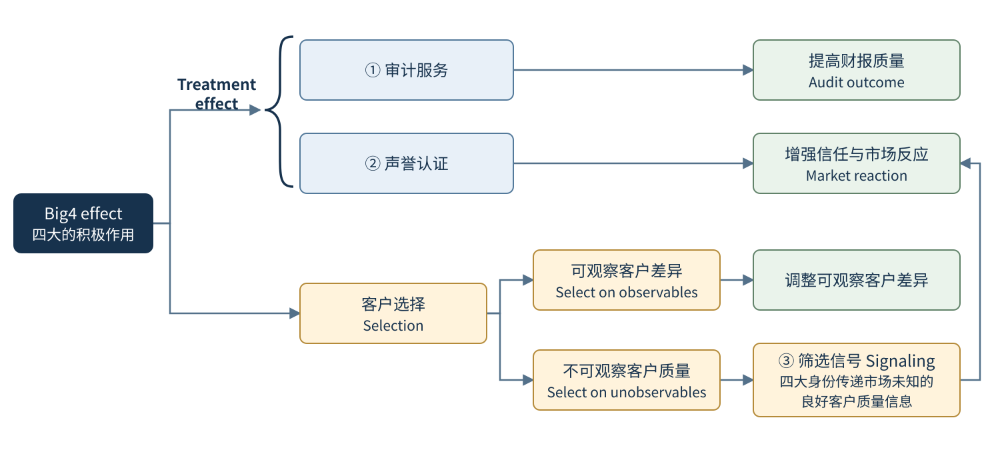
位置 | 研究问题 | 核心已有检验 | 证据 · —|—|—|— · 事实 | 四大客户财报质量更好、市场更认可、收费更高吗？ | 审计失败与其他质量代理、费用、好消息路径、短窗、长窗、ERC、分析师信息及修正 | 财报质量： 严格综合失败的原始发生率为四大2.26%、本土八大6.47%、Other 7.84%；传统应计及真实盈余管理等财报质量的衡量没有一致证据。市场： 四大客户整体ERC较高，短窗响应优势主要见于2012年前；长窗显示公告前已有部分差异，未见稳定的额外公告后长期溢价；分析师共同信息权重的排序结果在四控后为正。费用： 四大收费均值约为本土八大的3.7倍，同一客户换入后对数费用上升、换出后下降。 · 审计服务 | 换入四大是否改善财报？ | DID、PSM-DID、实际审计失败的分解、取消未来留任、换所前财务状况与公开风险匹配、经营对照、收购及人员迁移、IV | PSM-DID： 在[−4,+4]窗口，换入四大后的Fin、Raw未预警重述概率分别显著下降10.04个百分点（p<0.001）和8.29个百分点（p=0.044）；事前系数联合检验p分别为0.938、0.619，均未发现显著事前趋势。分解与补充： Fin实际重述也下降8.01个百分点（p=0.015）；取消未来留任要求后Fin、Raw下降仍显著，按换所前财务状况与公开风险进一步匹配后Fin重述概率下降5.30个百分点（p=0.056）。其他盈余质量指标没有一致平均改善，安永和大华的合并及人员迁移未提供稳定的全面改善证据。 · 客户选择 | 四大如何接受、预警和调整客户？ | 进入前特征、公共变量调整、年度PSM、意见与风险、进入退出、报告日后三年检验 | 可观察选择： 未来四大客户在规模、亏损及风险上已有事前差异；公共变量调整与年度PSM后仍有质量差异。意见与流动： MAO与四大客户次年退出显著正相关，也与非四大客户次年进入负相关。三年风险检验： 未来进入者的历史违规较少，历史重述差异不显著。 · 市场价值 | 可观察调整后市场优势还在吗？声誉是否有独立作用？ | PSM＋ERC、安达信声誉事件、安永—大华市场DID／IV | PSM＋ERC： 可观察客户特征匹配后，Big4×UE在CAR[−1,+1]、[−2,+2]、[−3,+3]中分别为0.144427、0.199523、0.190738，均p<0.001；整体盈利消息反应优势保留。声誉与准实验： 安达信1月声誉事件未获得显著负向组间CAR；安永—大华市场IV的交互工具较弱，尚未获得稳健的独立声誉认证因果证据。
核心结果
- 审计结果： 四大客户的严格综合失败率较低，传统应计及真实盈余管理差异随规格变化；四大收费存在明显溢价。
- 市场反应： 短窗的四大响应优势主要体现在2012年前；长窗显示部分消息响应差异在正式年报前已经形成，未见稳定的额外公告后长期溢价。ERC在三个公告窗口均较高；分析师共同信息权重的排序结果在四控后为正，提供补充证据。
- 审计服务： 换入及匹配DID的Fin重述结果较明确。实际重述也下降，取消未来留任要求后仍下降，按换所前已能观察到的财务状况和风险历史进一步匹配后，完整样本中的Fin重述降幅较小，仍达到10%显著水平。其他盈余和财报指标未呈现改善。
- 客户选择： 未来四大客户在进入前规模较大、国际化程度较高，亏损和违规较少；重述差异随口径与时期变化。新三年检验中，未来进入者的历史违规较少，仅10%显著；意见对Raw重述的组间预测差异显著，其他重述和违规预测结果较不一致；客户退出的发起方仍待核查。
- 市场认证： 四大客户具有显著更高的盈利反应系数，与投资者赋予其盈利信息更高的感知可信度一致。可观察客户特征PSM后，三个CAR窗口的ERC交互仍为正且p<0.001。服务、声誉和客户筛选是这一差异的可能来源。安达信审计丑闻及安永大华合并的外生冲击的审计质量和市场检验尚未提供稳健的因果证据。
- 时间机制： 2012年前可能同时存在较强四大声誉和较稀缺的非四大优质审计，由此产生较强声誉作用与较高筛选信号价值。已有分期、滚动和三组比较用于考察这一解释。
主要结果图表
主要证据包括较低的客户失败率、部分换所设计中的重述下降、进入前差异及稳定成分配置。市场端依次展示短窗、长窗、ERC和分析师结果，各自测量不同对象，分析师结果也未形成一致优势。以下图表保留这些差异；本轮新增分析见各节正文，研究判断集中在关键争议与下一步。
财报质量、收费与市值
四大客户的严格综合失败率为2.26%，低于本土八大的6.47%及Other的7.84%。但应计及真实盈余管理指标没有一致优势，质量差异主要体现在实际失败指标。四大收费存在明显溢价，客户市值也更高，服务改善与客户构成在后续设计中分别考察。
首先比较四大、本土八大和其他事务所的失败率及财报质量；收费与市值结果见1.2节。财报质量差异采用四大dummy回归；表中分别使用行业×年份FE及firm FE＋year FE，费用取\(\log(1+AuditFee)\)，市值取log。
\[ Y_{it}=\text{firm FE}+\text{year FE}+\beta Big4_{it}+\gamma^{\prime}X_{it}+\varepsilon_{it}. \]
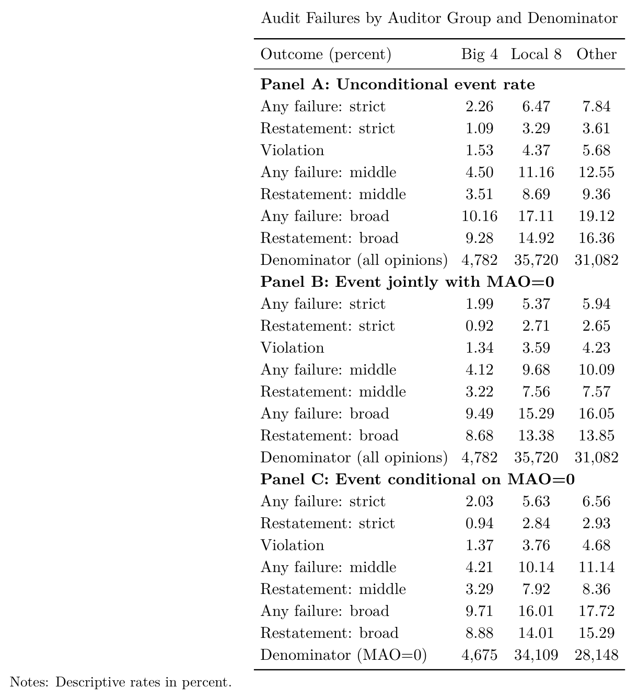
四大客户的Strict综合失败率、重述率和违规率分别为2.26%、1.09%和1.53%，均低于本土八大及Other。Fin、Broad定义以及未预警失败的比较也呈相同排序，四大客户较少出现实际财报问题。
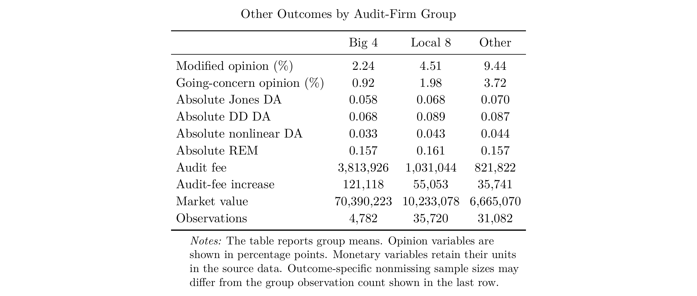
四大客户的MAO与GC比例分别为2.24%和0.92%，异常应计的原始均值也较低，REM均值则与Other相同。与此同时，四大的平均审计费明显更高，客户平均市值也更大，质量、价格与客户构成差异同时存在。
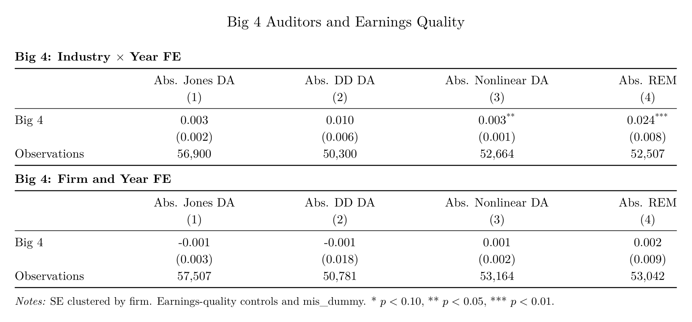
加入客户特征后，行业×年份FE规格中的非线性异常应计与REM系数显著为正；firm FE＋year FE规格中的四项系数均不显著。因此，传统盈余管理指标没有显示一致的四大质量优势。
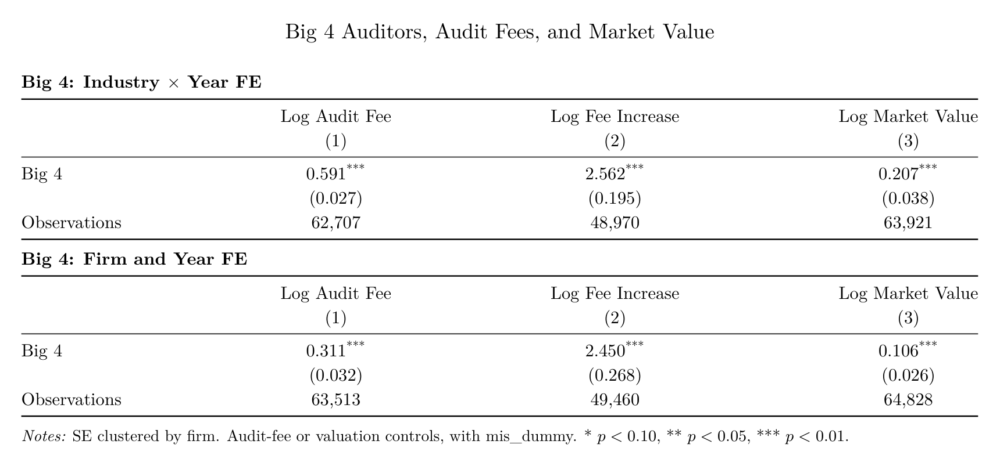
四大审计费、市值和费用增加额的系数在两套FE规格下均显著为正。firm FE＋year FE下，审计费和市值系数分别为0.311和0.106，说明价格溢价与四大身份相关，并非仅存在于原始均值比较。
短窗事件研究：年报公告附近的市场反应
短窗为[−5,+5]个市场交易日，−1日为基期，Y为原始收盘价log。好消息surprise>10%，中性为±10%以内；保留完整11日公告。固定效应为公司×财年、事件日和实际交易日期，公司×财年聚类，无额外控制。共同模型沿用审计组×好消息×事件日，不另加审计组×事件日。
四大的公告附近响应优势主要体现在2012年前，后期及不同比较中的结果并不一致。2012年前四大−Other在公告日为0.005564（p=0.0067）、+5日为0.009905（p=0.0277）；部分规格存在事前差异，完整检验见正文。
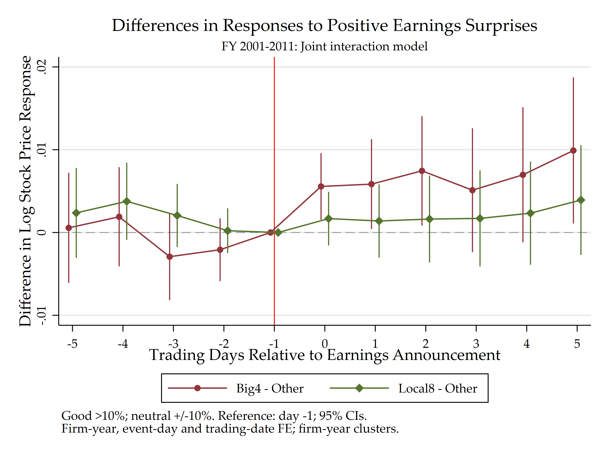
长窗事件研究：公告前后的价格路径
将窗口延伸至[−60,+60]并以−60日归零后，部分好消息与中性消息客户的价格差异在正式年报前已经形成。以下为含分红价格log的四组实际平均路径，无固定效应调整；完整组内及interaction回归见长窗正文。现有结果没有支持稳定的四大额外公告后长期溢价。四大好消息年度延续比例为61.51%，本土八大和Other分别为48.93%、47.13%，为理解此前信息提供背景，详见年度延续表。
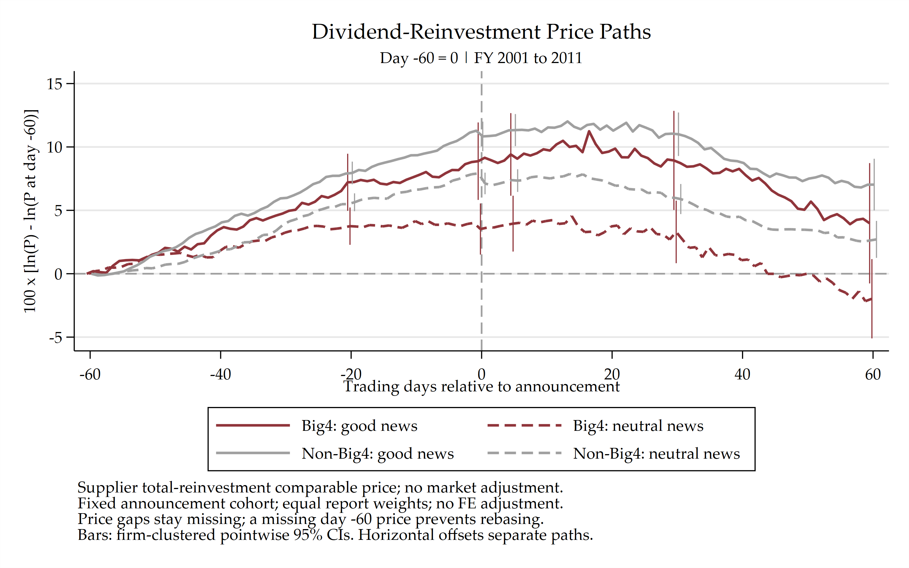
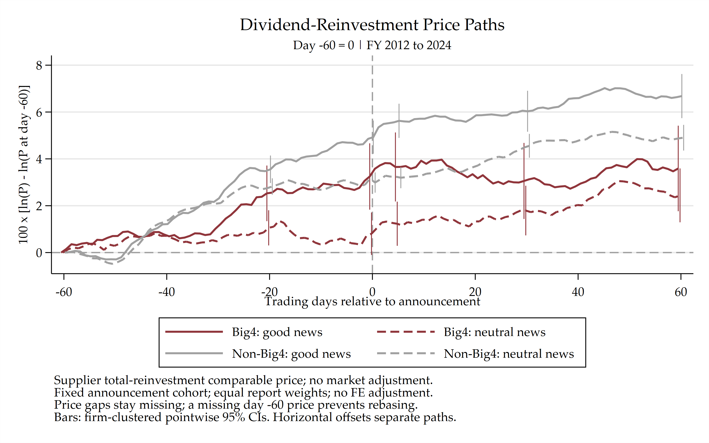
ERC：对连续盈利消息的反应
四大客户具有显著更高的盈利反应系数。在控制公司和财年固定效应及可观察公司特征后，公告期收益对盈利意外的敏感度显著高于非四大客户。原报EPS修复后，三个公告窗口的ERC差值分别为0.116073（SE=0.044493，p=0.0091）、0.160490（SE=0.056745，p=0.0047）和0.132594（SE=0.058719，p=0.0240）。按照Teoh、Wong（1993）的审计与ERC解释，这一结果与投资者赋予四大客户盈利信息更高的感知可信度一致。
UE为实际EPS减公告前180天预测中位数，再除以公告前一交易日股价；Y为各公告窗口的市场调整CAR。表报告Big4×UE，即四大−非四大的斜率差。
\[ CAR_{it}=\text{firm FE}+\text{year FE}+\delta Big4_{it}+\beta UE_{it}+\theta(Big4_{it}\times UE_{it})+\gamma^{\prime}X_{it}+\varepsilon_{it}. \]
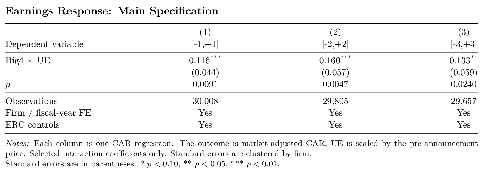
以[−1,+1]窗口为例，当盈利意外相当于公告前股价的1%（UE=0.01）时，四大客户的累计市场调整收益反应额外增加约0.116个百分点。三个系数衡量四大与非四大的ERC差值，具体单位、经济量级与可信度解释见ERC正文。
分析师：财报信息如何进入预期
分析师对四大客户共同信息的相对依赖增强，提供了一项财报可信度的补充证据。 在公告前后各180天、同券商预测同一下一财年EPS的样本中，行业×财年排序后的共同信息权重变化\(\Delta\rho\)，四大系数为0.021478（SE=0.009047，p=0.0177）。回归控制绝对盈利惊喜、对数市值、市场账面比和配对券商数，不含固定效应，标准误按公司聚类，N=9,977。
这个系数表示共同信息权重变化的行业×财年分位秩高约2.15个百分点。原值四控系数为0.014206（p=0.1333）；共同及私人信息精度未显著改善。正文集中展示\(\Delta\rho\)，精度结果见补充表。
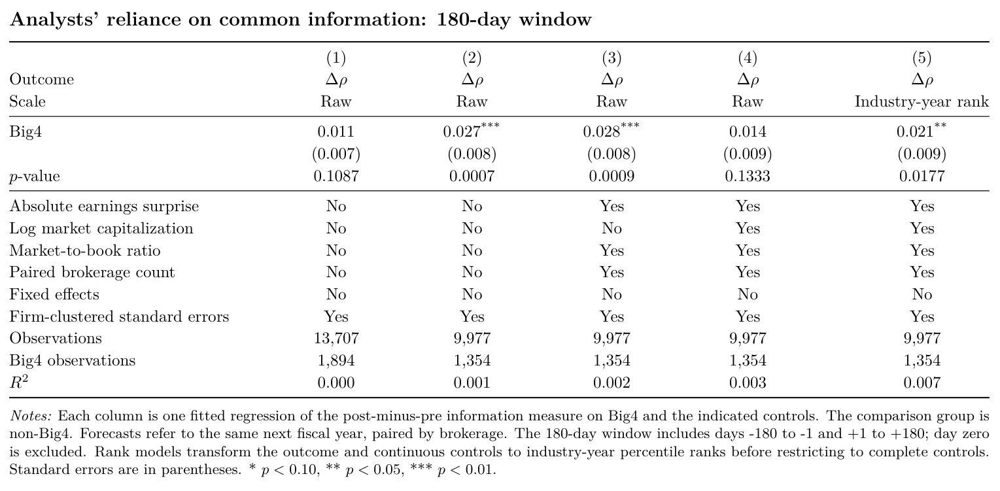
客户选择：事前差异与客户进出
未来四大客户在进入前已有规模、亏损及风险差异。当前四大客户获得MAO后次年退出概率显著较高，非四大客户获得MAO后次年进入概率较低。这些结果支持客户构成与风险调整参与形成四大客户组合，退出发起方需要结合变更公告核查。
第一张表比较未来进入者与始终非四大客户的事前特征；第二张表考察当前客户收到意见或风险公告后的次年退出／进入。两项比较分别刻画事前构成与后续组合调整。
\[ NextBig4_{it}=\text{firm FE}+\text{industry}\times\text{year FE}+\beta Signal_{it}+\gamma^{\prime}X_{it}+\varepsilon_{it}. \]
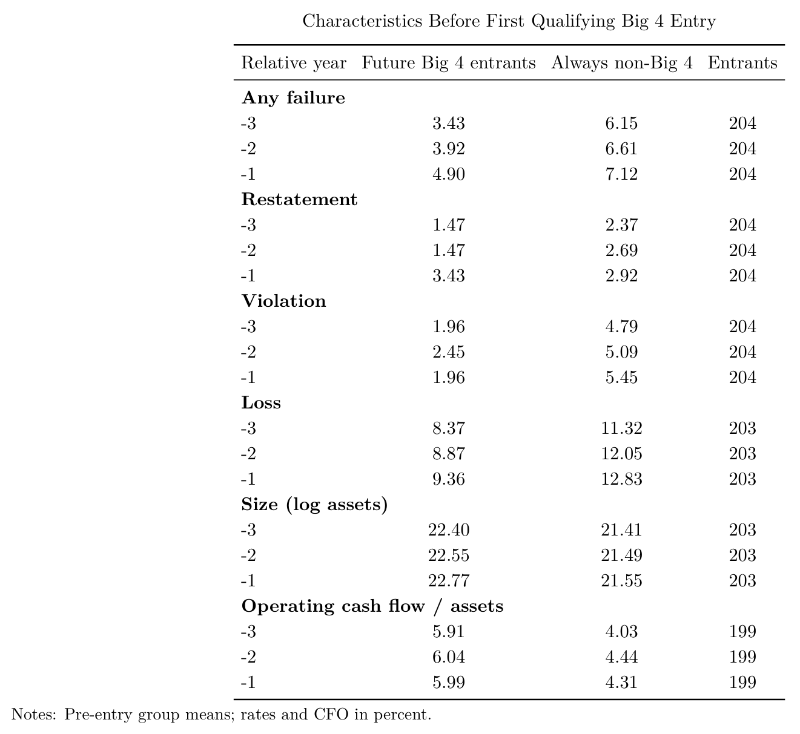
未来进入四大的客户在进入前三年已具有较大规模、较低亏损率与违规率、较高经营现金流。进入前一年，两组违规率为1.96%与5.45%；重述率则未始终保持同样排序，事前选择差异主要体现在规模与风险构成。

当前四大客户收到MAO和GC后，次年退出概率分别高30.40和20.62个百分点，均显著为正；非四大客户收到MAO后的次年进入概率低0.25个百分点（p=0.039）。意见与客户进出相关，表明客户组合会随风险信号调整。
审计服务：换所DID与PSM-DID
换入四大后，Fin重述在未匹配DID和匹配DID中均下降。扩展至[−4,+4]的加权PSM-DID中，Fin及Broad（Raw）未预警重述概率分别下降10.04个百分点（p<0.001）和8.29个百分点（p=0.044）；事前系数联合检验p值为0.938和0.619，未发现显著事前趋势。Fin的逐期下降更连贯，是审计服务部分最清楚的动态证据。
Y为各定义下的重述、违规及未预警综合失败dummy。换入与始终非四大比较，换出与始终四大比较；匹配DID使用既有事前客户特征与匹配权重。普通DID使用firm FE与行业×年份FE；下式为匹配后的stacked DID。
\[ Y_{ict}=\text{cohort}\times\text{firm FE}+\text{cohort}\times\text{industry}\times\text{year FE}+\tau(Treated_{ic}\times Post_{ct})+\gamma^{\prime}X_{it}+\varepsilon_{ict}. \]
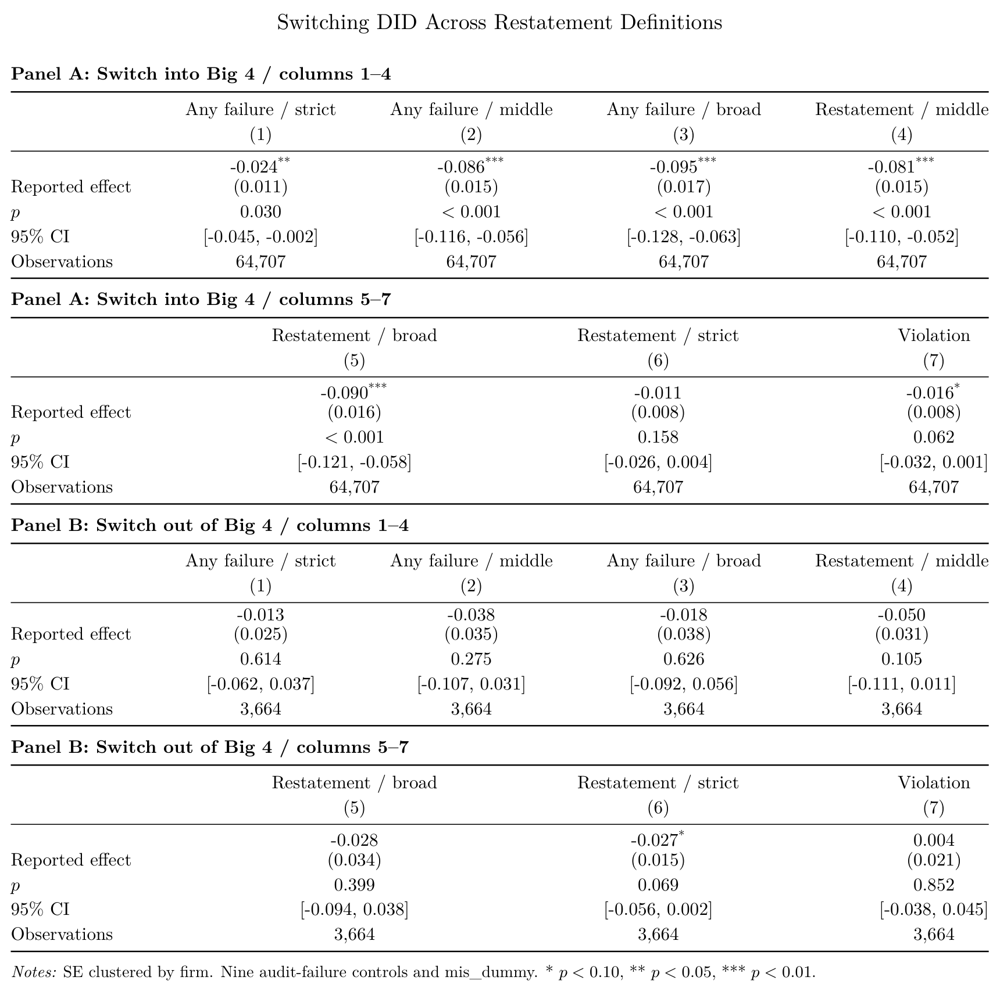
换入四大后的Fin和Broad未预警重述概率分别下降8.08和8.96个百分点，均p<0.001；Strict重述不显著，违规仅达到10%显著水平。换出结果没有呈现对称的风险上升，主要改善证据来自换入后的Fin与Broad重述。
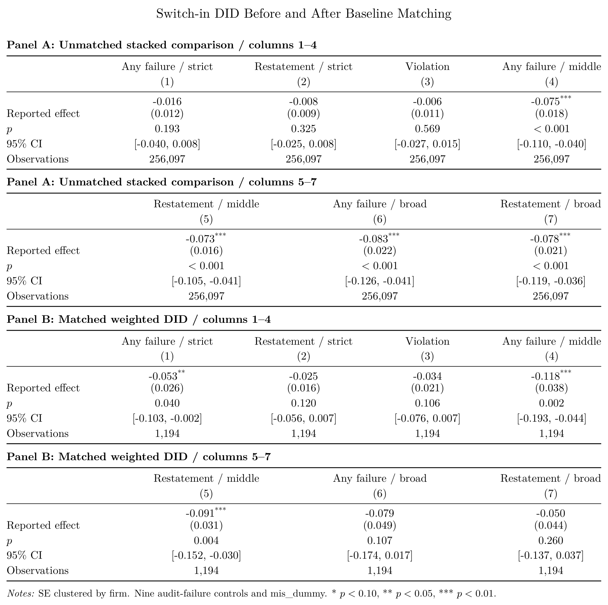
基准加权PSM-DID的Fin未预警重述概率下降9.11个百分点（p=0.004），Strict综合失败也显著下降；Broad重述系数为负但不显著。匹配后Fin改善仍保留，是这一窗口最清楚的质量结果。
动态回归将上式中的平均处理项替换为换所相对年份交互项，以换所前一年为基准：
\[ Y_{ict}=\text{cohort}\times\text{firm FE}+\text{cohort}\times\text{industry}\times\text{year FE}+\sum_{k=-4,\,k\ne-1}^{4}\tau_k\bigl(Treated_{ic}\times\mathbf{1}\{t-c=k\}\bigr)+\gamma^{\prime}X_{it}+\varepsilon_{ict}. \]
下列两张既有图均采用[−4,+4]窗口，上排为Fin，下排为Broad（Raw），左列为未预警综合失败，右列为未预警重述。未匹配与匹配回归分别使用各自样本；加权匹配回归包含1,763条堆叠观测、125家处理公司和107家对照公司，标准误按公司聚类。
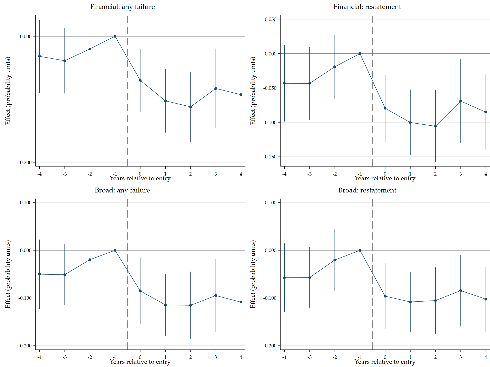
未匹配动态DID展示Fin与Broad综合失败和重述的换所前后路径，换入后的下降主要集中在重述及其综合失败指标。动态路径补充平均系数，说明变化发生在换入后的哪些年份。
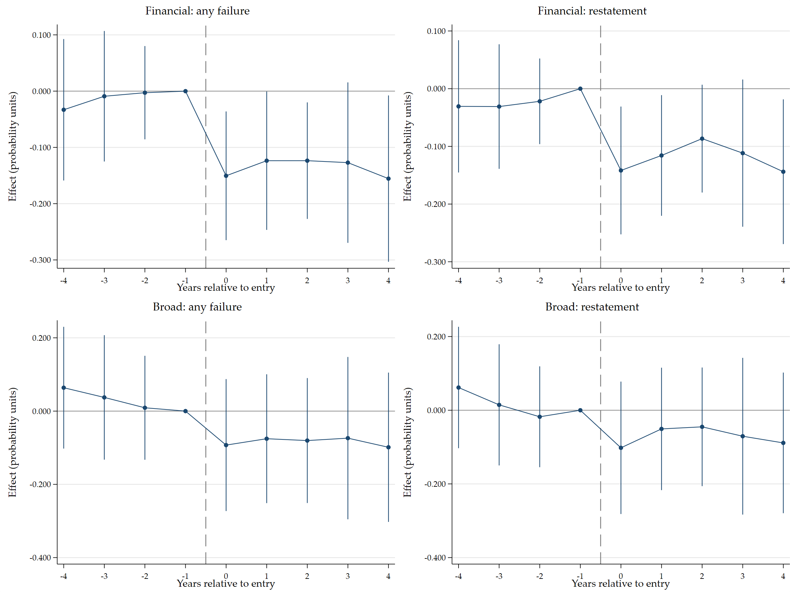
扩展窗口的加权PSM-DID中，Fin与Broad未预警重述概率分别下降10.04个百分点（p=0.0006）和8.29个百分点（p=0.0440），事前联合检验p值为0.938和0.619。两项均未发现显著事前趋势，Fin换入后的下降更连贯。
其他盈余质量与费用：换所后的变化
其他盈余质量指标没有一致平均改善；收费则随身份明显变化，换入四大后log费用上升、换出后下降。费用结果说明四大服务存在价格溢价，但质量改善的证据仍主要来自重述。
分别以异常应计／REM的绝对值、\(\log(1+AuditFee)\)及市值log为Y，比较换入和换出四大后的变化；控制项按各类结果设置。
\[ Y_{it}=\text{firm FE}+\text{industry}\times\text{year FE}+\tau DID_{it}+\gamma^{\prime}X_{it}+\varepsilon_{it}. \]
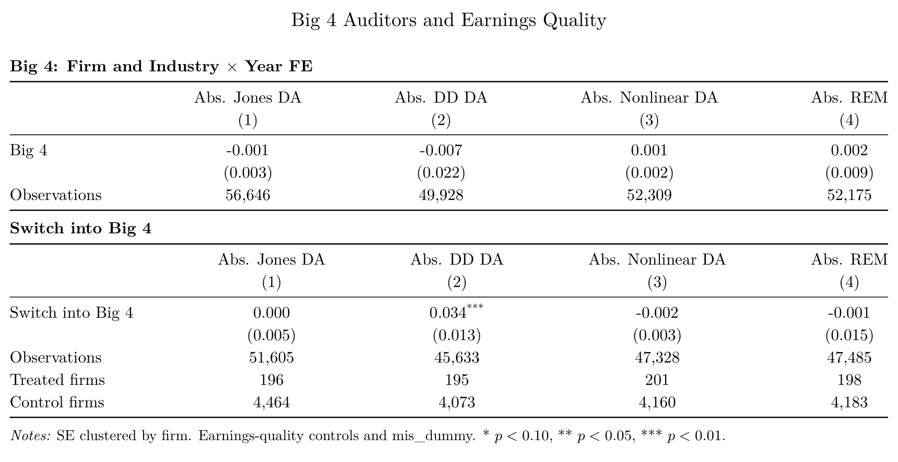
换入四大后，Jones异常应计、非线性异常应计和REM未显示显著改善，DD异常应计系数则显著为正。服务改善并未一致反映在这些盈余管理代理上，主要支持仍来自重述。
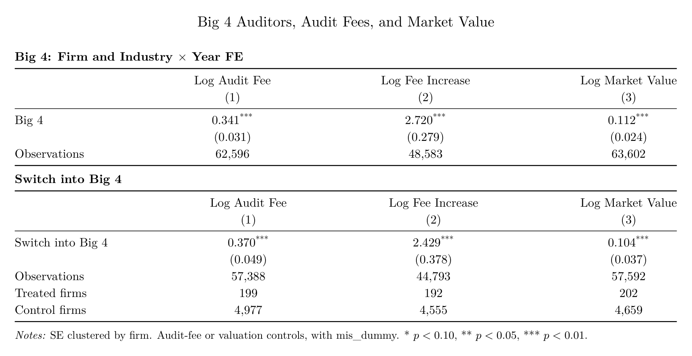
换入四大后，审计费系数为0.370，市值系数为0.104，均达到1%显著水平。四大身份变化伴随收费上升，价格结果与重述改善共同构成服务价值的证据。
实际重述与审计意见分解
Fin实际重述概率下降8.01个百分点（p=0.015），并非只有未预警重述下降；MAO总体变化不显著。这表明主要结果包含实际失败减少，不能仅由审计意见改变解释。
同一匹配DID比较实际失败及未预警、已预警分量，检验下降是否仅来自审计意见变化。
\[ Y_{ict}=\text{firm}\times\text{cohort FE}+\text{cohort}\times\text{industry}\times\text{year FE}+\tau(G_{ic}\times Post_{ct})+\gamma'X_{it}+\varepsilon_{ict}. \]
\(G\)为进入四大的处理组，\(Post\)从进入财年取1，九项控制及mis_dummy、公司聚类，窗口为[−4,+4]。
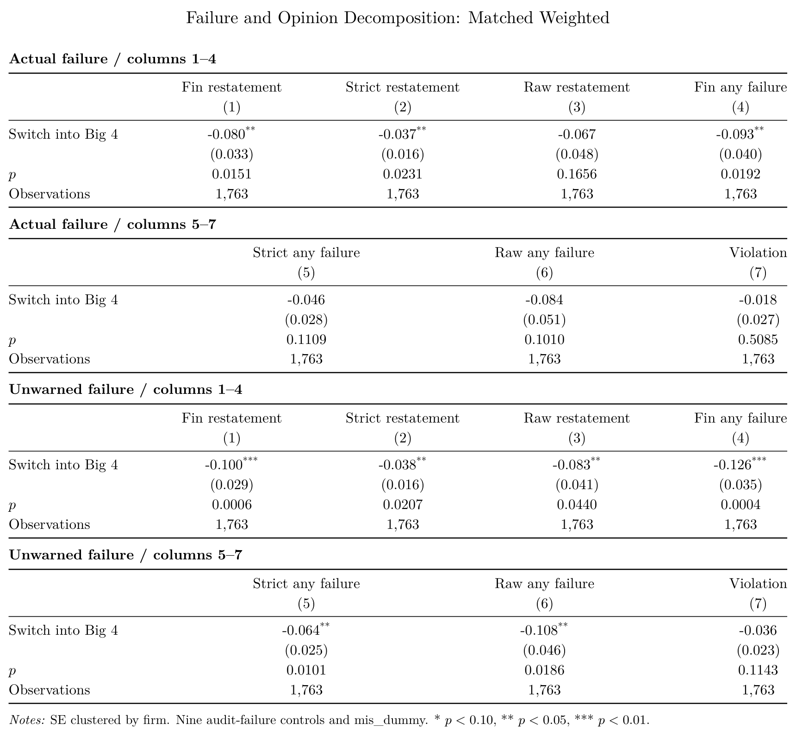
Fin实际重述概率下降8.01个百分点（p=0.0151），未预警重述概率下降10.04个百分点（p=0.0006）；Strict实际重述也显著下降。下降同时出现在实际问题与未预警问题中，结果包含实际财报失败减少。
取消未来留任要求
允许客户换入后再次退出四大，Fin与Raw重述的下降仍显著，说明结果并非完全由事后持续留任的样本要求驱动。
沿用换入DID，允许进入四大后再次退出，比较留任限制是否驱动结果。
\[ Y_{ict}=\text{firm}\times\text{cohort FE}+\text{cohort}\times\text{industry}\times\text{year FE}+\tau(G_{ic}\times Post_{ct})+\gamma'X_{it}+\varepsilon_{ict}. \]
\(G\)为进入四大的处理组，\(Post\)从进入财年取1，九项控制及mis_dummy、公司聚类，窗口为[−4,+4]。
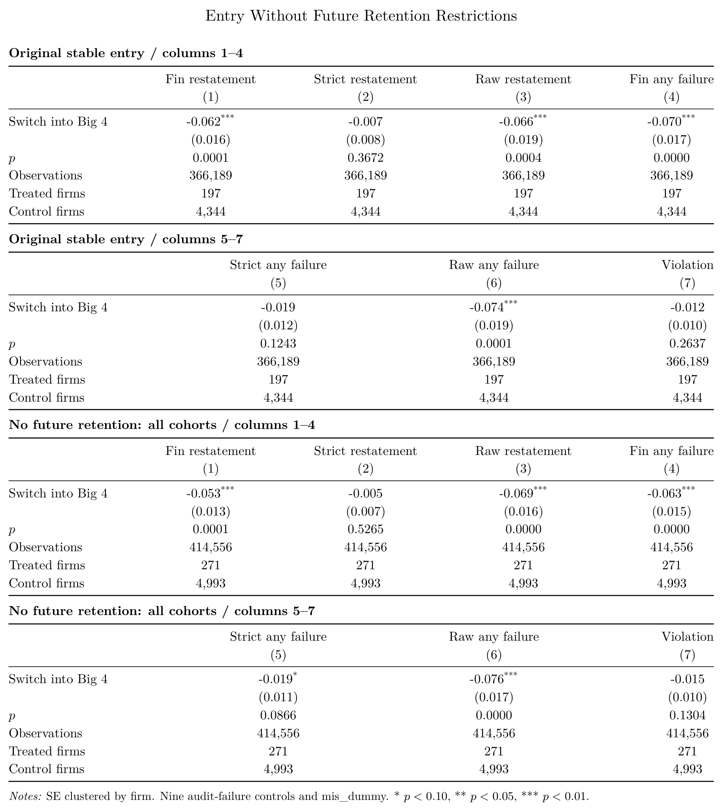
取消未来留任要求后，Fin和Raw未预警重述概率分别下降5.33和6.87个百分点，均达到1%显著水平。允许进入后再次退出，重述下降仍保留，持续留任筛选并非该结果的唯一来源。
按换所前财务状况和公开风险匹配
这一检验基于换入四大之前已经能观察到的财务状况和风险历史匹配。原来的PSM主要比较换入前一年的客户特征；这里再比较此前三年的财务表现，以及进入前已经公告的重述和违规记录，为进入四大的公司寻找此前状况相近的非四大对照。未来才披露的违规或重述不用于匹配。
下表只保留原匹配与新增匹配都包含的公司年度，用各自的匹配权重估计DID，比较两种做法在共同样本中的结果。
\[ Y_{ict}=\text{firm}\times\text{cohort FE}+\text{cohort}\times\text{industry}\times\text{year FE}+\tau(G_{ic}\times Post_{ct})+\gamma'X_{it}+\varepsilon_{ict}. \]
\(G\)为进入四大的处理组，\(Post\)从进入财年取1，九项控制及mis_dummy、公司聚类，窗口为[−4,+4]。
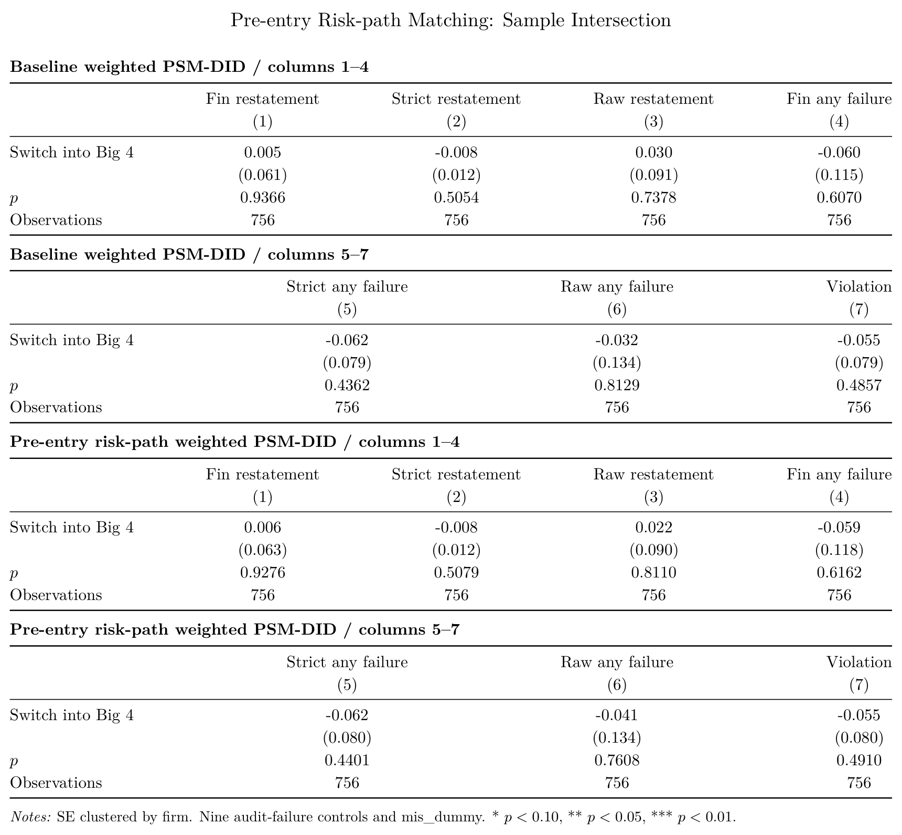
这张表使用756条共同样本观测，两种匹配中的Fin、Strict、Raw重述结果均不显著。后文另展示新增匹配的完整样本：Fin未预警重述概率下降5.30个百分点（p=0.056）。共同样本与完整样本的比较显示，结论对匹配覆盖敏感。
供应链IV
供应商冲击对四大采用的第一阶段有统计支持，但KP F为4.515；并集组KP F为0.970。这些第一阶段强度限制了2SLS的精度和因果解释。
供应链冲击用于预测四大采用，再估计四大对审计失败dummy的作用。
\[ Big4_{it}=\text{firm FE}+\text{industry}\times\text{year FE}+\pi Z_{it}+\eta^{\prime}X_{it}+u_{it},\qquad Y_{it}=\text{firm FE}+\text{industry}\times\text{year FE}+\beta\widehat{Big4}_{it}+\gamma^{\prime}X_{it}+\varepsilon_{it}. \]
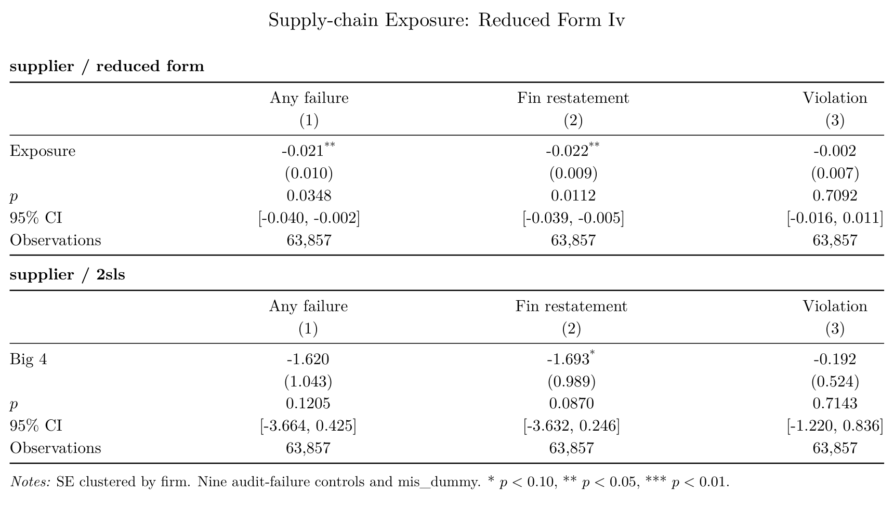
供应商冲击的简约式中，综合失败与Fin重述概率分别下降2.10和2.19个百分点，均达到5%显著水平。2SLS中的Fin重述仅达到10%显著水平，且第一阶段KP F为4.515，因果估计的精度受到弱工具影响。
安永—大华转入四大
收购提供了区别于主动换所的身份变化，但可用处理客户有限，现有结果未显示稳定的全面财报质量改善。它补充了准实验检验，主要质量证据仍来自换所DID与PSM-DID。
固定2001财年大华客户，按2002财年转入构造处理；表中同时列第一阶段、DID与IV。
\[ Big4_{it}=\text{firm FE}+\text{industry}\times\text{year FE}+\pi Z_{it}+\eta^{\prime}X_{it}+u_{it},\qquad Y_{it}=\text{firm FE}+\text{industry}\times\text{year FE}+\beta\widehat{Big4}_{it}+\gamma^{\prime}X_{it}+\varepsilon_{it}. \]
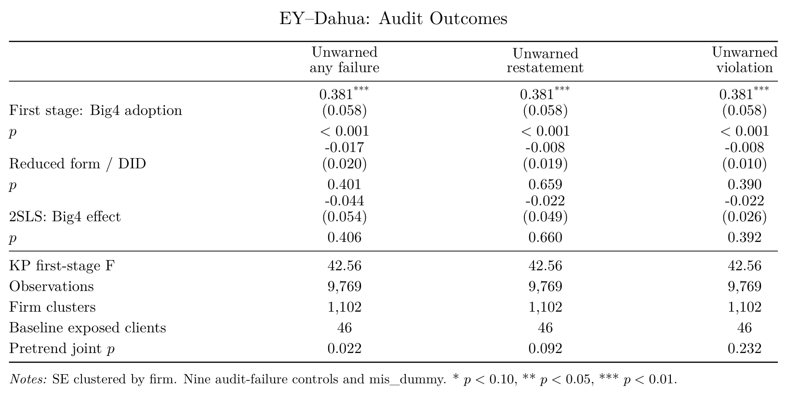
合并对应的四大采用概率上升38.13个百分点，KP F为42.56；但三个失败指标的DID和2SLS均不显著。综合失败的事前联合检验p=0.022，这一事件没有给出与换所DID同样清楚的质量改善证据。
同一签字人员—客户转入四大
保持人员—客户关系后，全部批次的主要失败结果不显著，且处理客户支持较少。现有结果尚未形成独立于人员与客户关系的全面四大平台改善证据。
固定既有人员—客户关系，在同一关系转入四大后比较审计结果。
\[ Y_{rct}=\text{relationship}\times\text{cohort FE}+\text{cohort}\times\text{industry}\times\text{year FE}+\tau(Treated_{rc}\times Post_{ct})+\gamma^{\prime}X_{it}+\varepsilon_{rct}. \]
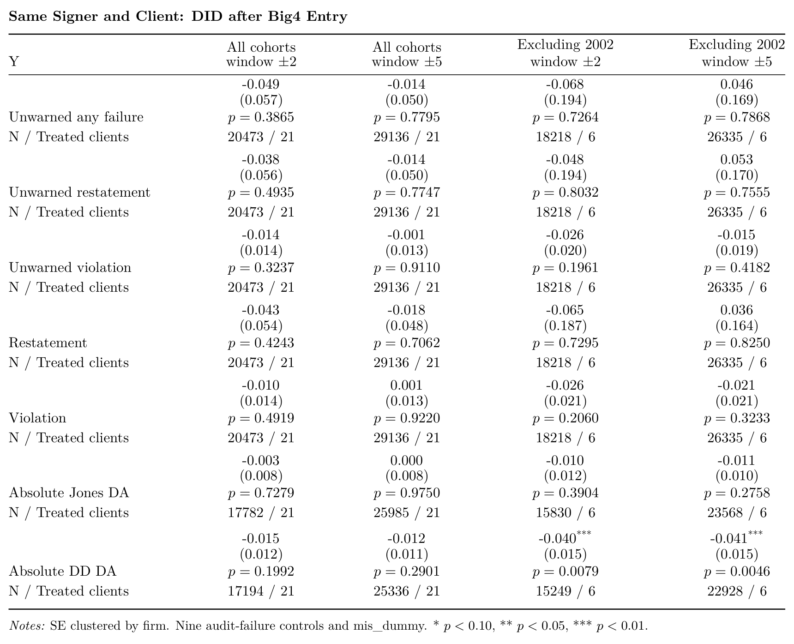
保持签字人员—客户关系的全部批次检验中，主要失败指标均不显著。排除2002年后DD异常应计显著下降，但失败结果仍不显著，四大平台作用的支持集中于个别指标。
匹配后的市场认证
匹配后，三个CAR窗口的Big4×UE分别为0.144427、0.199523和0.190738，均p<0.001。调整可观察客户特征后，四大客户仍具有更高的盈利反应系数，与市场赋予其盈利信息更高的感知可信度一致。
在可估计ERC的共同候选样本匹配四大与非四大客户，保留匹配权重后估计Big4×UE。
\[ CAR_{it}=\text{firm FE}+\text{year FE}+\delta Big4_{it}+\beta UE_{it}+\theta(Big4_{it}\times UE_{it})+\gamma'X_{it}+\varepsilon_{it}. \]
以匹配权重估计，X为市值、MB及预测覆盖，按公司聚类。最终样本4,552条事件、774家公司；三个窗口共用样本。
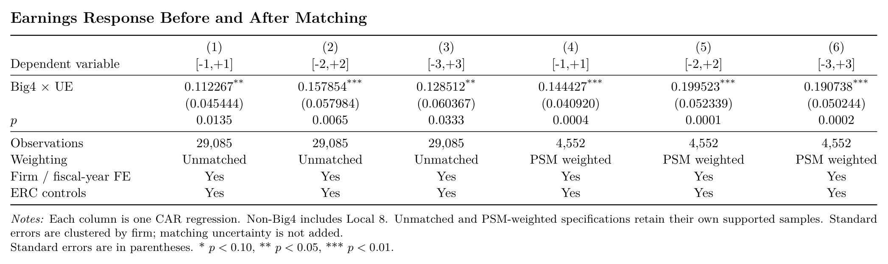
以[−1,+1]窗口为例，UE增加0.01时，匹配后的四大客户相对非四大客户的额外CAR反应约为0.1444个百分点。匹配后的ERC优势构成盈利信息可信度解释的补充证据。
安达信声誉事件
三个客户定义均未获得显著负向组间CAR，因此中国样本中的这次声誉事件尚未提供明确的市场认证因果证据。
Y为2002年1月11、14、15日三日市场调整CAR；分别比较安达信与Other Non-Big4、Big4。
\[ CAR_i=\text{industry FE}+\delta_A Andersen_i+\delta_B Big4_i+\varepsilon_i. \]
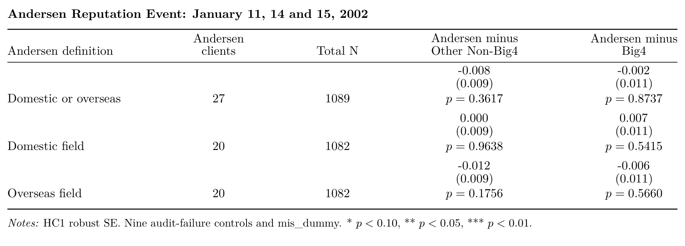
并集定义下，安达信相对其他非四大和四大的CAR差分别为−0.007987与−0.001684，均不显著；境内、境外定义也没有显著负差。中国样本的这次事件未呈现明确的声誉损失价格反应。
安永—大华的市场检验
转入四大后的市场消息斜率未形成稳健改善证据，交互工具也较弱。市场部分较明确的发现是ERC及匹配后的ERC优势；收购事件的认证效应仍待识别。
检验转入后的消息反应斜率变化，分别使用分析师盈利意外和EPS变化代理。
\[ CAR_{it}=\text{firm FE}+\text{year FE}+\tau(Treated_i\times Post_t\times News_{it})+\text{lower-order terms}+\gamma^{\prime}X_{it}+\varepsilon_{it}. \]
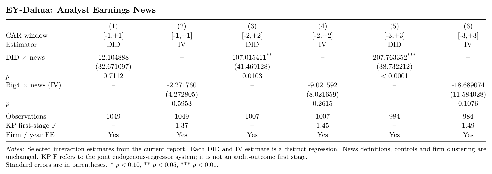
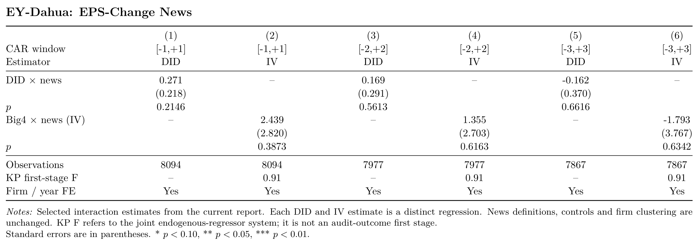
分析师消息的宽窗口DID为正且显著，但处理组转入前只有2个事件；EPS变化代理的DID与IV均不显著，两套交互IV的KP F均较低。因此，这次合并尚未形成稳定的市场认证改善结果。
文献与研究问题
文献中的 Big4 effect 包含三个不同问题：大所客户是否有更好的财报质量，差异有多少来自客户选择，以及大所身份是否改变市场对财报信息的使用；历史文献使用 Big 8、Big 6、Big 5 或 Big N，这与我们有所不同。
理论基础：审计服务、声誉与选择信号。 DeAngelo（1981）（JAE）不使用实证客户样本，而是在审计师发现并报告违约的理论模型中说明，拥有更多客户及未来准租金的大所更有维护独立性的动机，为大所质量优势提供理论解释，为后续实证提供理论基准。
Titman、Trueman（1986）（JAE）不使用实证数据，而是在新股发行的非对称信息模型中同时考虑审计信息精度和企业选择审计师的信号作用，说明高质量企业的选择可以向投资者传递私人信息，为选择的经济价值提供理论依据，其预测为研究客户筛选与信息认证提供理论出发点。
财报质量：早期大所优势及其制度条件。 Becker、DeFond、Jiambalvo、Subramanyam（1998）（CAR）使用美国10,379个 Big 6 客户年度和2,179个非 Big 6 客户年度，通过可操纵应计的客户特征调整比较发现非 Big 6 客户具有更高的增利应计和绝对应计偏离，支持大所与较少盈余管理相关，其识别基于所列客户特征调整后的比较。
Lennox、Pittman（2010）（CAR）将美国1981—2001年上市公司财务资料与 SEC 会计执法所确认的舞弊发生年度连接，通过舞弊 Probit、审计师选择匹配、舞弊风险匹配及任期和换所时序检验发现 Big 5 客户的舞弊概率较低，增强了实际失败指标上的证据，对因果效应的解释仍依赖持续客户选择的处理。
Francis、Wang（2008）（CAR）使用1994—2004年42个国家的公司财报及投资者保护制度资料，比较应计、亏损确认和稳健性与审计师类型及制度的交互关系，发现 Big 4 的盈余质量优势随投资者保护增强而扩大，说明品牌效果依赖制度激励，其比较对象是不同制度下的大所质量差异。
Ke、Lennox、Xin（2015）（TAR）使用1995—2012年中国四大上市客户的年报、CSMAR 和审计师履历，在大陆单一监管与存在独立香港审计的 AH 客户之间进行控制及匹配比较，发现弱制度环境下四大配置的审计师经验较少、意见较宽松、费用较低且有符号异常应计较高，揭示同一品牌内部随制度环境变化的质量差异。
客户选择：可观察调整是否消除 Big4 effect。 Lawrence、Minutti-Meza、Zhang（2011）（TAR）使用美国1988—2006年 Compustat、CRSP 和 I/B/E/S 数据，以规模、周转率、流动性、杠杆和 ROA 等客户特征进行 PSM，发现匹配后的异常应计、隐含资本成本和分析师预测准确度差异不显著、客户规模尤其重要，结论适用于所选特征和共同支持内的匹配比较，仍受不可观察选择与统计精度约束。
DeFond、Erkens、Zhang（2017）（Management Science）使用美国1988—2006年及2004—2013年上市客户的财务和 Audit Analytics 数据，比较匹配比例、卡尺、放回规则及非线性选择模型等大量平衡设计，发现多数设计仍保留 Big N 在应计、重大向下重述及困境客户持续经营意见上的质量优势，显示匹配规则和统计功效会影响对质量差异的判断。
Johnstone、Bedard（2004）（JAR）使用美国一家大型事务所2000—2001年超过7,000家上市及私人客户的内部风险评分与客户关系记录，通过接受、留任及主动终止的 Logit 比较发现事务所淘汰较高风险客户、接受相对较低风险客户，为事务所供给侧筛选提供直接资料，研究对象是接受、留任和终止客户的选择过程。
Wang、Wong、Xia（2008）（JAE）使用中国1993—2003年5,759个纯 A 股公司年度的所有权、审计师及地区制度资料，通过审计师选择 Logit 及所有权与制度交互发现国企尤其地方国企更倾向选择小型本地事务所、弱制度地区更明显，说明审计师选择有制度及产权基础，为解释审计师选择提供制度背景。
较强识别：改变组织归属或审计环境。 Jiang、Wang、Wang（2019）（TAR）使用美国1976—1995年20次 Big N 收购非 Big N 所涉及的331家公众客户及其前后财报，通过收购 DID、匹配、安慰剂及以收购为工具的质量 IV 发现应计等质量指标改善，却未发现 ERC、隐含资本成本或收购公告 CAR 显著改善，提供减少客户主动换所选择的准实验，但仍需客户留任及收购冲击的识别假设。
Che、Hope、Langli（2020）（Management Science）使用挪威2004—2012年私人有限责任公司的财务、付款违约和实名合伙人资料，跟踪68名可用的非四大转入四大合伙人及随行客户，通过同一客户—合伙人组合、匹配 DID 与安慰剂发现持续经营判断、应计质量及费用提高，为四大组织环境的增量作用提供准实验线索，但合伙人招聘和客户随行仍有选择。
Lennox、Wu、Zhang（2016）（JAE）使用中国2006—2012年财政部私有审计前后报表及 CSMAR 资料，在同一套报表内比较审计调整前后的盈余性质，发现调整后持续性、平滑性及应计质量提高而盈余零点不连续未减少，直接展示审计调整的作用，处理对象是同一报表中的审计调整。
Khurana、Lundstrom、Raman（2021）（CAR）使用美国2001—2010年 Compustat、Audit Analytics 及 PCAOB 首次检查时点构成的35,246个客户年度，以错开的首次检查进行 DID 并补充固定审计师匹配和熵平衡，发现四大在重述等质量指标上的检查后改善大于非四大，识别的是监管检查对不同审计师的差异作用。
市场使用财报：消息反应与信息环境。 Teoh、Wong（1993）（TAR）使用美国1980—1989年 Compustat、CRSP 和 I/B/E/S 的行业—资产匹配客户及134次换所事件，以盈利意外与 Big 8 身份交互的 ERC 回归和换所前后比较发现大所客户的盈利反应斜率更高，支持市场感知的可信度差异，但匹配和主动换所没有完全排除选择。
Behn、Choi、Kang（2008）（TAR）使用美国1996—2001年 I/B/E/S 与 Compustat 的分析师覆盖客户，通过预测误差、分歧回归及审计师选择 Probit／IMR 发现 Big 5 客户预测更准确、分歧较低且非 Big 5 行业专家也有信息优势，但选择修正依赖排除变量和分布假设，原文没有将其视为已经识别的因果关系。
Francis、Ke（2006）（RAST）使用美国2001年首次非审计服务费披露前后3,133家公司、16,910个公司季度的费用、盈利预测及收益资料，以披露后、高非审计费与盈利消息的交互比较发现高非审计费客户的 ERC 在披露后降低，提供投资者利用审计独立性信息的制度事件证据，但处理对象是费用信息披露而非四大聘用。
Gipper、Leuz、Maffett（2020）（RFS）使用美国上市公司的盈利消息、市场反应及 PCAOB 监管资料，利用监管实施与审计师、财年及检查展开时点的差异发现盈利消息反应和年报交易反应增强，为监管提高报告可信度提供准实验依据，识别对象是监管对报告可信度的作用。
声誉冲击：在既有客户中研究市场价值。 Chaney、Philipich（2002）（JAR）使用安达信公开承认销毁安然文件时美国其他既有客户的收益及审计关系资料，以短窗口异常收益事件研究发现客户负向反应、休斯敦办公室客户损失更大，为声誉具有市场价值提供冲击证据，但共同新闻及安达信客户事前构成仍需考虑，且不是 ERC 或四大聘用实验。
Weber、Willenborg、Zhang（2008）（JAR）使用德国2002年 ComROAD 丑闻期间 KPMG 其他上市客户的收益与后续审计师关系，以事件收益和客户流失分析发现负向价格反应及流失增加，在相对较弱诉讼环境中支持声誉渠道的重要性，但不直接识别四大服务对财报质量或盈利消息斜率的作用。
Skinner、Srinivasan（2012）（TAR）使用日本佳丽宝舞弊及2006年中央青山被暂停执业前后的既有客户审计关系，在低诉讼环境下分析客户更换发现声誉受损后大量客户离开，提供客户重视审计师声誉的事件证据，其结果变量是声誉受损后的客户流动。
费用：市场溢价的事实与解释。 Craswell、Francis、Taylor（1995）（JAE）使用1,484家澳大利亚上市公司的审计费用及客户、事务所行业资料，通过品牌和行业专长的费用比较发现 Big 8 品牌及行业专长均有费用溢价，为本项目“更贵”的事实提供参照，费用溢价的来源需要结合质量、声誉与客户构成进一步辨别。
与中国数据及分析师指标直接相关的补充研究。 Eshleman、Guo（2014）（AJPT）使用美国2000—2009年 Compustat 与 Audit Analytics 客户，在同年同业进行有放回 PSM 后比较重述及执法失败，发现四大客户失败较少，为实际失败指标上的匹配路线提供依据，但没有外生四大分配。
Chen、Krishnan、Li、Zhang（2022）（JIAR）使用中国2006—2011年 CICPA 私有审计前后报表及 CSMAR／Wind 的6,323个公司年度，通过审计前质量的选择回归、结果控制及熵平衡发现四大客户审前质量已经更好，控制审前质量后审后异常应计优势消失而重述优势仍保留，直接揭示进入审计前的选择，其识别仍依赖对剩余客户选择的处理。
He、Sidhu、Taylor（2019）（JBFA）使用美国1985—2015年 I/B/E/S 和 Compustat 的25,111个公司年度，比较同一预测目标在盈利公告前后的共同及私人信息指标并使用 IMR、PSM、CEM 和 SOX 监管扩展，发现大所客户的信息环境改善更多、部分匹配结论对设定敏感，不同结果分别对应信息环境、客户匹配和监管变化。
识别方法的边界。 Lennox、Francis、Wang（2012）（TAR）通过会计研究中的选择模型方法评估说明样本选择与内生处理不同、排除变量和函数形式会影响结果，强调 IMR 的解释取决于排除限制和模型设定。
Larcker、Rusticus（2010）（JAE）通过工具变量方法分析说明弱相关性或不成立的排除限制可能使 IV 比 OLS 更不可靠，因此收购、供给或网络变量需要分别证明第一阶段与外生性，第一阶段与排除限制需要分别论证。
四大效应的识别方法：文献、项目做法与证据
下表比较直接研究大所身份、组织平台与声誉作用的设计。匹配依赖条件可交换性和共同支持，选择修正依赖模型与排除限制；收购、人员迁移和声誉冲击则利用特定事件形成比较。每项设计同时列出本项目的实施状态、结果和识别条件。
文献怎么研究四大作用 | 我们做了什么 | 结果是什么，还有什么没做 · —|—|— · 找特征相近的客户，比较财报质量。 Lawrence、Minutti-Meza、Zhang（2011）、DeFond、Erkens、Zhang（2017）、Eshleman、Guo（2014）：为四大和非四大客户寻找规模、盈利、杠杆等特征相近的比较对象，再比较质量。 | 已做。 用五项和九项客户特征分别做年度PSM；也在同一批公司年度中逐步加入控制变量和固定效应。 | 控制客户特征和年度匹配后，四大客户仍有部分失败概率较低。说明已纳入的客户特征没有解释全部差异；服务和未观察到的客户差异还可能同时存在。 · 找舞弊风险相近的客户，再比较舞弊。 Lennox、Pittman（2010）除客户特征匹配外，另按舞弊风险寻找对照。 | 已做公开风险历史匹配。 使用财务特征及过去已公告的重述、违规记录；原文的舞弊风险指标与匹配样本尚待构造。 | 已完成的公开风险历史匹配使用换入四大前已知的信息；信息集限定为换所前公开可得的记录。 · 找特征相近的客户，比较市场对盈利消息的反应。 Teoh、Wong（1993）使用行业和资产匹配研究ERC；Behn、Choi、Kang（2008）、He、Sidhu、Taylor（2019）研究分析师信息，并调整客户选择差异。 | 已做PSM＋ERC。 在能计算ERC的公司年度中重新匹配四大与非四大客户，再比较同样幅度的盈利消息对应多大的公告期股价反应。 | 匹配后ERC样本为4,552个事件、774家公司，三个CAR窗口的四大额外反应系数为0.144427、0.199523、0.190738，均p<0.001。客户特征匹配后，四大优势仍保留；但这项比较还不能单独分出声誉和筛选信号。 · 先估计哪些公司会选择大所，再调整结果回归（IMR）。 Behn、Choi、Kang（2008）先用规模、长期资产占比、存货与应收占比、杠杆、亏损、ROA，以及过去两年长期债发行是否超过原长期债20%，估计聘用Big 5的概率，再计算IMR加入预测准确度和分歧回归（p.332，脚注10）。He、Sidhu、Taylor（2019）使用规模、固定资产占比、应收与存货占比、杠杆、亏损、ROA和当期债务发行估计选择概率；其中只有规模也进入信息结果方程，其余六项作为主要排除变量（接受稿第18页，§4.4）。 | 已完成PSM，IMR待实施。 当前用财务特征估计四大聘用概率并匹配客户。原文这些变量中，不少已在本项目客户特征中使用；债务发行等具体定义还需逐项核对。 | 原文的做法依赖一个具体假设：上述只放在选择方程中的变量影响审计师选择，但不直接解释第二步的分析师预测结果。融资、杠杆和资产构成也可能直接影响预测或财报质量，本项目使用这些排除变量前需要逐项论证其作用渠道。 · 直接观察交给审计师之前的报表，再看审计后的质量。 Chen、Krishnan、Li、Zhang（2022）使用同一财年审计前的报表，调整客户原本的报表质量。 | 当前可用的是公开审后财报。 同财年的私有审计前报表尚不可得。 | 现有财务状况和公开风险历史用于调整客户事前差异；同财年审前—审后比较需要原始审前报表。 · 比较客户换入大所前后的变化。 Teoh、Wong（1993）比较换所前后ERC；Jiang、Wang、Wang（2019）、Che、Hope、Langli（2020）在各自事件设计中使用匹配前后比较。 | 已做普通换所DID和PSM-DID。 把换入四大的公司与未换入公司比较，检查换入前趋势及换入后变化；另检查实际重述、取消未来留任要求，以及按换所前财务状况和公开风险历史进一步匹配。 | −4至+4年PSM-DID中，Fin和Raw未预警重述概率分别下降10.04和8.29个百分点；事前联合检验p=0.938和0.619，未发现显著事前趋势。Fin实际重述也下降，其他盈余质量指标没有一致改善。 · 利用大所收购小所，比较原小所客户的财报质量变化。 Jiang、Wang、Wang（2019）利用收购引起的客户转入，减少客户主动换所带来的选择问题。 | 已做安永—大华DID。 固定2001财年46家大华客户，以2002财年为转入时点，其中35家下一财年由安永大华审计；分析保留全部46家事前客户。 | 合并DID中，未预警综合失败概率下降1.70个百分点，但不显著（p=0.401），重述和违规也不显著。中国只有这一项可用对应事件，且并非全部客户都转入。合并专用匹配版尝试过，但匹配模型未收敛，未得到有效结果；普通换所PSM-DID已完成。 · 用收购预测是否成为四大客户，再估计质量作用。 Jiang、Wang、Wang（2019）在质量检验中使用收购工具变量。 | 已做安永—大华IV。 第一步估计原大华客户在合并后有多大概率使用四大；第二步用这部分由合并带来的四大身份变化估计质量变化。 | 第一步的四大采用概率上升38.13个百分点，KP F=42.56；第二步综合失败概率下降4.45个百分点，但不显著（p=0.406）。工具对聘用四大有较强预测力，但没有得到显著质量改善，综合失败还存在事前趋势差异。 · 比较收购后，市场是否更相信原小所客户的盈利消息。 Jiang、Wang、Wang（2019）检验收购前后ERC。 | 已做安永—大华市场DID，并另试了IV。 比较合并前后，原大华客户的盈利消息反应斜率是否比对照公司提高。 | 市场检验没有形成稳定的改善证据：分析师消息样本中，处理客户在合并前只有2个事件；市场IV的KP F约1.37—1.49。用EPS变化代替分析师消息后，DID和IV也不显著。 · 看收购消息公布当天，原客户的股价是否上涨。 Jiang、Wang、Wang（2019）另做收购公告CAR检验。 | 合并公告CAR待实施。 已做的合并后ERC，是客户后来公布财报时的消息反应；合并公告CAR则看投资者首次得知收购消息时的反应。 | 目前没有可展示的合并公告CAR结果。要完成它，需要先确定合并消息首次公开日期、当时的客户名单和对应交易日收益。 · 同一审计人员继续审同一客户，只改变是否进入四大平台。 Che、Hope、Langli（2020）追踪合伙人及随行客户转入四大，考察组织平台是否带来改善。 | 已做同一签字人员—客户的DID，并尝试匹配版。 比较这段人员—客户关系转入四大前后的结果，使用前后各2年和5年的窗口，也单独排除2002年。 | 普通DID约有21家处理客户，匹配版约13家，主要失败结果不显著。排除2002年后DD异常应计下降，但不是所有质量指标都改善。部分匹配回归没有足够的组内变化，无法估计。 · 审计师声誉受损时，看其其他客户的股价是否下跌。 Chaney、Philipich（2002）研究安达信承认销毁文件后，其他既有客户的价格反应。 | 已做中国安达信客户的事件CAR。 采用2002年1月11、14、15日的三日市场调整收益，分别按境内、境外及两者并集识别客户，剔除江西铜业上市首日。 | 并集样本有27家安达信客户，对照为40家四大、1,022家其他非四大客户。安达信相对其他非四大的CAR低0.80个百分点，但不显著（p=0.3617）；其他定义也没有显著负反应。中国消息到达日期和事件日实际客户名单仍需进一步核实。 · 审计师声誉受损后，看其他客户是否离开。 Weber、Willenborg、Zhang（2008）、Skinner、Srinivasan（2012）研究事务所丑闻及声誉受损后的客户反应。 | 中国对应的客户流失事件检验待实施。 已做的是安达信事件的股价反应，以及单个客户收到MAO后是否离开四大。 | MAO与客户进出有显著关系，但它回答的是“客户自身收到风险意见后是否离开”，不是“事务所因别的客户出事而声誉受损后，其余客户是否离开”。 · 本项目另试：用供应链伙伴转入四大，预测本企业是否转入。 这一项是项目自己的IV尝试。 | 已做供应链IV。 用供应商或客户转入四大后的网络联系，预测本企业使用四大的概率，再估计财报质量变化。 | 供应商组和供应商／客户并集组的第一阶段KP F分别为4.515和0.970，工具较弱，第二步估计很不精确。供应链变化还可能直接影响企业经营，因此目前没有形成可靠的四大质量因果证据。
下表保留文献的数据、测量和识别方法，便于与本章比较；逐篇解释、原文定位、项目对应和方法差别在下方展开。
下面逐篇说明文献使用什么数据、怎样衡量结果、具体比较哪些公司。表中的“公司年度”指一家公司在一个财年的一条记录。
匹配的基本做法是先根据规模、盈利、杠杆等特征，估计公司聘用大所的概率，再寻找概率接近的比较对象。1:1表示每个客户配一个对照；1:5表示配五个。有放回表示同一家公司可以被重复选为对照；无放回表示只能使用一次。“卡尺”是允许的最大匹配距离，例如0.03表示两家公司的估计概率最多相差0.03。按概率本身设定的距离，与按概率分布标准差设定的距离，是不同单位。
DID比较处理组和对照组在事件前后的变化差；IV先用收购等事件预测是否使用四大，再用事件所推动的四大身份变化估计结果。固定效应用于扣除公司、行业或年份共同因素；按公司聚类的标准误允许同一公司不同年份的误差相关。这些做法分别处理不同来源的差异。
文献 | 研究了哪些公司、用了什么数据 | 用什么衡量财报质量或市场反应 | 具体怎样比较、怎样处理客户选择 · —|—|—|— · Lawrence、Minutti-Meza、Zhang（2011） | 美国上市公司，1988—2006年。财务、股票收益和分析师预测分别来自Compustat、CRSP、I/B/E/S。异常应计分析匹配前72,600个公司年度，匹配后10,565对、21,130条；其他结果另用各自有效样本。 | 一是异常应计绝对值，即财务模型无法解释的应计部分，数值越大代表盈余管理空间越大；再扣除同业同年盈利能力最接近公司的异常应计，以调整经营表现。另看投资者要求的权益回报率和分析师预测误差。 | 根据资产、周转率、流动性、杠杆、ROA等估计聘用四大的概率。每个非四大客户配一个得分相近的四大客户，对照不重复使用，概率距离不超过0.03，再比较结果。异常应计回归扣除行业与年份差异，标准误按公司聚类。 · DeFond、Erkens、Zhang（2017） | 美国上市公司。先使用1988—2006年样本，再扩展至2004—2013年；财务和审计资料来自Compustat、Audit Analytics。不同质量指标和匹配方案的样本量不同。 | 看异常应计、需要调低原利润的重大重述，以及财务困难客户是否收到持续经营意见；同时看匹配后客户是否更相似、丢掉多少样本、是否还能精确识别差异。 | 系统改变匹配规则：每个客户配1、2或3个对照，对照能否重复使用，允许多大的得分距离，以及如何估计聘用概率。各放回条件下比较1,500种平衡设计，检查四大质量差异是否依赖匹配选择。结果回归加入相应控制，标准误按公司聚类。 · Eshleman、Guo（2014） | 美国公众公司，2000—2009年，使用Compustat和Audit Analytics。主样本37,488条，匹配后5,950条；四大与BDO／Grant Thornton比较时，样本由31,346条变为3,248条。 | 看某财年报表后来是否重述、是否需要下调利润，以及是否涉及美国证券监管机构的会计执法记录。直接衡量后来暴露的财报问题。 | 每年分别估计聘用四大的概率，在同一年、同一两位行业代码内，为非四大客户找一个四大对照；对照可重复使用，概率距离不超过0.01。再估计重述或执法发生概率，控制融资、治理、费用及行业和年份差异；标准误按公司和年份双向聚类。 · Lennox、Pittman（2010） | 美国上市公司，1981—2001年，使用监管会计执法与新闻资料，舞弊发现记录追踪至2006年10月。包括508家舞弊公司、1,109个舞弊公司年度和162,804个非舞弊年度。 | 看公司是否发生财报舞弊，并把舞弊记在实际发生的财年，而非后来被发现的年份；另考察审计任期和换所。 | 用概率模型比较Big 5与其他客户的舞弊发生情况，并分别按聘用Big 5的倾向、舞弊风险寻找可比客户。舞弊风险匹配使用最后一个非舞弊年度的信息。回归考虑年份、公司因素，标准误按公司聚类。匹配距离和是否重复使用对照的细节尚未核清。 · Johnstone、Bedard（2004） | 美国一家大型事务所2000—2001年的内部客户资料，含上市与私人客户，超过7,000家；终止43家客户、新接424家，排除375条资料缺失记录。 | 直接观察事务所主动终止哪些客户、接受哪些新客户，以及继续服务哪些客户。研究的是事务所的客户选择行为。 | 分别比较终止与留任、新接与留任、终止与新接客户。用内部的经营风险、财报风险和管理层诚信评分，加上公开财务、费用和行业信息，解释接受或终止客户的概率。这些内部评分比公开财务变量更接近事务所实际掌握的信息。 · Chen、Krishnan、Li、Zhang（2022） | 中国上市公司，2006—2011年。使用CICPA私有的审计前后报表，结合CSMAR、Wind及审计师资料；初始10,466个公司年度，最终6,323个。 | 既看客户交给审计师时的异常应计和ROE，也看审计后的异常应计、后续重述、非标意见及向下利润调整。可以观察同一财年“原来交来的报表”和“审完后的报表”。 | 在解释四大聘用和审后质量时，直接加入审计前质量，区分客户原本质量与审计作用。另重新赋予对照样本权重，使两组客户特征的均值一致，即熵平衡。控制行业和年份，标准误按公司聚类；连续变量两端各1%的极值按边界值替换。 · Lennox、Wu、Zhang（2016） | 中国上市公司，2006—2012年。使用财政部私有的审计前后利润和资产，以及CSMAR经营现金流。主样本11,486个公司年度；盈利持续性样本8,569个。 | 比较审计前后资产收益率、利润平滑程度、盈利持续性和应计质量。盈利持续性看本期利润能否预测未来利润；平滑看利润与现金流变化的关系。 | 同一公司、同一财年的审计前报表与审后报表直接配对，检查审计调整怎样改变这些性质。平滑检验要求至少四个连续年份，持续性回归按公司聚类。这里研究审计调整的作用，不直接比较聘用四大与非四大。 · Ke、Lennox、Xin（2015） | 中国四大上市客户，1995—2012年，使用A／B／H股报告、CSMAR和CICPA。共1,280个公司年度，其中较弱制度环境910条、有独立H股审计师的AH客户370条。 | 看审计师经验、审计意见、收费和异常应计，比较四大在不同制度环境下的服务。 | 在四大客户内部，比较不同上市及审计制度下的公司。先根据18项财务、所有权和业务复杂度特征估计进入AH组的概率，再找概率距离小于0.01的对照，得到331对，39条未能匹配。标准误按公司聚类，连续变量两端各1%缩尾。 · Xin、Liu、Tang（2023） | 中国四大和本土Big 6的上市客户，2003—2019年，使用CSMAR、Wind、CICPA及手工收集费用。共16,261个公司年度、2,886家公司；重述分析排除2019年，剩14,401条。 | 看审计费、客户财务困境风险、后续重述和异常应计。竞争指标比较不同事务所的平均市场份额差。 | 用本土Big 6合并带来的竞争变化，比较事件前后各三年，排除合并当年，DID样本8,970条；控制行业、年份和省份，按公司聚类。另用合并工具变量分析费用和困境风险中的竞争作用及四大差异；不是用合并直接识别四大对重述的作用。 · Wang、Wong、Xia（2008） | 中国纯A股公司，1993—2003年，共5,759个公司年度；使用年报、证券报、CSMAR、手工所有权资料和地区制度指标。 | 看企业是否选择“小型本地事务所”：事务所按客户资产规模不在全国前十，且与客户同省。研究重点是审计师选择。 | 比较中央国企、地方国企等企业的选择，并检验这种差异是否随地区制度环境变化。概率模型加入财务、发行、行业和年份因素；主规格调整一阶时间相关，另做年份聚类等检查。 · Lisic、Silveri、Song、Wang（2015） | 中国非金融上市公司，1999—2005年，使用监管舞弊、财务和审计资料。现有方法记录依据2013年10月工作稿，最终发表版逐表样本量尚未完整核对。 | 看舞弊是否发生、严重程度及收入舞弊，并把事件记在发生财年。大所按当年客户资产排名前十定义，不等于四大。 | 在监管处罚背景下估计舞弊发生概率，并用审计师选择方程及IMR进一步调整大所客户的选择差异。现有记录不足以完整说明其选择方程和各列设定，因此这里只概述比较思路。 · Jiang、Wang、Wang（2019） | 美国公众客户，利用1976—1995年20次Big N收购非Big N事务所，识别331家原小所客户；会计数据覆盖1974—2000年。市场ERC样本8,749个公司年度。 | 财报质量看异常应计和报表偏差；市场部分分别看盈利消息反应强度，以及收购消息公布时客户股票的累计异常收益。两项市场检验对应不同事件。 | 质量DID比较原小所客户与对照在收购前后各五年的变化，排除收购当年；控制公司和年份，按公司聚类。根据收购前五年特征，每家处理客户配五家对照，对照不重复使用。另用收购预测Big N身份估计质量作用；ERC没有采用这套IV。 · Che、Hope、Langli（2020） | 挪威私人有限责任公司，2004—2012年，追踪2005—2012年的合伙人迁移。使用人员身份、企业财务和付款违约资料，含68名可用迁移合伙人、31,418个客户年度。 | 看持续经营意见是否准确、年报后12个月是否违约、审计意见、异常应计和收费。 | 追踪同一合伙人继续服务同一客户、但从非四大进入四大的情况，比较转入前后服务是否改善。控制年份、行业、合伙人及15项风险和业务复杂度特征，按公司聚类；另用匹配DID、非四大之间的迁移及虚拟事件作比较。匹配不重复使用对照，原文0.2距离门槛的单位尚未核清。 · Larcker、Rusticus（2010） | 工具变量方法研究，不是某个国家四大客户的单独实证样本。 | 比较工具变量法与普通回归的估计偏差和精度，看在什么条件下IV反而更差。 | 区分两个问题：工具能否有效预测四大身份，以及工具是否还会通过其他途径直接影响结果。第一阶段较强只回答前一个问题；工具较弱或自身与结果中的其他因素相关时，IV可能更不可靠。 · Lennox、Francis、Wang（2012） | 选择模型方法研究，考察75项会计研究，不是一个新的四大客户样本。 | 区分“只有入选者才观测到结果”和“四大、非四大都有结果，但两类客户原本不同”这两种选择问题。 | 说明选择修正依赖什么假设。IMR通常先估计选择概率，再把计算出的修正项加入结果回归；还需解释哪些变量影响选择却不直接影响结果，以及模型的分布和函数形式。加入一个IMR项本身不代表已经分开四大服务和客户选择。 · Teoh、Wong（1993） | 美国上市公司，1980—1989年，使用Compustat、CRSP、I/B/E/S。按行业和资产匹配1,282对公司年度；另有134次换所事件。 | 盈利消息为实际EPS与预测之差，再除以股价；市场反应为预测日至盈利公告日的累计市场调整收益。ERC衡量同样大小的盈利消息对应多大的收益变化。 | 在同一财年、同一行业内，为非Big 8客户找资产最接近的Big 8客户。合并回归估计“大所身份×盈利消息”，并允许盈利消息反应随成长性、风险、规模和分析师覆盖变化；另比较换所前后ERC。主模型没有公司和年份固定效应，未报告公司聚类。 · Du、Zhou（2014） | 中国样本20,662个公司年度，其中Big 5为1,285条；正文区间1995—2012年，表格从1996年起。另有1983—2012年的美国样本38,206条。 | 中国盈利消息使用年度盈利变化，市场反应为三日累计异常收益。原文对盈利消息分母的正文与变量表表述不同，现有记录不能确定为完全一致的一个口径。 | 用“大所身份×盈利消息”比较收益反应斜率，控制行业和年份；另先估计大所选择概率，加入IMR调整客户选择，中国修正样本10,139条。这是选择修正，不是用外部工具预测四大身份的两阶段IV。 · Francis、Ke（2006） | 美国2001年首次披露非审计服务费的公司。收集披露日前后各一年的季度盈利公告，覆盖1999—2002年；3,133家公司、16,910个公司季度，影响度筛选后主样本16,243条。 | 看盈利公告前后各一日、共三日的累计异常收益，以及实际季度EPS相对分析师预测的意外。高非审计服务费组同时要求金额和费用占比较高。 | 比较高、低非审计服务费客户在首次费用披露前后的ERC变化，核心是“披露后×盈利消息×高费用组”。允许盈利消息反应随风险、规模、行业等变化，按公司聚类。研究的是费用信息公开后的信任变化，不是四大聘用冲击。 · Behn、Choi、Kang（2008） | 美国有分析师覆盖的上市公司，1996—2001年，使用I/B/E/S和Compustat。预测准确度样本9,261个公司年度，预测分歧样本3,749个。 | 准确度是实际EPS与平均预测的绝对误差取负，再除以上年末股价，数值越高表示越准确；分歧是分析师预测的标准差除以同一股价，越低表示分歧越小。使用公告前约两个月至前三日的最新预测，分歧指标至少要求4位分析师。 | 比较Big 5与其他客户，并加入事务所行业专长指标和各类客户特征。另根据规模、资产构成、杠杆、亏损、盈利及债务发行估计Big 5选择概率，用IMR调整选择差异。控制年份，标准误按公司聚类；现有记录没有确认其做了PSM。 · Barron、Kim、Lim、Stevens（1998） | 分析师预测的信息测量模型，不是四大效应实证研究，没有对应的客户样本。 | 用分析师之间的预测分歧、平均预测相对实际盈利的误差及人数，推算共同信息权重ρ、共同信息精度h和私人信息精度s。共同信息是分析师共享的信号，私人信息是各自掌握的信号。 | 模型把能观察到的预测分歧和误差，转换成不能直接观察的信息性质。因此它提供的是指标构造方法，没有匹配、DID或四大聘用的因果检验；“私人信息”也不特指内幕信息。 · He、Sidhu、Taylor（2019） | 美国上市公司，1985—2015年，使用分析师明细预测与Compustat。主样本25,111个公司年度、5,353家公司；另以1998—2007年的美国和非美国客户做监管制度扩展。 | 对同一下一财年的EPS，比较本年财报公告前60天与后30天的分析师预测，计算ρ、h、s如何变化，至少两位分析师更新预测。排除实际EPS绝对值低于0.10美元及共同信息精度为负的记录。 | 比较大所与其他客户的信息变化，控制盈利消息、规模、成长性和预测覆盖；另做IMR、倾向得分匹配及分组匹配。分组匹配是把特征相近的公司放入同类后比较。主要指标按行业和年份内的相对排名表示，标准误按公司和年份双向聚类。监管扩展研究的是制度变化，而非随机聘用四大。
详细文献解读、原文定位与项目对应
文献专题 1：客户特征、匹配与失败指标
A．文献的数据与方法
文献 | 国家、资料与样本 | 结果及测量时点 | 选择处理、模型与推断 · — | — | — | — · Lawrence、Minutti-Meza、Zhang (2011) | 美国上市公司，1988—2006；Compustat、CRSP、I/B/E/S。异常应计分析：匹配前72,600公司年度，匹配后21,130条（10,565对）；其他结果各用自己的样本。 | 业绩调整后的 modified Jones 异常应计绝对值、隐含权益资本成本、分析师预测准确度。应计调整减去同业同年中 ROA 最近客户的残差。 | 四大选择 Logit：资产、周转率、流动性、杠杆、ROA、结果特定控制、行业/年份。非四大向四大1:1匹配，无放回，原始得分卡尺0.03。应计结果使用行业/年份固定效应，公司聚类。 · DeFond、Erkens、Zhang (2017) | 美国上市公司；复制1988—2006，并扩展2004—2013；Compustat、Audit Analytics。样本量随结果和设计变化，无统一N。 | 绝对/正向异常应计、重大向下重述、困境客户的持续经营意见；同时比较平衡、保留样本与统计功效。 | 比较1:1、1:2、1:3、有/无放回、非线性选择模型及0—30%得分标准差卡尺；各放回条件形成1,500个平衡设计。结果特定控制，公司聚类。原始距离0.03不同于0.2倍标准差。 · Eshleman、Guo (2014) | 美国公众公司，2000—2009；Compustat、Audit Analytics。主保留样本37,488，匹配5,950；四大与 BDO/Grant Thornton 比较31,346，匹配3,248。 | 审计财年后来重述、向下重述和 SEC 会计执法公告（AAER）；与异常应计代理不同。 | 逐年审计师选择 Logit；非四大向四大在同年、两位 SIC 内有放回匹配，卡尺0.01。结果 Probit 加融资、治理、费用等控制及行业/年份固定效应；公司/年份双向聚类。
B．项目对应与差别
文献 | 我们已实施的比较 | 定义与设计差别 | 当前状态及识别缺口 · — | — | — | — · Lawrence、Minutti-Meza、Zhang (2011) | 已估计五项/九项年度 PSM 及共同样本结果回归，比较当年四大与匹配非四大客户。 | 本项目估计四大 ATET，有放回、无卡尺；行业/年份进入得分模型而非精确匹配。失败指标不同于原文三类代理。 | 完成的是相关比较，未完全复现。匹配改变共同支持和比较总体；剩余差异不能量化不可观察选择。 · DeFond、Erkens、Zhang (2017) | 已估计获授权的五项/九项年度选择模型，记录平衡、对照复用和有效样本量。 | 未搜索1,500种设计，也不按结果符号选规格。九项进入事件匹配是独立基线，不能用年度 PSM 替代。 | 仅完成明确列出的设计比较。尾部不平衡和对照权重集中仍需解释；匹配成功不证明条件可交换性。 · Eshleman、Guo (2014) | 已构造重述/违规结果并估计年度四大 PSM；三种重述定义与未预警联合事件分别报告。 | 目前无精确同年同业限制或卡尺；AI 稳健标准误并非公司/年份聚类。违规不等于 SEC AAER，严格重述也更窄。 | 有对应的失败结果证据；未完全复制原文样本、控制、事件定义和推断。
Lawrence, Minutti-Meza and Zhang (2011)｜中文逐篇说明、原文定位
Alastair Lawrence、Miguel Minutti-Meza、Ping Zhang，Can Big 4 versus Non-Big 4 Differences in Audit-Quality Proxies Be Attributed to Client Characteristics?，The Accounting Review 86(1):259–286，正式发表。Lawrence、Minutti-Meza、Zhang（2011）。
- 国家、层级、数据；美国上市公司—年度，1988–2006；Compustat，收益与分析师相关Y另需CRSP/I/B/E/S。年度财务报表审计，不是事务所全客户总体
- 样本；DA分析全样本72,600公司年；主匹配21,130公司年＝10,565对。其他Y依赖各自数据，不能沿用这个N；其精确N本轮未逐表重核
- Y与时点；绝对可操纵应计、隐含权益资本成本、分析师预测准确度。DA按报告年度；资本成本/预测Y不能统一称为财报年度内发生的审计失败
- DA构造；行业—年modified Jones及Kothari式业绩调整：先估计应计残差，再减去行业—年内ROA最接近客户的残差；Y取绝对值。总应计和相应项按资产缩放，具体分母应按原式核对，不能替换为项目现有DA后称完全复刻
- 选择模型；Big4 logit：LOG_ASSETS、ATURN、CURR、LEV、ROA，加相应Y的控制、行业/年指示变量；重复控制在主设定处理，另有保留重复项/probit敏感性
- 匹配细节；主方法每个非四大找四大最近邻，1:1、无放回、原始倾向得分距离≤0.03。行业/年进入模型不等于精确同业同年匹配；另作精确匹配敏感性
- 结果模型；DA模型含Big4、log市场价值、滞后ROA/杠杆/流动比率、行业/年FE；公司聚类。其他Y模型控制不同，不应套用DA清单
- 额外尝试；RESET非线性项、单项客户特征匹配、核/加权、选择模型及bootstrap等。客户规模的作用是核心比较之一
- 原文定位；正式pp.262–265（附件PDF pp.4–7），§III、DA变量/回归式、匹配表及敏感性分析
原文显示客户特征尤其规模能解释部分审计质量代理差异。匹配后不显著需要结合估计精度和比较总体解释。匹配改变了支持区间与估计总体，且未观察选择仍在；当年X也可能受审计/披露影响。
DeFond, Erkens and Zhang (2017)｜中文逐篇说明、原文定位
Mark DeFond、David H. Erkens、Jieying Zhang，Do Client Characteristics Really Drive the Big N Audit Quality Effect? New Evidence from Propensity Score Matching，Management Science 63(11):3628–3649。正式刊期2017，2016-09-07上线；出版商引用栏使用2016，本文按刊期2017登记，不把工作论文年份混入。DeFond、Erkens、Zhang（2017）。
- 样本/来源；美国上市公司—年度；复制1988–2006并扩展2004–2013，Compustat/Audit Analytics等。N随Y、匹配设计与放回规则变化，不能报告一个统一样本N
- Y；绝对/正向异常应计、重大向下重述、财务困境客户的持续经营意见；后两者分别是后续发现的报告问题与年度审计意见，GC仅在困境子样本解释
- 初始选择变量；规模、ROA、杠杆、流动比率、资产周转率；初始复制1:1无放回、得分距离0.03
- 设计变动；1:1/1:2/1:3；卡尺0–30%倾向得分标准差；随机二次/三次/交互项；有/无放回。0.03原始距离与0.2倍SD是不同量纲
- 平衡和功效；各有/无放回条件下形成1,500个平衡迭代；变量均值t检验p>0.10，并检查标准化偏差、L1、保留N和控制重复使用；另讨论中等效应的统计功效
- 结果模型；按匹配设计的概率权重估计，公司聚类；各Y回归控制见附录A/B。本轮未重新穷尽每个Y的全部控制名，不应从五项选择变量推定结果模型只有五项
- 数据处理；比较先对基础项目缩尾再构造比率与先构造比率再缩尾；讨论行业—年最小观测数、异常应计筛选及代理有效性。这些处理差异影响复现可比性
- 原文定位；正式pp.3631–3637，Table 2及设计敏感性表、附录A/B；附件PDF p.5对应p.3632
多数合格设计仍保留Big N质量优势的关联，表明匹配结果对设计和统计功效敏感。解释时应呈现合格设计的结果分布，并保留对未观察选择的讨论。
Eshleman and Guo (2014)｜中文逐篇说明、原文定位
John Daniel Eshleman、Peng Guo，Do Big 4 Auditors Provide Higher Audit Quality after Controlling for the Endogenous Choice of Auditor?，AUDITING: A Journal of Practice & Theory 33(4):197–219，正式发表。Eshleman、Guo（2014）。
- 国家/数据/期间；美国上市公司—年度，2000–2009，Compustat Fundamentals＋Audit Analytics；财务报表重述关联到原报告年度
- 筛选/N；90,634起始；依次减14,832金融、1,599重大内控缺陷、6,395换所年度、30,320缺失＝37,488。匹配后5,950；Big4对BDO/Grant Thornton另为31,346全样本、3,248匹配样本
- Y；RESTATE：某年度财务报表以后是否被重述；另检验向下重述和AAER。披露/查获年度不能替代原财报年度
- 选择；每年Big4 logit，LNASSETS、ATURN、ROA、LEV、CURR及结果控制；每个非Big4找Big4，同年同两位SIC，最近邻、有放回、得分卡尺0.01
- 结果模型；Probit；控制LNASSETS、ATURN、ROA、LEV、CURR、BM、FIN、EPSGROW、EP、FREEC、AGE、QUAL、INFLUENCE、LNFEE；行业/年FE，公司和年份双向聚类
- 敏感性；卡尺0.02/0.03/0.05/0.10/0.20/0.25，重复控制项、其他失败代理、Big4对第二梯队比较
- 分类；Andersen退出前属Big4/历史大所分类处理；不能直接按项目现行四大品牌定义代入历史样本
- 原文定位；正式pp.202–205（PDF pp.6–9），样本流程、Eq.(2)、主匹配表/表注
该研究显示，更严重的失败代理和匹配设定会影响结论。其样本排除换所年，主要比较匹配后大所与非大所客户的失败差异。
文献专题 2：长期风险与事务所客户选择
A．文献的数据与方法
文献 | 国家、资料与样本 | 结果及测量时点 | 选择处理、模型与推断 · — | — | — | — · Lennox、Pittman (2010) | 美国上市公司，1981—2001；SEC AAER、LexisNexis，发现记录到2006年10月。508家舞弊公司、1,109个舞弊公司年度、162,804个非舞弊年度；各回归N不同。 | 舞弊归属于发生年，而非发现年；另比较长期任期与事务所更换。 | 舞弊 Probit，年份/公司效应，公司聚类。聘用 Big 5 的匹配与舞弊风险匹配不同；后者用最后一个非舞弊年度。卡尺/放回细节未核实。跨层换所仅46/11次。 · Johnstone、Bedard (2004) | 美国一家大型事务所的内部客户组合，含上市与私人客户，2000—2001；超过7,000家，精确总数保密。事务所终止43家、新接424家，排除375条缺失。 | 事务所主动终止与留任、新客户接受与留任、终止与新接客户之间的比较。 | Logit 使用私有战略风险、财报风险、管理层诚信评分，以及公共财务、费用和行业变量。完整固定效应/标准误规则未核实，不能写成“没有”。
B．项目对应与差别
文献 | 我们已实施的比较 | 定义与设计差别 | 当前状态及识别缺口 · — | — | — | — · Lennox、Pittman (2010) | 已有按涉及财年归属的失败、进入前轨迹、意见与客户流动证据。 | 重述/违规比 SEC 舞弊更宽；稳定合格进入不同于原文舞弊风险匹配或全部换所。 | 可对照事件时点与风险集；没有精确舞弊风险匹配或随机审计师分配。 · Johnstone、Bedard (2004) | 已有公共数据的相邻年度进入/退出、MAO/GC 回归及变更公告案例。 | 退出四大不能辨明谁发起更换；公开公告不能恢复内部评分及完整接受/终止风险集。 | 已估计选择相关关联；当前退出指标尚未识别事务所主动拒收或终止。
Lennox and Pittman (2010)｜中文逐篇说明、原文定位
Clive Lennox、Jeffrey A. Pittman，Big Five Audits and Accounting Fraud，Contemporary Accounting Research 27(1):209–247，使用正式版。Lennox、Pittman（2010）。
- 数据/期间；美国上市公司年报，1981–2001；SEC AAER、LexisNexis追查至2006-10-31，识别舞弊实际发生年，Compustat客户特征
- 样本；508舞弊公司、1,109舞弊公司年、162,804无舞弊公司年；加控制后的回归N可能更少，不将这些数直接等同每一列e(sample)
- Y；Fraud：报告年度是否涉及会计舞弊；不是查获年度、审计意见，也不是普通盈余预测误差
- 基础模型；Fraud probit，Big5及年/公司效应、客户控制；标准误公司聚类。控制涉及log资产、log公司年龄、审计任期、负权益、收购、重大债/股融资、亏损等；完整逐列清单本轮未穷尽
- 匹配A；估计聘用Big5倾向，对非Big5客户匹配Big5客户；完整第一阶段结果未表列。卡尺/是否放回本轮未确认，不沿用其他论文设定
- 匹配B；按最后一个无舞弊年度特征估计舞弊倾向，匹配舞弊与非舞弊公司后重新检验Big5；这不是再次匹配Big5选择
- 时序/更换检验；区分长短聘任（中位任期5年）；查看舞弊年及此前3年更换方向、辞任/解聘。46次更换中11次非同梯队更换，需注意检验功效
- 原文定位；正式版数据/研究设计、Table 3匹配、Table 7任期与Table 8更换；不沿用早期稿表号
长任期与舞弊前的更换分析削弱某些反向因果故事，但不能排除持续的客户质量差异和审计师长期筛选。原文较强因果表述与本报告识别评价应分开。
Johnstone and Bedard (2004)｜中文逐篇说明、原文定位
Karla M. Johnstone、Jean C. Bedard，Audit Firm Portfolio Management Decisions，Journal of Accounting Research 42(4):659–690，正式版。Johnstone、Bedard（2004）。
- 国家/总体；美国一家大型审计所内部客户总体，含上市及私人客户；2000–2001客户接纳/续约期间，不是只含上市年报的公开数据库
- N/筛选；缺失资料剔除375；保留超过7,000客户，精确总N因保密未披露；43个所方终止、424新客户、其余继续，不根据模糊总量反推确数
- Y；终止对继续、终止对新接纳、新接纳对继续的二元选择；不是审计后DA、舞弊或四大采用
- 私有风险指标；STRATEGICPOSITION为14项1–5风险响应均值；CONTROLS为内部控制有效性1–5评分；FINRPTNG为19项财报风险是/否求和；MGTINTEG为9项管理层诚信风险求和
- 其他X；上市客户财务杠杆/ROA，PUBLIC、计划费用/小时BILLRATE、资产及零售/金融/制造/高科技/其他行业；财务指标±3SD处理，不是1/99缩尾
- 模型/FE-SE；二元logit；本轮未确认FE/聚类完整细节，不能写作“公司聚类”或“无FE”
- 原文定位；客户分类、内部风险量表、研究设计与接纳/继续/终止结果表；细分私有量表不能用公开ROA替代并称同一指标
所方主动终止高风险客户为供给端筛选提供直接证据，研究解释的是客户组合调整这一环节。
文献专题 3：中国：审计前质量、审计调整与制度环境
A．文献的数据与方法
文献 | 国家、资料与样本 | 结果及测量时点 | 选择处理、模型与推断 · — | — | — | — · Chen、Krishnan、Li、Zhang (2022) | 中国上市公司，2006—2011；CICPA 私有审计前后报表、CSMAR/Wind、审计师资料。初始10,466公司年度，保留6,323。 | 审计前异常应计/ROE、审后有符号异常应计、后续财年重述、MAO、向下利润调整；调整额按 CFO/审前资产缩放。 | 选择 Logit 加审前质量、财务、所有权、制度变量；结果模型加审前质量。熵平衡选择协变量均值；行业/年份固定效应、公司聚类、1%/99%缩尾。不是 PSM/IV。 · C16：Lennox、Wu、Zhang (2016) | 中国上市公司，2006—2012；财政部私有审计前后利润/资产及 CSMAR CFO。主样本11,486，含205个金融公司年度；持续性样本8,569。 | 配对审前/审后 ROA、平滑、持续性、应计质量；同一审后 CFO 分子分别按审前/审后资产缩放。 | 在同一套报表内比较审前后性质；平滑要求至少四个连续年份。持续性斜率按公司聚类，非本项目九项控制的固定效应 DID。处理对象是审计调整，而非四大聘用。 · Ke、Lennox、Xin (2015) | 中国四大上市客户，1995—2012；A/B/H 报告、CSMAR、CICPA。1,280公司年度：较弱环境910，独立 H 股审计师的 AH 较强环境370；各结果N不同。 | 相对审计师经验、意见、对数费用、有符号异常营运资本/Jones 应计；在四大内部比较制度环境。 | AH 选择 Probit 含18项财务、所有权、复杂度协变量；最近得分距离小于0.01，331对，排除39个处理观测。公司聚类、1%/99%缩尾。工作稿的放回/精确匹配及全部结果固定效应未核实。
B．项目对应与差别
文献 | 我们已实施的比较 | 定义与设计差别 | 当前状态及识别缺口 · — | — | — | — · Chen、Krishnan、Li、Zhang (2022) | 已有审后应计、意见、三种重述及共同样本嵌套回归。 | 项目没有原文私有审前报表/调整；公共协变量不直接测量审前盈余质量。有符号应计也不同于绝对值。 | 私有审前后比较及熵平衡待实施；现有结果仍需区分服务与未观察选择。 · C16：Lennox、Wu、Zhang (2016) | 已有审后 DA/CFO 及多种盈余质量指标，普通和匹配换所比较已经估计。 | 缺少私有审前报表配对；更换事务所不同于测量本次审计已入账的调整。 | 原文为审前后质量测量提供参照，本项目的对应检验需取得审前报表。 · Ke、Lennox、Xin (2015) | 已有事务所类别、费用、意见、DA；官方审计师 ID 支持覆盖诊断。 | 四大/非四大不同于四大内部 AH 与纯A/AB比较；独立 H 股审计师分类及相对经验排名未复现。 | 没有精确制度环境匹配样本；正式2015书目已核实，方法细节按已指明工作稿登记。
Chen, Krishnan, Li and Zhang (2022)｜中文逐篇说明、原文定位
Songsheng Chen, Gopal V. Krishnan, Wenying Li, Yinqi Zhang. Do Big 4 Auditors Enhance Audit Quality in China? A “Behind the Scenes Look”. Journal of International Accounting Research 21(2), 31–56，正式发表2022；本地附件为正式排版。在线核验：Chen、Krishnan、Li、Zhang（2022）、作者机构CV。本轮出版商/完整CV访问有限，但实时搜索可检索作者CV记录；正式全文首页提供作者、年份、卷期页码。SSRN 3577732的旧工作论文题目不同，不能混同其结论与正式版。
全文依据：本地原文核对件；PDF6—8（刊页36—38）样本及模型，PDF12/表3—4结果，PDF21—22/表7审前后质量，PDF26—27变量附录。
数据与样本。 CICPA私有数据记录审计前后资产、权益、税前利润、应付税款及签字人属性；CSMAR用于财务与审计所信息，重述亦用Wind，事务所合并手工查CSRC/CICPA。2006—2011初始10,466公司年，删H股371、金融197、审计师属性缺失1,145、其他变量缺失2,430，留下6,323。这一筛选样本对应私有数据与CSMAR的可用交集；完整公司名单未提供。
Y构造。 审前NI=审前税前利润×(1−法定税率)。审前总应计用审前NI−CFO，并以审前资产标准化，通过modified Jones得到PREDAC；其分母与本项目上一年资产不同，完整第一阶段分组和实现细节未充分披露。PREROE=1表示审前NI/审前权益在[0,.02]或[.06,.08]。POSTDAC为审后有符号DA，不能直接以绝对DA替代。RESTA=当前财年的报表随后被重述，不要求本项目严格口径中的“盈余调整方向明确非零”。MAO包含带解释段的无保留、保留、无法表示、否定意见。
直接调整Y为DWNAJ_DUM、DWNAJ_CF、DWNAJ_TA：是否向下调整NI、(审前NI−审后NI)/|CFO|、(审前NI−审后NI)/审前资产。直接调整与事后重述含义不同：前者是在本次审计中发现并入账，后者是后续披露的报表问题。
选择模型（原文式1）。 Logit的因变量BIG4，独立变量为PREDAC、PREROE、SIZE、LEVERAGE、ROA、ATURN、LLOSS、LMAO、CURR、GROWTH、ISSUE、SOE、FOREIGN、CONTROL、GEO，另加年和行业。SIZE为log当年资产；ROA/ATURN分别以当年资产标准化；LLOSS/LMAO是上一年；CURR为流动资产/流动负债；ISSUE为当年发行；FOREIGN为B/H股；CONTROL为主导股东份额；GEO为省级市场发展指数的log。负PREDAC或PREROE系数指向较高审前质量客户与Big4匹配，不区分供需两侧筛选。
结果模型（式2—3）。 POSTDAC/RESTA先用BIG4与财务控制，再加入PREDAC/PREROE；MAO/调整模型直接控制审前质量。控制包括SIZE、LNAGE、LEVERAGE、ROA、LOSS、ATURN、ISSUE、SUBSID、SOE、FOREIGN、CONTROL、GEO、TENURE、AUDITMA、MROTFIRST、MROTFINAL、SPECIALIST、INFLUENCE；重述模型加LRESTA，意见模型加LMAO。年与行业FE、公司聚类；连续变量1%/99%缩尾。SUBSID为log(1+子公司数)，TENURE为所任期log；SPECIALIST考虑任一签字人在行业内按客户资产的份额领先，INFLUENCE指客户为任一签字人的最大收费客户。不能把签字人专长误当审计所专长。
熵平衡（PDF8）。 平衡式1全部独立变量的均值，估计式2—3，并比较全样本和四大/本土Top4组成的Top8样本。原文此处说明的是均值平衡，高阶矩约束未披露。处理前质量测量有噪声，且年度审计之前四大可能已参与中期工作；“审前”并非必然完全未经当期审计影响。
document与边界。 在主要全样本及Top8比较中，加审前质量后，Big4与较低POSTDAC的关系消失，较低RESTA关系保留；四大向下调整更少。PDF8脚注11说明，与非Top4本土所比较时，控制PREDAC后POSTDAC关系仍可保留，不能声称所有对照选择下均消失。表7又比较审前后持续性、应计质量。结论随结果变量和对照选择而变化，加入审前质量后的差异仍受测量噪声与剩余选择约束。
C16：Lennox, Wu and Zhang (2016)｜中文逐篇说明、原文定位
Clive Lennox, Xi Wu, Tianyu Zhang. The effect of audit adjustments on earnings quality: Evidence from China. Journal of Accounting and Economics 61(2–3), 545–562；2015-08-28 online，正式2016-04-01。Lennox、Wu、Zhang（2016）。本地为2015 online-first排版，下面用PDF页码，不强行映射正式刊页。
本地原文核对件；PDF5—6样本与报表核对，PDF9—11/表3—5平滑、持续性、应计质量，PDF17讨论。
数据与样本。 MOF私有审前/审后税前利润与资产，2006—2012；2012另有负债和权益调整；CSMAR提供CFO。CSMAR13,231、MOF12,495公司年，交集12,258；审后利润在两库不一致超过约±5%者772条被排除，最终11,486，含205金融公司年。另做±1%核对敏感性；人工核查发现部分母公司/合并范围混淆等。年度Big10按上市客户资产排名，不是固定Big4，也不是项目本土八大。
指标与方程。 PRE_ROA=审前税前利润/审前当年资产；POST_ROA同理用审后资产。两个CFO指标使用同一审后CSMAR现金流分子，但分别除以审前/后资产；须保留这一假设，不能说观察到了审前CFO。
- 平滑：比较|ΔPRE_ROA|与|ΔPOST_ROA|，再各除以|ΔPRE_CFO|/|ΔPOST_CFO|。需要相邻两年；公司层面的SD(ΔROA)及SD(ΔROA)/SD(ΔCFO)至少四个连续年份。与项目四年水平NI/CFO标准差比率并非同一Y，也不能直接以“平滑越高质量越差”解释本文。
- 持续性：PRE_ROA[t+1]=a0+a1PRE_ROA[t]+e；POST_ROA[t+1]=b0+b1POST_ROA[t]+e，检验a1=b1。表4是简单持续性方程，没有把项目九项控制、公司FE加到原文模型中。8,569公司年，总样本审前斜率0.333、审后0.413，差异检验p<.001；标准误公司聚类。
- 应计质量：PRE_ACCRUALS=a0+a1PRE_CFO[t−1]+a2PRE_CFO[t]+a3PRE_CFO[t+1]+u_PRE；POST同式。比较残差绝对值和波动；分母分别为对应审前/后资产，使用的是文中定义的总应计，不自动等于CSMAR WCA-DD模型。
- 另比较有符号及绝对应计和零盈余分布。审计调整对signed与absolute accruals的影响不同，使用|DA|可能漏掉方向变化。
表3变化指标标准误公司聚类；公司标准差比较为公司层面。其他检验的SE不应一概套同一说明。该文没有用PSM或IV工具化Big4分配；没有证据时不补写输入缩尾规则。
识别与项目对应。 配对消除了把不同公司基准混为调整的问题，直接观察已入账调整，但没有随机分配客户到Big4。项目只能计算审后持续性/平滑等可比描述，无法实施原文私有审前后配对。直接审前后配对需要相应私有数据。
Ke, Lennox and Xin (2015)｜中文逐篇说明、原文定位
Bin Ke, Clive S. Lennox, Qingquan Xin. The Effect of China’s Weak Institutional Environment on the Quality of Big 4 Audits. The Accounting Review 90(4), 1591–1619；2014 online、正式2015。Ke、Lennox、Xin（2015）。本地51页附件为SSRN工作论文2510211，下述实现细节按该工作论文记录。
本地原文核对件；PDF19—23原始模型/样本，PDF29—30式7匹配，PDF39—42变量/样本表，PDF49—51表8匹配；印刷页码通常比PDF小2。
数据、报告与筛选。 中国上市公司Big4年度A股审计，1995—2012；CSMAR、年报及A/B/H报表、CICPA个人资料。1,414删金融125、新加坡7、香港非四大2，剩1,280。弱环境910=纯A553+AB331+没有独立H审计的AH26；强环境370为有独立H审计的AH。经验Y可用1,185；意见1,280；费817（2001前未披露166、未披露23、A/H/B费未单列274）；应计1,214。不是每个回归N均为1,280，更不是全部审计客户。
Y构造。 EXPERIENCE为两名签字人相对经验均值；经验按签过至少一个上市审计的年份积累，在所×年内排名，REL_YEARS=100−(rank−1)/(Njt−1)×100。OPINION为非干净意见；费用取log；AWCA及DA_Jones为有符号应计。正文Jones与附录modified Jones表述并不提供可逐行复算的完整第一阶段，不能编写其AWCA/DA精确公式。
匹配模型与操作（式7/表8）。 表8明确probit，AH为1；变量SIZE、LEV、ROE、LOSS、MB、SALESGROWTH、SOE、CAPE、LSHARE、NSUB、FOROPS、log segments、CURRENT、ARINV、RETURN、CASH、VOL、PC。CAPE=资本支出/资产，LSHARE最大股东份额；PC为董事长或CEO当前/曾经的政府或军队任职。VOL是市场模型残差方差，不应换成标准差；NSUB为子公司数平方根，不是log。找到每个AH观测的最近概率，绝对差严格<0.01，删39对，留下331强+331弱。原文未明确有放回与否、额外年/行业精确匹配，不能自行补写。平衡表报告均值/中位数差异检验，不是本项目SMD≤10%的硬门槛。
结果回归。 匹配后仍估计意见、经验、费用、应计模型，各Y控制集合不同；包含SIZE、LEV、ROE/LOSS、SOE及视模型而定的CURRENT、ARINV、RETURN、CASH、VOL、CFO、MB、NSUB、FOROPS、segments、DOUBLE等，不能把18项AH模型变量机械当成所有结果方程控制。公司聚类；连续变量1%/99%缩尾；年/行业处理按各表分别确认。SHORT按上市/交叉上市初期分组的检验也不是外生随机处理。
识别与项目对应。 已有签字人、费、意见、signed DA并不表示已有本文相对经验、AWCA和DOUBLE。还须核验A/B/H和独立H报告、两地办公室、境外上市日期、segments、政治关联。当前29是四大/非四大选择Logit，34是换入四大DID；都不是本文AH/制度环境匹配。本文PSM不能排除未观察跨境融资需求与治理质量的选择。
文献专题 4：中国：竞争、所有权与监管背景
A．文献的数据与方法
文献 | 国家、资料与样本 | 结果及测量时点 | 选择处理、模型与推断 · — | — | — | — · Xin、Liu、Tang (2023) | 中国四大与本土 Big 6 上市客户，2003—2019；CSMAR/Wind/CICPA、手工费用。16,261公司年度、2,886公司；重述排除2019，N=14,401。 | 境内审计费对数、客户 Z-score、后续重述、绝对业绩调整异常应计。竞争使用各事务所平均份额差，而非集团总份额。 | 行业/年份/省份固定效应，公司聚类。本土 Big 6 合并 DID：前后各三年、排除事件年，N=8,970。仅t+1的合并 IV 用于费用/Z-score的竞争及四大交互，不是质量 IV。 · Wang、Wong、Xia (2008) | 中国纯A股，1993—2003；年报、证券报、CSMAR、手工所有权及 NERI 2000制度基准。5,759公司年度。 | 选择“小型本地事务所”：按当年客户资产不在前十，且与客户同省；比较中央/地方国企及制度。 | Logit 含所有权/制度交互、财务、发行变量及行业/年份指示。主规格报告 Newey–West 一阶滞后；稳健性含年份聚类/Fama–MacBeth。转所表标准误尚未完整核实。 · Lisic、Silveri、Song、Wang (2015) | 中国非金融上市公司，1999—2005；CSMAR监管舞弊、财务、审计资料。方法核读2013年10月工作稿，正式版逐表N未完整核验。 | 按发生年归属的舞弊、严重性、收入舞弊；事务所按年度资产排名前十，并非四大或 Local 8。 | 监管处罚背景下的舞弊模型，以及审计师选择/IMR扩展。完整第一阶段、各列固定效应/标准误和最终版本对应未核实，保留空缺。
B．项目对应与差别
文献 | 我们已实施的比较 | 定义与设计差别 | 当前状态及识别缺口 · — | — | — | — · Xin、Liu、Tang (2023) | 已有费用、Z-score、DA、重述，以及普通四大换所和盈余质量比较。 | Local 8 不等于原文随时间变化的本土 Big 6；尚未实施省级竞争构造、合并设计或竞争 IV。 | 原文识别的竞争处理不同。第一阶段F较强不验证排除限制，不能推为可用的四大聘用 IV。 · Wang、Wong、Xia (2008) | 已有较宽事务所类别、所有权字段；年度选择模型使用已授权财务控制。 | Other 不等于小型本地事务所，二元 SOE 不等于中央/地方所有权；需独立构造历史排名、省份和制度。 | 提供审计师选择背景，不是四大处理结果；未复制精确历史选择模型。 · Lisic、Silveri、Song、Wang (2015) | 已有发生年违规、严重/未预警失败代理及事务所组比较。 | 事件标记和固定类别不同于原文舞弊分类及逐年前十；尚未实施 IMR。 | 作为中国监管背景；工作稿不改称正式表证据，也不提供外生审计师选择工具。
Xin, Liu and Tang (2023)｜中文逐篇说明、原文定位
Qingquan Xin, Yu Liu, Yiheng Tang. China’s audit market competition and the competitive strategies of the international Big 4 audit firms. China Journal of Accounting Studies 11(3), 574–601；2023-08-01 online，正式2023。Xin、Liu、Tang（2023）、Xin、Liu、Tang（2023）。
本地原文核对件；PDF9—11样本/竞争/控制，PDF18刊页590表6 DID/IV，PDF19—21其他分析，PDF29变量附录。
样本与来源。 2003—2019，Big4与本土Big6上市客户；CSMAR财务/审计，缺失费从年报/聘任公告补，Wind治理，CICPA年度排名识别本土Big6。剔金融、ST、缺失，16,261公司年、2,886家公司；原文没有初始N及逐步删除N。后续重述回归删2019，N=14,401；不能将1,860条差额全部归因某一步而猜补流程。
Y与竞争。 Fee=log年度境内费；ZScore=1.2(流动资产−流动负债)/A+1.4留存收益/A+3.3EBIT/A+.6市值/负债+.999收入/A。RESTA为本年度随后重述。绝对DA用Kothari2005 modified Jones，但ROA回归控制还是performance matching及第一阶段阈值顺序未充分披露，不能把当前CSMAR Jones当成原文同一指标。Comp_af/ta为前一年省级四大和本土Big6平均事务所份额差绝对值的负值（分别收费/客户资产）；不是两组总份额简单相减。竞争越接近为0越强。
控制与规格。 Switch、意见及部分复杂度变量用于费模型，质量模型的控制集合不同；附录包括第二签字人行业/省份收费专长、Lnsub、上市Age、Dual、SOE、SIZE、LEV、ROI、LOSS、Cata、Quick、长期债、INV、intang、growth、省GDP、市场化。年/行业/省份FE，公司聚类，连续变量1%/99%缩尾。没有公司FE的省级竞争回归不能写成项目公司FE规格。
DID（表6）。 本土Big6首次合并、省内Big4与Big6差异反应；pre=t−3、t−2、t−1，post=t+1、t+2、t+3，删t=0。窗口要求限制样本期2006—2016，8,970公司年；多次合并仅以首次定Post。Fee的Big4×Post=−.097（t=−2.64），ZScore为−.547（t=−2.76）。控制同表，年/行业/省份FE，公司聚类。原表星号与正文显著性概述可能不同，采用表内数值，不自行推精确p值。未提供现代分期DID的动态lead/lag联合检验，因此不能描述成已检验充分的平行趋势。
IV（表6）。 Merger在省内合并后第一年t+1为1，否则0；用Merger及Merger×Big4对应竞争及其Big4交互，第二阶段仍解释Fee/ZScore。表中Cragg–Donald F为22.974、22.862；交互系数分别−7.139（t=−2.30）、−6.433（t=−2.06）。F说明相关性检验结果，不能证明排除限制。作者理由是本土Big6合并由本土所决定、不直接改变Big4行为；这是一项需要辩护的假设。合并可能直接改变审计资源、客户流动、收费或能力，所以不能不加论证把它移作客户Big4选择的IV。
进一步新客户子样本和change-on-change检查客户风险/收费变化，仍不等于随机客户筛选；2007前后异质性也不自动构成外生Big4处理。
Wang, Wong and Xia (2008)｜中文逐篇说明、原文定位
Qian Wang, T. J. Wong, Lijun Xia. State ownership, the institutional environment, and auditor choice: Evidence from China. Journal of Accounting and Economics 46(1), 112–134，正式2008；T. J.保持发表记录写法，不猜扩全名。Wang、Wong、Xia（2008）。
本地原文核对件；PDF4—8/表3—4样本变量模型，PDF21刊页132因果限制及稳健性；附件显示article-in-press，但具有相应期刊分页。
数据与样本。 纯A上市公司1993—2003，初始8,627删B/H1,205、当地无事务所112、产权缺失1,483、财务信息不足68，剩5,759。审计身份/意见/收费手工来自年报或三大证券报年报摘要，CSMAR主要提供财务；费用只在2001—2003可得。2001起控制权来自年报，早期按2001最终控制人回溯，遇控制权变化另核历史年报。NERI基准用2000年信用市场、政府分权、法律环境指标，并非每年滚动观察。乡镇/村集体归类须遵原文，不应由项目二元SOE替代央地控制分类。
Y构造。 Small local auditor=非全国Top10（年度上市客户资产排名）且与客户同省。合并事务所继承原所和新所登记省份的本地身份；不是“其他所=small local”。核心Y是选择，并不是报表质量。
模型、变量与标准误。 基准Logit以地方/中央SOE、制度指标及交互解释small-local选择，控制增长、股权发行、规模、ROA、负债率、流动比率、AR/A、INV/A等，年与行业虚拟变量。Growth是下一年收入/本年收入−1；股权发行也涉及未来一年，不能与项目当期growth/financing机械对应。基准只对Growth做1%/99%缩尾；附录对所有财务变量1%或2%处理。PDF7说明除表5转换模型外，Logit/OLS使用Newey–West一阶滞后；稳健性另加按年聚类及Fama–MacBeth年度估计，不能统一写为公司聚类。表5转换模型SE未在本轮确认，标记未核实。
审计所转换为ordered结果：small local转其他、未变/同类内变、其他转small local；产权转换辅助检验也可能内生。PDF21明确指出所有权与审计师选择内生，不可由基准推因果，产权转换也非天然外生。
Lisic, Silveri, Song and Wang (2015)｜中文逐篇说明、原文定位
Ling Lei Lisic、Sabatino (Dino) Silveri、Yanheng Song、Kun Wang，Accounting fraud, auditing, and the role of government sanctions in China，Journal of Business Research 68(6):1186–1195。本地为2013年10月工作稿，以下方法细节来自该稿，下文样本与系数均按该工作稿标注。Lisic、Silveri、Song、Wang（2015），Lisic、Silveri、Song、Wang（2015），Lisic、Silveri、Song、Wang（2015）。
- 总体/数据；中国非金融上市公司，1999–2005舞弊发生年度；CSMAR监管舞弊、财务/审计资料；精确回归N本轮未重核
- 大所定义；每年上市客户总资产规模排名Top10及所规模连续指标；不是四大，也不是本项目本土八大固定分类
- Y；会计舞弊及严重度/收入舞弊；发生年对准报告，不以处罚年代替；行业政府监管是情境/异质性
- 选择尝试；根据已有审计选择模型估计Top10选择，构造IMR加入舞弊回归；第一阶段完整变量、函数形式及可验证排除限制未充分表列，不能反推一个有效IV
- 其他检验；剔除跨境上市、替代舞弊指标、严重度、收入舞弊、治理控制、受监管行业比较
- FE-SE/控制；完整第一阶段、逐列结果控制、FE/聚类本轮未确认；不能从相似美国文献借用清单
- 定位；本地2013稿的研究设计、自我选择稳健性、舞弊分类和治理控制段；正式版需另作逐表版本对照
该研究为讨论政府惩罚下的大所激励和严重失败代理提供参照。其Top10分类与IMR模型分别按原文口径解释，项目中的四大效应仍需对应设计识别。
文献专题 5：组织变化与同一客户的处理比较
A．文献的数据与方法
文献 | 国家、资料与样本 | 结果及测量时点 | 选择处理、模型与推断 · — | — | — | — · Jiang、Wang、Wang (2019) | 美国公众客户，20次 Big N 收购非 Big N（1976—1995），331家处理客户；会计窗口1974—2000。收购名录与公开财务，不是主动换所。 | 收购前后 DA 与报表偏差；年度盈余 ERC、收购公告 CAR 是另两套设计。ERC样本8,749公司年度。 | 质量 DID：前后各五年、排除事件年，公司/年份固定效应、公司聚类；前五年得分1:5无放回匹配。收购 IV 只用于质量，不用于 ERC。ERC附录列年份及消息×年份效应，未列公司效应，标准误未说明。 · Che、Hope、Langli (2020) | 挪威私人有限责任公司，2004—2012；合伙人迁移2005—2012。税务/监管ID、Experian/Eniro/BI财务和付款违约。68名可用迁移合伙人、31,418客户年度。 | 持续经营准确性、年报后12个月违约、意见、负的业绩调整应计绝对值、费用；各结果N不同。 | 同客户—合伙人跨入四大。年份/行业/合伙人固定效应，非客户效应；OLS/Logit公司聚类、15项风险/复杂度控制。匹配 DID 最近邻、无放回，卡尺0.2量纲未充分核实；另有非四大迁移/安慰剂。
B．项目对应与差别
文献 | 我们已实施的比较 | 定义与设计差别 | 当前状态及识别缺口 · — | — | — | — · Jiang、Wang、Wang (2019) | 已有普通换入/换出 DID、九项进入前匹配 DID；组织事件覆盖目前为描述诊断。 | 普通采用不等于继承收购处理；没有实施收购工具或 Hou 模型预测。不能把质量模型的固定效应/标准误套给 ERC 附录。 | 作为准实验比较基准，非项目已完成识别策略；接受稿中的样本计数不一致保留说明。 · Che、Hope、Langli (2020) | 已检查客户—审计师ID连续覆盖：37次四大进入至少保留一名已验证签字人；未新估计平台效应。 | 中国上市客户及两名签字人与挪威私人客户—合伙人不同；同ID保留未解决覆盖、存续及同期客户变化。 | 仅完成可行性诊断；不能提升为已估计的 Che 式处理效应，也不由此新增人员机制方案。
Jiang, Wang and Wang (2019)｜中文逐篇说明、原文定位
John (Xuefeng) Jiang、Isabel Yanyan Wang、K. Philip Wang，Big N Auditors and Audit Quality: New Evidence from Quasi-Experiments，The Accounting Review 94(1):205–227。本地为2018年3月接受稿，以下页序按附件；正式书目按2019。Jiang、Wang、Wang（2019），Jiang、Wang、Wang（2019）。
- 国家/事件/来源；美国上市公司；Who Audits America、Public Accounting Report、Audit Analytics寻找1976–2014收购，Compustat财务、LexisNexis公告。最终主事件20次、1976–1995，331个转入Big N客户
- Y；有符号/绝对应计残差；FSD财报数值首位数字偏离Benford分布。另研究市场类结果，不应把其财报证据外推为所有市场指标都改善
- 处理与窗口；原非Big N所被Big N收购且客户转入；主−5至−1、+1至+5，排除0；另±3、含0、全期敏感性
- 对照/FE/SE；与始终非Big N、始终Big N等比较，另PSM对照及非Big N收购非Big N的安慰剂；公司/年FE、公司聚类
- 控制；log资产、滞后ROA、滞后杠杆、滞后流动比率、围绕当年的五年现金流波动；后一变量不是纯事前信息，复制时需保留其时间定义并说明
- 样本N；331是处理客户数，不是回归行数。Table 7 FSD不同对照设定N为23,144、23,182、114,130；不可拼成统一样本
- IV；附录Table A3：Acquisition指被收购客户的收购后状态；正文2SLS定义为处理客户收购后五年取1，其他取0。第一阶段BigN~Acquisition＋控制，第二阶段以预测BigN解释质量；样本为1974–2000曾用非Big N的Compustat公司
- 定位；接受稿研究设计、主结果/稳健性；PDF p.25的2SLS说明、PDF p.49 Table A3。正文五年范围比表注“收购后时期”更明确，不能忽略
收购使客户进入大所不完全出于主动择所，因此比常规换所更强；但被收购所本身、人员保留、客户是否继续委托仍可能选择。原文约96%受影响客户转入大所。收购IV的解释还依赖并购仅经审计师身份影响结果，以及同期其他变化得到控制。
同一论文的市场设计：质量 DID、盈余 ERC、收购公告 CAR 分开。
Online Appendix A6 PanelC，Online p.9 / PDF页55：
[ CAR_{it}=a+b_1S_{it}+b_2Treat_i+b_3S_{it}Treat_i+ b_4BigN_{it}+b_5S_{it}BigN_{it}+YearFE_t+S_{it},YearFE_t+e_{it}. ]
CAR为年度盈余公告中心三日[-1,+1]单因子市场模型异常收益之和；alpha/beta用250日、截至公告前10日估计。S=(实际EPS−预期EPS)/财年末股价；预期EPS引用Hou等(2012)模型方法，不是I/B/E/S一致预测。所读接受稿未展开该引用方法的完整EPS预测方程、滚动估计和样本处理，不能替它补造；不新扩展Hou文章任务。稿中未明确给市场收益数据库/指数产品和这一面板最低估计日数；不能凭美国研究惯例自动填成CRSP等权。
Treat定义处理公司；BigN=处理且post，因此b5衡量处理组相对对照的消息斜率在收购后是否变。ERC式明确含年度FE及S×年度FE，未列公司FE；不要套用主质量DID的公司FE。A6该面板没有明确写SE的聚类口径；主表和其他附录明确公司聚类，但本稿不据此填补此面板未写细节。
BigN收购ERC N=8,749；b5=−.026，t=−1.33，不显著。非BigN M&A对照类检验N=8,336，S×NonBigN M&A=.008，t=.30。稿p.26将ERC和隐含资本成本列为感知类指标，未发现显著改善。它支持“主报表质量改善未必同时在感知指标中检出”，不是所有四大客户的ERC都无差异，也不是已证明市场不在乎审计。
5.4 市场检验二：收购公告事件收益
稿pp.23–24；Online A7，Online p.11 / PDF页57。从LexisNexis、Factiva、Google/新闻找到9事件公告日，覆盖236处理公司（331的71%）；用首次公开谈判新闻日替代时结论相同。模型同为250日截至公告前−10日的单因子市场模型，但事件是事务所收购公告，不是年报或审计意见签署日，不包含S。
- [0,+1]；236；−.26%；−.66；−.31
- [-1,+1]；236；−.54%；−1.00；−.31
- [-2,+2]；236；−.17%；−.68；−.18
- [-3,+3]；236；−.67%；−.68；−.31
作者把此项解释为改善审计质量与更高费用等成本的净效应；样本时期审计费未公开，因此不是实际费用分解。Table7在此接受稿是规模分类的主质量分析，市场公告检验位置是Online A7，不要照现有主报告书目备注误引Table7。
Che, Hope and Langli (2020)｜中文逐篇说明、原文定位
Limei Che、Ole-Kristian Hope、John Christian Langli，How Big-4 Firms Improve Audit Quality，Management Science 66(10):4552–4572，正式版。Che、Hope、Langli（2020）。
- 国家/客户/期间；挪威私人有限责任公司，2004–2012，人员转入2005–2012；不是上市公司样本，也不是只观察两个签字位次的中国面板
- 数据与身份；税务资料姓名与金融监管局执业人员名册人工匹配，约72%全部LLC可识别；Experian AS/Eniro AS提供所、报告、意见、费用等，BI数据库财务；Experian付款违约记录
- 样本；77位迁移合伙人，68位满足同客户前后观察/控制要求；总31,418客户年。不同Y：GC准确性31,331、GC31,327、修改意见数31,418、应计质量31,325、费用30,862
- Y；GC判断准确性以年报发布后12个月内公开付款违约衡量：正确取1，Type I/II错误取0；不是破产替代。修改意见数；Kothari式−绝对异常应计；审计费
- 主要比较；同一客户—合伙人组合转入Big4，单列转入年、首个之后年度、其后年度，区分即时与学习过程
- FE/估计/SE；Eq.(1)年、行业、合伙人FE；连续Y OLS、二元Y logit，公司聚类Huber–White。不要把主规格改写成客户FE
- 控制清单；ln资产、ln员工、ln年龄、行业数量、存货＋应收/资产、无形资产/资产、杠杆、杠杆变化、破产概率、ROA、销售增长、现金流、亏损、短期投资/资产、流动比率；个别Y有相应改式，按原表注确认
- 匹配DID；§5.1/Table 10：迁移且同配对客户对未迁移的非Big4客户—合伙人组合；全部Eq.(1)控制入logit、最近邻无放回、卡尺0.2；均值、t、标准化偏差、L1检查。卡尺量纲本轮未再确认，不写成0.2原始得分或0.2SD的既定事实
- 选择/反向因果检验；非Big4→非Big4迁移安慰剂，合并子样本，跟随/未跟随客户；客户ROA/杠杆/增长/亏损、国外业务与上市需求等变化检验
- 定位；正式研究设计§3，PDF p.8控制；§5.1/Table 10、§5.4–5.7/Table 12，正式pp.4566–4568
保持客户和人员身份能削弱“客户不同”“四大招到更好人”这两种解释。仍须考虑谁被招入、哪些客户跟随、同步需求变化；时序和安慰剂检验为机制辨别提供支持，剩余混杂取决于招聘、客户随行和同期需求变化。
文献专题 6：选择模型与工具变量的适用条件
A．文献的数据与方法
文献 | 国家、资料与样本 | 结果及测量时点 | 选择处理、模型与推断 · — | — | — | — · Larcker、Rusticus (2010) | 工具变量方法分析；细节核读2004年11月工作稿，正式2010书目已核实。没有独立四大客户国家样本或项目N。 | 在工具强度、内生性、排除限制不完全成立时，比较 IV 与 OLS 的偏差、方差和可靠性。 | 第一阶段强度/偏R²与排除有效性不同；弱工具或轻微内生工具可使估计更不可靠。不是通用中国审计师工具来源。 · Lennox、Francis、Wang (2012) | 选择模型的方法综述，含75项会计研究；不是独立四大客户总体。 | 区分样本选择（只在入选者中观测结果）与内生处理（两类审计师客户均观测结果）。 | 需要排除限制、分布/函数形式假设及敏感性分析。单侧 IMR 不自动适用于全样本四大/非四大处理比较；IMR显著不证明因果。
B．项目对应与差别
文献 | 我们已实施的比较 | 定义与设计差别 | 当前状态及识别缺口 · — | — | — | — · Larcker、Rusticus (2010) | 本章没有已验证的四大选择 IV；供给/收购覆盖属于独立描述工作。 | 分所、合并或市场份额可能直接影响结果；第一阶段非零不证明排除限制。 | 仅用于适用条件约束；不新增 IV 模型或工具。 · Lennox、Francis、Wang (2012) | 两类客户均观测失败结果；控制、PSM、DID是明确比较，不是 Heckman 修正。 | 两组结果均可见的审计师选择，不只是结果缺失的样本选择；目前没有已辩护的排除条件或核实的 IMR 实施。 | 用于解释边界；未新估计选择模型，也不称其已经解决识别缺口。
Larcker and Rusticus (2010)｜中文逐篇说明、原文定位
David F. Larcker、Tjomme O. Rusticus，On the use of instrumental variables in accounting research，Journal of Accounting and Economics 49(3):186–205。本地为2004-11-29工作稿，方法定位按该稿§3/§6；不能将工作稿调查样本或段落编号当正式版。Larcker、Rusticus（2010）。
- 类型；IV方法研究，不是Big4客户样本；没有提供一枚已验证适用于中国Big4聘用的Z
- 相关性；关注排除工具联合强度、partial R²与弱工具；工具很多或第一阶段某项显著不够
- 外生性；允许轻度内生的工具即可使IV偏误很大；强第一阶段也不解决Z直接作用于Y
- 比较对象；IV的偏误/方差相对于OLS是否改善，需要工具与误差相关性、强度等条件，不能因使用2SLS就升格证据
- 项目应用；分所进入、距离、地区四大份额、SOE、人员流动、竞争合并若作为Z，各自写清直接路径；前述几篇不能替本项目证明排除限制
- 定位；本地工作稿§3、§6；正式版书目实时核对，未重做工作稿到正式版全篇版本比对
Lennox, Francis and Wang (2012)｜中文逐篇说明、原文定位
Clive S. Lennox、Jere R. Francis、Zitian Wang，Selection Models in Accounting Research，The Accounting Review 87(2):589–616，正式版。Lennox、Francis、Wang（2012），Lennox、Francis、Wang（2012）。
- 证据类型/样本；方法研究，审查75篇会计文章；不是一个国家Big4客户的审计结果样本，没有可套用的财报Y或客户N
- 两类问题；结果只在选中子样本可见的sample selection，与全样本可见Y但D内生的treatment selection不同；Big4/非Big4通常更接近后者，不直接套用只用于D=1样本的单边IMR
- 排除限制；第一阶段影响选择、却不直接影响结果的变量需经济解释；只有非线性函数形式也能参数识别，但结论依赖分布/规格，不能因此声称获得可信外生性
- 模型诊断；第一阶段规格、共线性、排除限制与结果敏感性；IMR不显著不是“没有选择”，显著也不是“修正后处理因果”
- 原文定位；正式pp.591–593及§VI–VII，pp.610–612；方法批评和实施建议
对参数化内生二元处理，示意（不是本轮已执行模型）为：
[ D_i=1{W_i+v_i>0}, Y_i=X_i+D_i+u_i. ]
在相应正态设定下，全样本的选择修正项形式为
[ _i=D_i -(1-D_i). ]
该表达对应正态选择模型，需要与第一阶段的链接函数和分布假设一致。Du、Zhou文中logistic＋IMR的具体构造仍待确认；本项目实施选择修正前需先论证排除限制。
文献专题 7：连续盈利消息与市场反应
A．文献的数据与方法
文献 | 国家、资料与样本 | 结果及测量时点 | 选择处理、模型与推断 · — | — | — | — · Teoh、Wong (1993) | 美国 NYSE/AMEX/NASDAQ，1980—1989；Compustat/CRSP/I/B/E/S。行业—资产匹配1,282公司年度对，控制缺失前潜在2,564条；换所134事件。 | 意外 EPS 按预测日股价缩放；从预测日到公告日累积对数市场调整收益，窗口长度可变；CAR2用预测日前市场模型。 | 非 Big 8 向 Big 8 同财年/SIC、最近资产匹配。合并 ERC 含消息与中位数二分 MB、beta、对数规模、分析师人数倒数的交互。无公司/年份固定效应；匹配 CAR1 用 White，其余 OLS t，未报告公司聚类。 · Du、Zhou (2014) | 中国 CSMAR：正文1995—2012、表从1996起；20,662公司年度，其中 Big 5 1,285。美国1983—2012，38,206；不能混用中美N。 | 中国意外盈余用盈余变动；正文以股价、变量表以账面权益为分母，存在不一致。三日 CAR；市场模型印刷符号也不一致。 | 年份/行业固定效应，非公司效应；稳健t未确认公司聚类。完整/简化 ERC 交互；选择 Logit+IMR中国N=10,139，不是2SLS或共同样本修正比较；IMR公式未完整说明。 · Francis、Ke (2006) | 美国2001年首次非审计服务费披露；1999—2002季度公告，各披露日前后一年。EDGAR/费用、I/B/E/S、Compustat/CRSP。3,133公司、16,910公司季度；Cook筛后主N=16,243。 | [-1,+1] CAR 相对规模十分位基准，乘100；实际季度EPS减一致预测、按股价缩放。高 NAS 同时要求金额高及费用份额高。 | 披露后×消息×高NAS的ERC比较；盈余/风险/规模/行业斜率控制，公司聚类。无公司固定效应、普通PSM或IV。首次费用披露与季度盈余日期不同。
B．项目对应与差别
文献 | 我们已实施的比较 | 定义与设计差别 | 当前状态及识别缺口 · — | — | — | — · Teoh、Wong (1993) | 已估计年度 CAR 和日度路径的连续消息×事务所交互，报告非线性斜率与固定消息差。 | 消息按预测值缩放、固定公告窗及A股市场基准均不同；未精确复制行业—资产匹配、二分控制或换所 ERC。 | 已实施相关 ERC 比较；斜率差不能独自分开现金流消息、可信度与时变客户选择。 · Du、Zhou (2014) | 已有四大/本土八大/Other的预测消息交互、多种 CAR 窗口及公开信息检查。 | 消息分母、审计师历史、市场权重、窗口、协变量不同；固定三分类并非历史 Big 5。 | 作为中国 ERC 对照，保留原文定义疑点；不能由该文证明本项目的因果品牌效应。 · Francis、Ke (2006) | 已有公告 CAR 与连续消息—类别交互，图区分斜率与水平差。 | 没有首次 NAS 披露季度面板或费用份额处理；年度事务所类别差异不是 NAS 披露效应。 | 仅比较消息交互结构；未复制披露冲击和原文配对稳健性。
Teoh and Wong (1993)｜中文逐篇说明、原文定位
完整书目：Siew Hong Teoh；T. J. Wong. Perceived Auditor Quality and the Earnings Response Coefficient. The Accounting Review 68(2):346–366，1993年4月，正式发表。保留发表名 T. J. Wong，不推测展开姓名。
原文来源：Teoh、Wong（1993）；Teoh、Wong（1993）。
2.1 数据与样本
- 覆盖；1990 Compustat annual industrial tape的PST、full coverage、research files；NYSE、AMEX、NASDAQ；年度盈余，作者明确选择年报因为要求外部审计；pp.351–352，fn.9
- 初始公司年；PST 12,940；FCI 10,465；research 4,579。主样本1980–1989；research可用1981–1988，并排除删除前3年以降低退市等情形的影响；pp.351–352
- 预测可用；I/B/E/S跟踪且最新一致预测距年度盈余公告不超过200交易日：PST 9,624、FCI 5,215、research 2,604；p.352
- 收益可用；预测日至公告日须有CRSP日收益：PST 9,264、FCI 4,998、research 2,513。其后作者报告Big8 15,480、非Big8 1,297；逐文件和与审计师组和相差2例，不能替作者重构未提供的去重过程；p.352
- 匹配；先要求行业有两种客户；每个非Big8客户匹配同财年、同四位SIC、资产最近的Big8客户，必要时退到三位/两位SIC；没有公布PSM模型或一般caliper；p.352
- 异常UE；删除 (UE>1)；pp.352、356
- 最终匹配；四位SIC 1,263对、三位4对、两位15对，共1,282公司年对，即2,564条潜在公司年记录；不是1,282家唯一公司。原文后续说明控制缺失另去约2%，不能把2,564称为每个最终模型N；p.352；p.359 fn.21
- 换所来源；1977–1985 Who Audits America；1973–1976 Disclosure；补Compustat的1985–1988变更；p.353
- 换所筛选；前后各两年财务/CRSP可用；非子公司；前两年和后两年分别保留同一审计师；预测I/B/E/S可用，1976以前15事件补Value Line；p.353
- 最终换所；134事件：非Big8→Big8 114、反向20；1973–1988。前后各两年估计，控制缺失另去约3%；134不是回归公司年数；Table1，p.353；Table4注，p.362；fn.21
原文没有可复用的完整证券代码清单、匹配权重/是否重复用同一Big8匹配者的程序或逐条连接代码。这些信息尚待原始资料补充。匹配依客户资产，回归规模控制则用年初市值，二者要区分。
2.2 消息与Y的构造
[ UE_{it}=, CAR1_{it}={d=IB}^{ED}(1+R{id}-R_{md}). ]
IB是一致预测日、ED是年度盈余公告日；股价缺失改用财年末股价。I/B/E/S每月第三个周四更新中位数一致预测：公告在该日之后则取本月，否则取上月，最大预测提前200交易日；100日上限为敏感性分析。实际EPS及公告日期来自Wall Street Journal Index。CAR从预测日到公告日累计，不能改写为统一三日CAR。匹配样本累计窗平均Big8 28.80日、非Big8 29.21日；中位数18与16日；换所样本均值27.65与30.98日（Table2，p.354）。
市场收益：NYSE/AMEX用CRSP等权指数，NASDAQ用NASDAQ市场指数。CAR2对同一累计窗累加单因子市场模型异常收益的log；alpha/beta用预测日前360日估计，至少100个日收益（pp.357–358）。扫描式需按原图理解残差符号，不用Du–Zhou印刷错误倒推此式。
2.3 模型、选择处理与推断
原文式(6)，用D=1表示非Big8：
[ CAR=a_0+a_1D+a_2UE+a_3UE,D+ _{z{MB,,LMV,1/N}}(c_zUE,z+d_zUE,z,D)+e. ]
MB为年初市值/账面权益；beta来自市场模型；LMV为年初市值对数；N是一致预测的分析师人数。实际回归将MB、beta、LMV和1/N各转为“高于中位数”的0/1变量（p.359），不是直接使用连续控制。没有直接时间序列盈余持续性估计：作者解释过长的年报历史要求会大量丢样本（p.358 fn.18）。给定z的非Big8−Big8斜率差为 (a_3+d_zz)；a3是控制指标全为0的残余差。
行业资产匹配调整可观测客户差异；换所样本利用同一公司的前后观测，但依然是上述pooled OLS，不是公司FE、外生事件DID或IV。原文没有PSM、IMR。Table4报告常规OLS t；匹配CAR1因异方差另报White z（p.362），没有说明公司聚类。不要把现代聚类规则套给旧文。
方向与结果：匹配CAR1的UE×D=−.401，White z=−1.972，表中双侧p=.0486；CAR2=−.317，t=−1.776，双侧p=.0759，正文按事前单侧预测称5%显著。换所CAR1=−.974，t=−4.290；CAR2=−1.015，t=−3.874（Tables4、pp.361–363）。Table4注却把D写成Big8=1，与式(6)定义、正文预测及负系数解释不一致；本稿按正文定义解释，并保留该印刷冲突。
识别边界：p.350模型 (ERC=v/(v+)) 同时取决于事前基础价值不确定性v及消息噪声eta；结论是审计师规模/可信度和信息精度模型的联合证据。作者在p.365明确承认未控制的ERC决定因素及组间差异化测量误差会造成偏差。同公司比较不能自动排除换所前财务改善或时变选择。
Du and Zhou (2014)｜中文逐篇说明、原文定位
完整书目：Jun Du；Gaoguang Zhou. Big N Auditors and Earnings Response Coefficients – A Comparison Study between the US and China. China Accounting and Finance Review 16(2):183–201，2014，正式发表，DOI 10.7603/s40570-014-0014-2。Du、Zhou（2014）；Du、Zhou（2014）。
3.1 中国样本的可追踪流程
- 1；从CSMAR取1995–2012上市公司；1995起能识别国际Big5；未给具体CSMAR子库/表/字段编号、下载日期或版本；年表实际第一年1996
- 2；要求市值、财务报表、日度价格可计算CAR；排除金融业；没有初始N与各步删除数；没给ST、退市、IPO年、A/B/H股等额外筛选的明确规则，不得自行加上
- 3；国际Big5包括Andersen、PwC、Deloitte、EY、KPMG；国内Top10及国内Big5按每年审计客户资产总额排名；未列逐年客户证券名单或完整大所排行；不能用现代固定Local8代替
- 4；最终20,662公司年：Big5 1,285、其他19,377；Big5占6.22%公司年和43.25%合计客户资产；不是20,662唯一公司；未提供逐字段缺失连接、重复财报处理、审计所更名谱系规则
- 5；中国结果段写连续变量在“5% level”缩尾；没有充分明确全样本还是逐年、是否双尾及对每个变量的执行；不能直接移用美国上下1%规则
- 6；完整/简化ERC回归；Table9另加选择校正；Table9降至10,139，未给逐步减少10,523例的解释；不能把显著性变化全部归于IMR
来源：pp.186–190、194–199。年表Table1B（p.189）的非Big5/Big5公司年数为：1996 286/20；1997 483/27；1998 688/28；1999 785/33；2000 873/38；2001 991/50；2002 1045/69；2003 1062/110；2004 1114/102；2005 1198/89；2006 1180/90；2007 1222/91；2008 1332/96；2009 1409/96；2010 1498/95；2011 1824/111；2012 2107/125。这是可核查的年度覆盖，不是具体企业代码清单。
3.2 Y、消息、行情与控制
- CAR1；CSMAR公司日收益减CSMAR等权市场收益；公告附近三日累加 ((1+R_i-R_m))；p.186、Table2；正文仅写around，不像估计窗那样给明确整数端点，不擅自当作者代码指定[-1,+1]
- CAR2；单因子市场模型；公告前−256至−7日估计，至少100日；p.187；印刷式为 ((1+R_i-_i+_iR_m))，beta前为加号，与标准残差不同；需作者代码/勘误确认
- UE2；中国无充分分析师资料，以当年earnings减上年earnings代替意外盈余；p.187写除公告前一日股价，缺失用年末价；Table2 p.190写除账面权益；earnings为总利润还是EPS未在此处明确，不替作者决定
- MB；市值/账面权益，成长及持续性proxy；p.187
- BETA；上述市场模型收益斜率，风险proxy；p.187
- LMV；客户市值自然对数；p.187
- 1/N；分析师人数倒数；美国用，中国不纳入；p.187
- 年报消息；年度盈余公告，与财报及审计师按公司年连接；未给公告字段、延期公告、非交易日或收盘后公告的完整映射规则
中国消息变量只能按原文写为两个未统一版本：
[ UE2^{text}{it}=, UE2^{Table2}{it}=. ]
前者股价缺失采用财年末价；第二个只是Table2明示的另一种缩放。不能把它们拼成一种合法且已确认的实现。正文在中国另试300日窗口未得到Big5 ERC更高的证据，并提出业绩预告可能提前反映信息的解释（p.186 fn.2）；这是作者的可能解释，不是已经识别的渠道。
3.3 ERC模型与选择方程
中国完整式：
[ CAR=a_0+a_1UE+a_2B5+a_3UE,B5 +_{z{MB,BETA,LMV}}(c_zUE,z+d_zUE,z,B5) +YearFE+IndustryFE+e. ]
完整式给定X的斜率差为 (a_3+d_zz)。p.196因部分VIF超过500、二重与三重交互相关接近1，另删除所有三重交互；不能将简化式的a3与完整式的a3看作同一平均对象。年和行业FE分别列入，不是行业×年，也未列公司FE。表注报告robust t，没有明确公司聚类和两阶段重抽样规则。
第一阶段选择logit的九项变量及其定义（pp.198–199）：
[ (B5=1Z)=(b_0+b_1SIZE+b_2GROWTH+b_3ROA+b_4LEVERAGE+ b_5CACL+b_6OTHREC+b_7INVENTORY+b_8SOE+b_9LARGEHOLDING). ]
SIZE=ln资产；GROWTH=销售收入年度增长；ROA=净利/资产；LEVERAGE=负债/资产；CACL=流动资产/流动负债；OTHREC=其他应收/资产；INVENTORY=年末存货/资产；SOE=国企；LARGEHOLDING=第一大股东持股。作者将生成的IMR放入第二阶段ERC，不是用预测B5替换实际B5的工具变量2SLS。Table9称“Heckman’s two-stage least square”，但正文第一步明确是logit、第二步加IMR。IMR从logit构造的确切式、排除变量的经济论证及有效排除限制没有完整给出；不能将名称当作已消除未观测选择或反向因果的证据。
- Table7A完整交互，全样本；UE×Big5：CAR1 .758(t=1.01)、CAR2 .324(t=.42)；单项不显著，且三重交互使其不是平均ERC差
- Table7B删三重交互，全样本；.072(t=1.72)、.090(t=2.10)；简化后有弱/显著差异；后半列标题重复写CAR1，正文对应CAR2，保留疑点
- Table7B post-2001；.056(t=1.38)、.073(t=1.75)；不能说两种收益口径均5%显著
- Table9 IMR，N=10,139；完整 .251(t=.30)、−.244(t=−.29)；简化 .062(t=1.30)、.074(t=1.53)；不显著；应另在同样10,139样本估计未校正式，才可区分失样与校正影响；原文未完成此分解
另有样本冲突：Table7A post-2001 N=16,082，7B为17,126，而总样本和pre-2001未变；未解释。BIG5的若干表注又写成“top5 auditors in China”，而p.187明确列国际Big5；本稿以方法正文定义为准并提示表注不一致。复现时需要先确认上述公式、样本与分类疑点。
3.4 美国部分及项目差别
美国正文1983–2012、I/B/E/S预测＋Compustat财务＋CRSP收益，删除少于100日收益、四位SIC行业BigN占100%、模型缺失，上下1%缩尾后38,206公司年（p.187）；摘要却写1984起。美国UE1用实际−一致预测/股价，收益为公告日起300日累计（p.186原文from，未完整列方向及端点），不是中国三日与年度差分消息。对照只能解释不同制度和不同定义下的关联，不能直接作同尺度因果强弱排名。
项目市场基准是滞后一交易日流通市值加权A股收益，非原文等权；项目连续S用券商中位数/绝对预测EPS，非中国UE2；61为三组、共同UE×控制斜率而无审计师三重控制交互；74为日度FE，80为公司/财年FE的年报CAR曲线。项目没有按本篇构造九项logit-IMR并验证其排除限制。该文的方法可供比较，公式与样本疑点仍待作者资料确认。
Francis and Ke (2006)｜中文逐篇说明、原文定位
完整书目：Jere R. Francis；Bin Ke. Disclosure of fees paid to auditors and the market valuation of earnings surprises. Review of Accounting Studies 11(4):495–523，2006，正式版，在线2006-11-03。DOI 10.1007/s11142-006-9014-z。Francis、Ke（2006）。
4.1 样本与事件的严格区分
SEC首次费用披露要求针对2001-02-05起提交的proxy statements；每家公司的首次实际披露日期决定Post，不是全样本统一用该法定日期分组（pp.498、501）。季度盈余公告在首次披露前后各一年；2001首次费用来自EDGAR公开proxy，主要由Standard & Poor’s整理、辅以The Emerson Company；季度财务、收益、预测分别需Compustat、CRSP、I/B/E/S可用。最终3,133家公司、16,910公司季：披露前8,559、后8,351，财季结束日落在1999–2002，93%落在2000/2001。不排除金融业或其他行业（pp.505–506）。不是事务所全部客户，也不是只选四大。
主回归再按Cook’s distance删除影响观测，Table3列(1)实际N=16,243，不应把16,910写成主回归N（pp.509、512）。没有给本稿可确认的具体Cook阈值，不能补成4/N或其它规则。另有同公司同财季配对、仅披露前后紧邻两次公告、剔除紧邻两次、仅第四季、排除Enron时期等敏感性分析，不是PSM。
4.2 Y、消息与分组
[ CAR3_{iq}=100{d=-1}{+1}(R_{id}-R{size decile}{md}), FERR_{iq}=. ]
收益基准是对应规模十分位内的NYSE/AMEX/NASDAQ价值加权收益，分组使用测试年度1月1日市值；不是简单全市场等权或价值加权指数。Y单位是百分数。五日窗口是敏感性分析。实际EPS来自I/B/E/S；每位分析师取上一季度盈余公告之后、本季度公告之前最近预测再算中位数，60日预测限制为敏感性分析（pp.501–503）。股价分母的原文表述是“fiscal year end stock price for quarter t−1”（正文p.501与Table1注p.508）；这一表述未充分明确为普通上季度末还是另一财年末取价规则，本稿保留 P^{paper}_{q−1}，不自行改成明确代码。
HighNAS=1须同时满足非审计费>样本75分位$1,074,000，且非审计费/总费用>中位数.574（pp.502–503）。用首次披露所报告的费用定义前后相同的分组。非审计费是审计客户支付给在任审计师的非审计服务费。它不是Big4 dummy。
4.3 模型、控制、选择与推断
式(5)，p.501：
[ CAR3=a+b_1Post+b_2FERR+b_3Post,FERR+b_4FERR,NAS +b_5Post,FERR,NAS+FERR,X’b_6+e. ]
b5表示高NAS相对低NAS的ERC差在披露后改变多少；b4为披露前的ERC组别差。前后样本有助于调整与NAS相关的不变、未观测ERC因素，但没有完全排除时变差异。主式没有NAS和X的独立主效应，也没有公司或年度FE；作者补入主效应后结论相同（p.502 fn.8）。行业进入FERR×行业的斜率交互，只对样本≥1,000公司季的行业允许独立斜率，不应笼统写成“行业固定效应”。Post控制共同前后变化；不是行业×年度FE。
- GROWTH；当前季度分析师5年长期盈利增长预测中位数（百分比）；成长
- STDRET；公告前−7日结束的90日日收益标准差，至少10日；风险/基础现金流不确定性
- DE；短期＋长期负债/权益；风险
- LNMV；季初普通股市值对数；规模
- ABSFERR；绝对FERR；ERC非线性
- LOSS；当前季亏损；持续性
- RESTRUCTURE；Compustat季度special item #32/资产≤−5%；重组及持续性
- FQTR4；第四财季；季度盈余/年度公布性质差别
- INDUSTRY；文中采用的行业分组，满足上述N要求；行业消息斜率
没有在主规格直接用长时间序列持续性估计，另加为敏感性分析；分析师分歧因25%缺失不纳入主式，补充加入仍保持结论（pp.503–504）。高/低应计分组用季度净利减经营现金流的绝对值/资产，按同季度样本中位数分类（pp.505、508），不是DA。
SE允许异方差和同公司任意相关，即公司聚类，跨公司独立；各模型Cook删除、双侧检验（p.509 fn.17；Table3注p.512）。没有第一阶段选择模型、PSM、IV。主表b5=−156.064、SE39.452，p<.01；b4=64.036、SE35.242，10%显著。因为CAR是百分数、FERR股价缩放，不能与项目绝对预测分母的斜率直接比数值。
原文限制：p.501 fn.6说明首次费用披露也可能改变对盈利持续性、风险和增长的预期，研究设计难将其完全拆开；p.498 fn.3及pp.520–521承认费用与其他不可观测客户特征相关，感知独立性变化不能证明实际独立性受损。本文较适合说明“新审计师相关信息的披露如何改变消息定价”，不能作为四大审计改善真实报表的直接证据。
文献专题 8：分析师预测与公告前后信息环境
预测误差、预测分歧与 BKLS 信息性质回答不同问题。当前共同信息结果使用公告前后各180天的同券商配对，同时报告原值与行业×财年分位秩；窗口、预测主体及聚类方式与He等不同，具体结果见分析师信息检验。
A．文献的数据与方法
文献 | 国家、资料与样本 | 结果及测量时点 | 选择处理、模型与推断 · — | — | — | — · Behn、Choi、Kang（2008） | 美国有分析师覆盖的上市公司；I/B/E/S、Compustat，1996—2001。准确度9,261公司年度；分歧3,749。未来EPS扩展用到2003，非主审计样本延长。 | 准确度为实际EPS减平均预测的绝对误差取负，再除上一财年末股价；分歧为预测标准差除同一股价。公告前约两个月至前三日，各分析师最新预测；分歧至少4人。 | Big 5及按客户资产平方根计算的所内行业集中度。结果回归+Big 5选择Probit/IMR；选择含规模、资产构成、杠杆、亏损、ROA、债务发行。年份指示、公司聚类稳健标准误；不同结果控制不同。无已核实PSM/CEM；IMR依赖假设，未表列换所比较不是现代DID。 · Barron、Kim、Lim、Stevens（1998） | 分析师预测的测量模型；没有独立国家/年份/实证N，也没有审计师处理或客户总体。 | 用预测方差D、一致预测平方误差SE和人数N：\(V=SE+(1-1/N)D\)，\(C=SE-D/N\)，\(\rho=C/V\)；等私人精度下\(h=C/V^2\)、\(s=D/V^2\)。 | 用共同/私人信号假设连接预测矩和信息性质，“私人”不等于内幕信息。没有结果回归固定效应、标准误、匹配或DID/IV。偏差、从众及逐公司年度代入误差影响解释，负h不符合精度含义。 · He、Sidhu、Taylor（2019） | 美国上市公司，1985—2015；I/B/E/S未调整明细、Compustat。主样本25,111公司年度、5,353公司；SOX扩展为1998—2007美国/非美国上市公司，N=13,546。 | 年t公告前60/后30日，对同一t+1目标的BKLS性质变化，至少2位更新分析师。D/SE按下一年实际EPS绝对值缩放；排除绝对EPS<0.10美元和负h。 | Big N与4种行业份额/领先代理；Probit/IMR、最近得分PSM、autocuts CEM、公司效应检查。主变量在行业—年内排名，非吸收该效应；消息、规模、MB、覆盖控制，公司/年份双向聚类。PSM卡尺/放回/匹配N未披露于已核读稿；SOX处理是监管暴露，非四大聘用。
B．项目对应与差别
文献 | 我们已实施的比较 | 定义与设计差别 | 当前状态及识别缺口 · — | — | — | — · Behn、Choi、Kang（2008） | 已有 CSMAR 预测、实际EPS、披露日期、价格和事务所类别；公告前后配对更新已估计，设计不同。 | 项目共同信息主表配对同broker，前后各180天，固定下一年盈余；原文是公告前准确度/分歧、个体分析师、上年末股价分母及4人限制。 | 精确原文窗口/结果、行业集中度与完整Probit/IMR尚未核实为已完成；字段可得不等于已经实施，不能自动复现美国定义。 · Barron、Kim、Lim、Stevens（1998） | 已用同券商配对构造三个信息指标；当前180天有效样本13,707个公司年，四控9,977个。 | 券商代替独立个人分析师，实现矩代替期望矩；基本EPS参照、正A及非负h筛选，未设0.10元门槛或缩尾。 | 原值和行业×财年排序均已估计；排序Δρ四控为0.021478（p=0.0177），精度结果见补充表。 · He、Sidhu、Taylor（2019） | 同券商、同一t+1财年、公告前后各180天；四大对非四大，四控N=9,977，无FE、公司聚类。 | 同时报告原值和行业×财年分位秩；原文前60/后30天、个人分析师及公司/年份双向聚类。 | 排序Δρ=0.021478（p=0.0177）；共同事件四控排序Δρ=0.018482（p=0.0460）。Δh、Δs均不显著；PSM/CEM/IMR及SOX设计不在本轮更新范围。
Behn, Choi and Kang (2008)｜中文逐篇说明、原文定位
完整书目：Bruce K. Behn；Jong-Hag Choi；Tony Kang. Audit Quality and Properties of Analyst Earnings Forecasts. The Accounting Review83(2):327–349，2008年3月，正式版。DOI10.2308/accr.2008.83.2.327。Behn、Choi、Kang（2008）；Behn、Choi、Kang（2008）。
- 数据、单位；美国I/B/E/S预测及实际EPS、Compustat财务；审计年度1996–2001，公司年；t+1/t+2预测检验需数据至2003；最终准确度9,261、分歧3,749（p.334）
- 预测；对目标盈余公告前两个月起至公告前3日，各分析师只用最近预测，求均值；实际EPS是I/B/E/S的before extraordinary items（p.332）
- ACCY；(ACCY=-mean(FEPS)-EPS^{actual}/P_{t-1})，P为前期末股价；越大/越接近0越准确（p.332式2）
- DISP；(DISP=sd(FEPS)/P_{t-1})；至少4位分析师，越小分歧越少（p.333式4及fn.13）
- 删极值；ACCY<−1.5删除；DISP>1.5删除14例；ZMIJ、EL cap在±5；不是所有连续变量统一1%缩尾（pp.332–333）
- 审计分类；AUDITOR=Big5；ISPEC=某所某两位SIC行业客户资产平方根之和/该所全部客户资产平方根之和，用整个Compustat客户计算；少于10客户的所年ISPEC置0（p.331）
- 准确度方程；AUDITOR、ISPEC及两者交互，SIZE、SURPRISE、LOSS、ZMIJ、HORIZON、STDROE、NANA、EL、INVMR、年dummies（pp.332–334）
- 分歧方程；上述类似，但不含NANA、LOSS、EL；依旧含IMR与年dummies（p.333）
- 信息/财务控制；SIZE=市值log；SURPRISE为年度盈余变化/股价的绝对幅度控制（正文p.333），不是预测误差S；HORIZON=预测日至实际公告日平均日数的log；NANA=覆盖人数log；STDROE表注为过去5年earnings标准差；ZMIJ财务困境分数；EL实际EPS。表注/名称与更细代码未全部披露，勿凭名称重构未给细节
- 选择第一阶段；probit Big5 on SIZE、CAPINT长期资产/资产、INVREC存货及应收/资产、LEVE负债/资产、LOSS、ROA、ISSUE过去两年长期债发行超过原长期债20%；再计算IMR，所有主要模型加入（p.332 fn.10）
- FE/SE；年dummies，公司聚类、White异方差稳健；没有报告公司FE或行业FE（p.332）
- 换所敏感性；Big5→非Big5准确度变差；非Big5→Big5准确度改善不显著、分歧下降仅边际t=1.71；这些为untabulated，不是外生换所DID（p.346及fn.25）
论文p.347将遗漏因素列为因果解释的限制。其probit-IMR依赖选择模型假设；本项目采用相应排除变量前仍需经济论证。
项目差别：当前abs_surprise_60用绝对实际EPS作分母，不是原文股价；主S用180日中位数，原文ACCY两月均值；项目当前行情预测去重按券商，而原文按分析师；项目BKLS主表比较同券商对同一下一财年、公告前后各180天的预测，并要求正目标实际EPS，不是原文当年公告前ACCY/DISP。63_information_quality.do输出delta_rho、delta_h、delta_s、修正及误差变化，是其他信息指标。项目已形成邻近的信息性质检验，精确复现需统一预测主体、时间窗口与缩放口径。
Barron, Kim, Lim and Stevens (1998；BKLS)｜中文逐篇说明、原文定位
完整书目： Orie E. Barron; Oliver Kim; Steve C. Lim; Douglas E. Stevens (1998). Using Analysts’ Forecasts to Measure Properties of Analysts’ Information Environment. The Accounting Review 73(4), 421–433。 Barron、Kim、Lim、Stevens（1998）。核读模型、应用局限与结论（pp.423–429）；未逐式核验附录扫描证明。
该文建立分析师信息环境的模型与测量方法；其贡献在于将预测矩与潜在信息性质连接。
原文 pp.423–424 eq.(1)–(8)：共同先验/信号精度为h，个体私有信号误差正态、独立，私有精度可以在一般模型中不同；预测是条件期望。模型的重要条件是任意两位分析师共同的信息对全部分析师共同。所谓“私人”不等于内幕，也可来自对公开材料的不同加工。
原文 pp.425–428，Proposition 1/2/3与Corollary 1：
[ D=E[],SE=E[(实际盈利-平均预测)^2],N=. ]
[ V=SE+(1-1/N)D,C=SE-D/N,=C/V. ]
V为总体不确定性，C为共同误差的协方差部分。若进一步假定各分析师私人信息精度相同，得到：
[ h=C/V^2,s=D/V^2,=h/(h+s). ]
预测分歧、rho与h分别度量不同性质，需要结合模型关系共同解释。C<0会产生负h，不符合模型精度条件；有限样本实现误差本身不一定符合理论期望。
应用局限在p.429，第III节：预测偏差会污染误差和共同程度；从其他分析师行为学习的herding模糊共同/私人信息区分；理论D和SE是无条件期望，实际研究需要多个观测的聚合来减少测量误差。He的公司年plug-in值和本项目的公司年指标是实证实现，不是直接观察到真实h/s。
项目实现差别
本项目基于同券商而非独立个人分析师，用公司年两侧实现分歧/平方误差代入，且按He将二者除以目标年实际EPS绝对值。归一化不改变rho，但会改变h/s单位；不同研究缩放口径下的精度系数不可直接比较。原EPS的拆送股口径和修订值仍未统一，不能把条件一致性检查等同于潜在信息精度被无误差测量。
He, Sidhu and Taylor (2019)｜中文逐篇说明、原文定位
完整书目： Wen He; Baljit Sidhu; Stephen Taylor (2019). Audit quality and properties of analysts’ information environment. Journal of Business Finance & Accounting 46(3–4), 400–419；在线2018。 He、Sidhu、Taylor（2019） · He、Sidhu、Taylor（2019）。方法核读2018年8月接受稿内部pp.9–21，而非正式刊页。
以下页码为接受稿内部页码，不是正式400–419页：内部p.10=PDF第12页，内部p.18=PDF第20页。原文方法见§3、selection见§4.4、SOX见§4.5；附表1/4/5在稿末。
5.1 样本、时点、Y与审计代理
- 美国上市公司，I/B/E/S unadjusted detail年度预测+Compustat；1985–2015，最终25,111公司年、5,353公司（§3.2，内部p.10；表1）。表1从至少两位前侧预测56,621公司年，进入前后更新34,854，再按信息精度和财务资料筛选至最终样本。
- 在第t年盈利公布前60天、后30天，考察分析师对同一个t+1年盈利的更新，至少两位更新者；剔除陈旧预测并使两侧信息事件更可比。原文未在本轮明确核实多个post预测是第一份还是最后一份，故不能声称项目“最后pre/最早post”逐字来自原文。
- 构造D为个人预测EPS样本方差、SE为平均预测相对t+1实际EPS的平方误差，再分别除以|t+1实际EPS|；剔除绝对实际EPS<0.10美元，剔除负h；Y为公告后−公告前的rho、h、s（§3.3 eq.4–6，内部pp.11–12）。
- 审计代理五种：BigN、全国两位SIC行业的客户销售额市场份额Share、客户数份额Sharecl、对应行业最大份额Leader/Mostcl（§3.1，内部pp.9–10；附录）。不是Behn的事务所自身客户组合比重。
5.2 主回归
Δ信息指标 = Audit + Surp + Size + MB + Analysts。Surp为t年度实现EPS与前侧均值预测差的绝对值／|t实际EPS|；Size为市值对数（附录定义），MB为市场账面比，Analysts为计算信息指标的预测人数。正文对Size有一般“市场规模”描述，编码应以附录对数定义核对。它不是项目价格图的有符号surprise，也不以预测中位数作分母。
由于h/s偏态，主回归使用每年每个两位SIC行业内部的变量排序，不直接拿原始h/s作OLS。作者在内部p.13脚注13将排序解释为控制行业/年度差异，主式不另列这些FE；不要改写成常规行业×年度吸收FE。SE按公司和年度双向聚类（内部p.13、表4）。
表4的BigN项（排序变量尺度）：Δrho=0.537，t=16.35；Δh=0.523，t=16.40；Δs=0.447，t=15.69；均标为1%显著、N=25,111。它们不是原始rho变化0.537或精度增加0.523，不能和中国原尺度系数直接比大小。其余行业代理方向一致。
原文自述与表格的一处不一致： 正文描述三个变化均值为正，但接受稿表2中Δs均值为−14.712，中位数0.002。三个原始变化的均值据此按表2分别报告。回归条件关系与原始均值是不同对象。
5.3 selection处理与可复制细节
- 公告前后变化；审计师身份在短窗口内固定，以变化而非水平为Y；能减轻部分稳定水平混杂；不能控制企业披露能力对公告增量信息的影响
- Heckman/IMR；第一阶段选BigN或行业专家/leader；变量规模、PPE/总资产、应收+存货/总资产、杠杆、亏损、ROA、当期债务发行；第二阶段加入IMR。只有规模在原结果控制中重叠，其余被当作主要排除变量；依赖选择方程、分布与排除限制。融资/资产结构可能影响盈利预测；原文明确承认排除变量选择影响selection结论。不是经过外生性验证的IV
- PSM；两组选择变量：①规模+年度/行业FE；②再加PPE、应收存货、杠杆、亏损、ROA、债务发行。probit估计选择概率，按最接近倾向得分匹配；文字具体举行业专家选择；按条件可忽略选择和共同支持解释；不能控制未观测选择。精确caliper、替换方式、treatment/control比例网格及各匹配N未在存档正文披露；不能猜成1:1或0.01
- CEM；同两组特征；变量分箱，在同箱中匹配，用Stata
autocuts选箱；依赖选择特征和分箱。没有在正文核实具体箱边界、每格处理对照权重或匹配后N，不能补写 - 匹配后结果；重估表4；PSM对caliper/处理对照比例敏感，CEM对特征集合敏感；有的行业专家结果明显减弱，有的稳健；应报告设定敏感，不是“匹配彻底解决选择且所有结果稳健”
- 公司FE；重估eq.6加公司FE，移除年度/行业FE；作者报告方向显著；只能控制时间不变混杂，未解决时变选择。相关补充多未制表
- 重加权；没有核实主文采用IPW、overlap weighting、entropy balancing；可作为后续设计讨论，不能列为该文已完成方法
5.4 SOX DID
§4.5，内部pp.19–21；表5：1998–2007美国与非美国上市公司，公司年N=13,546；非美资料Compustat Global和I/B/E/S，沿用前后预测筛选。USA为受SOX约束美国公司，PostSOX为2002之后，估计USA、Post、USA×Post并控制Surp、Size、MB、Analysts；变量按行业年度排序，USA/Post除外；SE按公司/年度双向聚类。文中另报告3年/10年窗口方向类似。
表5交互项：Δrho=4.875，t=2.14；Δh=4.440，t=2.21；Δs=3.652，t=2.07，均5%显著。都是该表排序尺度。eq.7正文还列Audit控制，但表5模型标题和表内没有Audit，报告应保留“正文与表格列式不同”，不能断言表5确实估计了Audit项。
本轮未核实动态leads/lags、事前趋势检验、错位处理、国家特定趋势或对照市场名单。因此这是美国/非美的政策前后DID，不是现代交错处理事件研究。要解释成SOX作用，需要可比趋势、无其他美国差异冲击、对照不受SOX直接或间接影响等条件；SOX同时改变披露、监管等，政策效应不能直接转换为聘用四大效果。本项目没有同一美国/非美监管处理对照体系，不能直接复制此识别。
其他敏感性：§4.3的放宽前侧预测、异质私人精度方法、行业划分、audit×surprise，以及费用/任期/报告滞后，大多未制表；未核实精确N、SE和所有模型设置。
补充：两篇早期中国 ERC 文献（摘要证据与待核实方法）
Ferdinand A. Gul; Sunny Y. J. Sun; Judy S. L. Tsui (2003). TRACKS: Audit Quality, Earnings, and the Shanghai Stock Market Reaction. Journal of Accounting, Auditing & Finance 18(3), 411–427。Gul、Sun、Tsui（2003）。摘要报告上海1996—1997年659观测及审计质量、盈余与市场反应的联系。完整样本单位、控制、FE、SE与窗口未核实，故不进入上面的已核读方法对照。
Z. Jun Lin; Ming Liu; Zhemin Wang (2009). Market Implications of Audit Quality and Auditor Switches: Evidence from China. Journal of International Financial Management & Accounting 20(1), 35–78。Lin、Liu、Wang（2009）。摘要涉及 Top 10 换所及正负异常盈余下的 ERC；未核实原文完整N、控制、FE、SE，不把二手报道的2002—2004年区间作为已核验主样本。
与后文的对应。 第一部分展示质量、市场反应与费用差异；第二部分考察同一客户换所、事前匹配、收购与人员转入；第三部分比较公共特征、审计意见与客户流动；第四部分检查匹配后的市场优势及声誉事件。各节分别连接审计服务、声誉认证和筛选信号三条作用路径。
1. 审计结果：财报质量、审计失败与收费
本部分先比较四大与非四大客户的财报质量、市场反应和收费，再通过后续的换所、匹配及事件检验区分经济作用的来源。
本报告使用中国上市公司年度审计与财务资料，并将年报公告连接到分析师预测和交易日收益。公司年度是审计结果与年度市场回归的观测单位；日度事件研究则将每份年报展开为公告前后的交易日记录。
变量与表格的统一口径。 \(Big4=1\)表示当年聘用四大；Non-Big4合并本土八大与Other，Other只包含四大及本土八大以外的事务所。MAO为非标准审计意见，GC为持续经营相关意见。Strict、Fin和Broad（Raw）是由窄至宽的重述定义：Strict要求明确财务数据更正并影响盈余，Fin为财务更正口径，Broad保留更广泛的重述记录。实际综合失败为重述或违规；未预警失败为实际失败且MAO=0，均是0/1变量。
控制变量与推断。 审计失败的九项客户特征为规模、杠杆、亏损、资产回报率（ROA）、财务困境评分（Z-score）、杠杆变化、报告时滞、经营现金流（CFO）及上市年限。盈余质量的七项控制为规模、杠杆、亏损、CFO、收入增长、市净率（MB）及应计。mis_dummy表示对应特征原值缺失；控制变量按年份中位数插补，年份内无法插补时使用全样本中位数。结果变量不按这一规则插补。firm FE与year FE分别为公司与财年固定效应，行业×年份FE吸收同一行业当年的共同变化；聚类标准误允许同一聚类单位内误差相关。表中N为实际估计观测数，括号为标准误，星号采用 * p<0.10、** p<0.05、*** p<0.01。
1.1 财报质量：四大客户与非四大客户的差异
本节先比较实际失败和未预警失败发生率，再用客户特征与固定效应调整后的回归检查差异。原始均值比较的方程为
\[ Y^m_{it}=a_m+b_m Big4_{it}+e^m_{it}. \tag{1}\]
\(b_m\)为四大与合并非四大的原始均值差；三组比较以Other为基准，同时加入Big4和Local8两个指示变量。带控制或固定效应的表列报告调整后的差异。
Y类型 | 定义与方向 | 样本与解释限制 · —|—|— · 实际失败 | 该财年是否对应合格重述或违规，综合为二者并集 | 按问题所属财年归属，可能以后才公告；末期存在发现窗口不足 · 未预警失败 | 实际失败×(1−MAO) | 联合事件，不是只保留MAO=0样本后的条件失败率 · Strict／Fin／Raw重述 | 严格要求明确财务更正且盈余影响；Fin为财务更正中间口径；Raw更宽 | 三种包含口径，不能把Raw全部视为已确认的盈余差错 · 应计及真实盈余管理 | 既有Jones、DD、非线性异常应计及REM绝对指标 | 绝对偏离越大通常表示质量越差；指标各自需要有效财务输入，N不同 · 门槛与其他质量 | ROE门槛指示及交互、REM分项、存货减值、平滑度、激进度、稳健性、ICC | 方向按指标解释；ICC是资本成本，不直接归为财报质量
审计面板覆盖71,584个公司年度。每个指标使用其有效财务与审计记录，固定效应回归再删除无法参与组内比较的单例观测；各列实际样本数列于表中。
三种重述定义按既有规则保留：严格、中间（Fin 财务更正口径）和宽口径，三者为包含关系，不是互斥类型。失败按被更正或违规涉及的财年归属；意见为当年审计报告的MAO。
\[ P(Y=1),\qquad P(Y=1,\ MAO=0),\qquad P(Y=1\mid MAO=0). \]
回归中的未预警失败为“失败且MAO=0”的联合事件，在全部有效公司年度中估计。严格综合失败率，四大、本土八大、Other分别为2.26%、6.47%、7.84%；未预警联合率分别为1.99%、5.37%、5.94%。四大客户在两种口径下的失败率均较低。
旧重述公告库覆盖2001—2021、新库覆盖2017—2026；旧库盈余方向大量缺失，影响严格定义的早期覆盖。重述公告与被更正财年的中位间隔约1—2年，违规公告间隔中位3年。2021是旧库公告末年，不是事件发生年的无缝拼接点；末期较低率也可能包含以后才发现的问题。
重述指标、调整程度与原报EPS恢复
问题：核清重述指标，并描述严重程度。 本节回答发生率为何变化、缺失与年份如何处理、调整幅度多大，以及恢复市场当时看到的年报数值后，多少公司年的“超预期／不及预期”判断会变化。
主要发现：同一批样本的重述率随定义由 16.23% 降至 9.25%、再降至 3.52%。严格重述中已恢复或确认 1,537／2,348（65.46%） 的原报EPS；已确认 104 个公司年改变surprise分组，其中 16 个直接在“超预期”和“不及预期”之间转换。 金额、恢复覆盖和分组变化均为当前数据的描述性核查。
1. 发生率变化：先固定样本，再区分定义
以下共同样本是市场信息账本中2001—2024年的 66,754个公司年，每个公司年一行；原有EPS与180天surprise分别可用 65,947、32,086 个。它是本次恢复核查的共同样本，表中比例不混用其他回归或事件窗样本的分母。
- 口径 | 公司年数／共同分母（发生率） · — | —: · 宽口径重述 | 10,837／66,754（16.23%） · 排除明确财务不变的重述 | 6,173／66,754（9.25%） · 严格重述（当前基准） | 2,348／66,754（3.52%） · 严重重述（严格重述的子集） | 1,073／66,754（1.61%）
-
同一研究样本内，不同重述定义对应的发生率。
三种重述口径均先排除业务分类明确的纯会计政策／估计变更，并保留明确差错、混合业务与跨库分类冲突记录。宽口径不筛财务变更或盈余方向；中间口径仅排除旧库 IsFinancialDataChange=0、新库 CorrectionType 恰为 2 的公告。严格口径要求旧库财务变更标记为 1、新库更正类型恰为 1，且有盈余增减方向；新库 1,2 等多选值不进入严格口径。
因此，宽口径到中间口径减少 4,664 个公司年；中间口径到严格口径再减少 3,825 个，后者同时涉及财务变更确认、多选类型和盈余方向筛选。这些发生率差异来自测量范围收窄，不能解释为财务质量改善。 严格重述也不是所有会计差错更正的全集。
2. 缺失处理、年份归属与年度变化
- 缺失不等于没有变化。 财务变更字段缺失在中间口径中保留，在严格口径中不满足条件；盈余方向缺失也不进入严格口径。原因分类缺失在既有程序中默认归入差错类，这只是编码规则。并入公司年面板后，未匹配事件的指标记为0，含义是“数据库中没有符合该定义的可匹配记录”。
- 按被更正财年归属。 旧库用
RestatementYear，新库将Accper中多个年度展开，再按公司—财年去重；不按更正公告年归属，也不以公告年填补缺失财年。例如2021年公告更正2018、2019年，分别计入2018、2019年。该归属便于识别对应年报，不能用作市场获知重述的事件日期；现有指标也未额外要求更正公告必须发生在财年结束之后。 - 金额缺失与预测缺失分别处理。 旧严重程度面板把缺失影响金额填0，新库该旧金额变量也填0，因此它不适合解释“零调整”。下表的调整幅度改用已核实的逐年合并净利润前后值。没有可用预测或预测中位数为0时，surprise继续缺失，不归入中性组。
- 被更正财年 | 公司年数 | 严格重述／公司年数 | 严重重述／公司年数 · — | —: | —: | —: · 2001—2009 | 12,728 | 89／12,728（0.70%） | 53／12,728（0.42%） · 2010—2014 | 12,156 | 235／12,156（1.93%） | 127／12,156（1.04%） · 2015—2019 | 16,911 | 876／16,911（5.18%） | 433／16,911（2.56%） · 2020 | 4,264 | 245／4,264（5.75%） | 109／4,264（2.56%） · 2021 | 4,774 | 242／4,774（5.07%） | 95／4,774（1.99%） · 2022 | 5,147 | 246／5,147（4.78%） | 99／5,147（1.92%） · 2023 | 5,365 | 238／5,365（4.44%） | 93／5,365（1.73%） · 2024 | 5,409 | 177／5,409（3.27%） | 64／5,409（1.18%）
-
按被更正财年归属的发生率；早期区间按公司年合并计算。
严格重述率在2015—2020年较高，2024财年降至 3.27%。年度比较还受可观察期限和数据覆盖影响：旧重述公告源的公告期止于2021年，新库有部分记录缺失被更正财年，不能进入年度指标；新近财年也可能尚未暴露后续更正。这里报告观察到的年度差异，不将后期下降直接归因于质量改善。
3. 严重程度：既有分类与实际调整幅度分开看
现有严重重述指标依据性质与跨年范围，不采用金额阈值。 在严格重述中，满足监管／媒体等原因分类、涉及至少两年、或舞弊／虚增虚减等文本特征之一，且不属于程序识别的准则／估计调整或统一监管口径调整，即记为严重。监管／媒体原因与文本命中是分类代理，不能逐例等同于已证实舞弊。当前严重重述为 1,073／2,348（45.70%） 的严格重述。
- 调整量 | 严格：中位数 | 严格：P90 | 严重：中位数 | 严重：P90 · — | —: | —: | —: | —: · 净利润绝对调整（万元） | 630.68 | 13,626.75 | 767.94 | 17,141.85 · EPS绝对调整（元／股） | 0.0117 | 0.2061 | 0.0148 | 0.2734 · 净利润相对调整幅度（%） | 4.72 | 83.36 | 5.70 | 86.72
-
已核实原报的调整幅度；严格重述与其中的严重重述分别统计。
严格与严重两列分别基于 1,537、760 个已核实公司年，包括确认EPS无需改变的记录；两类不是独立样本。绝对调整为“原报值−当前数据库值”的绝对值，相对调整为该利润差额除以原报净利润绝对值；原报利润为0时相对量留缺失。它衡量恢复幅度，不重定义严重重述。严格样本中，恢复后EPS上升 885 个、下降 336 个、确认不变 316 个。净利润口径为合并净利润，不能将多年度累计调整金额整额复制或平均分配给各财年。
4. 恢复原报后，多少surprise判断会改变？
恢复方向是把现在的数据改回首次年报公告时市场看到的值，即使当时的数值事后被认定错误。 使用差错更正前后对比表、连通且端点匹配的更正链，以及已核实的原始年报补证；只有独立账本中 endpoint_usable=True 的记录计入以下影响。未核实的候选不计入恢复。
EPS沿用现有“合并净利润／年末股本”定义及FAR分支的精度规则，固定股本与原180天预测中位数。这不是年报列示的“归母净利润／加权平均股数”基本EPS。surprise按下式重算，继续使用原有Rptdt预测窗口，不采用已撤销的公告前10天剔除规则：
\[ S_{it}=\frac{EPS_{it}-\operatorname{Median}(ForecastEPS_{it,180})}{\left|\operatorname{Median}(ForecastEPS_{it,180})\right|}. \]
\(S>0.10\)为超预期，\(S<-0.10\)为不及预期，其余可用值为中性。当前值与原报值使用相同预测，以下变化只反映EPS恢复。
- 范围 | 原报已恢复或确认／该类公司年 | EPS改变／该类原有EPS | 已核实且有surprise／该类原有surprise | 分组改变／该类原有surprise · — | —: | —: | —: | —: · 排除明确财务不变的重述 | 2,165／6,173（35.07%） | 1,611／6,150（26.20%） | 868／2,412（35.99%） | 125／2,412（5.18%） · 严格重述 | 1,537／2,348（65.46%） | 1,221／2,341（52.16%） | 619／866（71.48%） | 104／866（12.01%） · 严重重述 | 760／1,073（70.83%） | 636／1,069（59.49%） | 316／375（84.27%） | 54／375（14.40%） · 财务违规 | 999／3,315（30.14%） | 735／3,304（22.25%） | 453／1,131（40.05%） | 79／1,131（6.98%） · 严重财务违规 | 949／2,935（32.33%） | 693／2,925（23.69%） | 434／981（44.24%） | 79／981（8.05%） · 严格重述或违规（去重） | 1,905／4,773（39.91%） | 1,379／4,760（28.97%） | 842／1,706（49.36%） | 114／1,706（6.68%）
-
恢复覆盖与已确认影响；每格给出其对应分母。
重述、严重重述和违规样本存在交集，不能将各行相加。对带 IfCorrect=1 且原有EPS可用的严格重述，已恢复或确认 1,314／1,546（84.99%）；严重重述为 661／746（88.61%）。该标记说明存在差错更正，不等于EPS一定改变，也不能把 IfCorrect=0 视作已经证实的原报版本。
- 当前数据分组 → 原报分组 | 不及预期 | 中性 | 超预期 | 合计 · — | —: | —: | —: | —: · 不及预期 | 273 | 68 | 14 | 355 · 中性 | 8 | 149 | 5 | 162 · 超预期 | 2 | 7 | 93 | 102 · 合计 | 283 | 224 | 112 | 619
-
严格重述中已核实且原有surprise可用的公司年：当前数据库值转回首次年报值。
严格重述的 104 个分组变化，占全部原有surprise可用严格重述的 104／866（12.01%），占已核实且有surprise部分的 104／619（16.80%）。其中 88 个进出中性组；直接逆转为不及预期→超预期 14 个、超预期→不及预期 2 个。前一比例衡量目前已确认的影响，未覆盖记录的真实分组变化仍未知。
严格重述仍有 811 个公司年未恢复，其中 671 个没有可配对的逐年合并净利润前后端点；其余涉及更正链缺口、现值端点冲突、同日多次调整、只有条件性调整金额或EPS口径不能闭合。它们保留为未核实，不能据此判断原值未被更改。财务控制变量及股本的历史版本尚未恢复。
数据、程序与核验记录
本节表格由独立账本复算，并已与当前正式DTA逐项核对。已核实原报结果接入16号notebook及正式信号数据：3,353个公司年应用核实结果，1,751个EPS改变，180天消息分组改变136个，占32,086个可用surprise的0.42%。此后36项市场Stata任务已完成并更新本报告；修复前后主要结果接近。本次文档整合未重跑估计。完整处理说明与逐公司年核查Excel位于项目的 results/tables/market_information/original_eps_recovery/，文件名为 original_eps_processing_audit.md、original_eps_processing_audit.xlsx。
2012前后与逐年变化：是其他所追赶，还是四大变化？
当前客观失败记录没有显示一致的“其他所追赶”。 Fin口径中三组重述率均上升，四大上升较少；Broad口径中四大下降更多，本土八大与其他所变化较小。两种定义给出不同的时间方向，说明应先区分测量与覆盖，再解释质量变化。
样本为2001—2024财年的非平衡面板，每年按实际事务所组分类；前期2001—2011，后期2012—2024。Fin对应restated_fin_not_no，保留财务变更字段缺失、排除明确财务不变的记录；Broad对应restated_raw。重述或违规为并集，重叠只计一次。下表使用全部审计意见样本，各指标按自身非缺失记录计算分母，不是限定标准意见的失败率。
Fin：排除明确财务不变的重述
组别 | 财年 | 重述 | 违规 | 重述或违规 · — | — | — | — | — · 四大 | 2001—2011 | 2.34% | 1.17% | 3.51% · 四大 | 2012—2024 | 4.11% | 1.62% | 4.97% · 本土八大 | 2001—2011 | 5.33% | 3.48% | 8.38% · 本土八大 | 2012—2024 | 9.57% | 4.63% | 11.96% · 其他 | 2001—2011 | 6.13% | 4.15% | 9.39% · 其他 | 2012—2024 | 13.44% | 7.49% | 16.90%
Broad：宽口径重述
组别 | 财年 | 重述 | 违规 | 重述或违规 · — | — | — | — | — · 四大 | 2001—2011 | 12.97% | 1.17% | 13.81% · 四大 | 2012—2024 | 8.49% | 1.62% | 9.32% · 本土八大 | 2001—2011 | 15.56% | 3.48% | 18.17% · 本土八大 | 2012—2024 | 15.16% | 4.63% | 17.30% · 其他 | 2001—2011 | 18.71% | 4.15% | 21.35% · 其他 | 2012—2024 | 18.60% | 7.49% | 21.65%
逐年图。 年度客户构成可以变化；这些图没有新增回归、控制或显著性检验。违规率普遍上升，既可能反映风险变化，也可能反映监管发现、披露及数据库覆盖变化；新近财年还有后续问题尚未暴露。
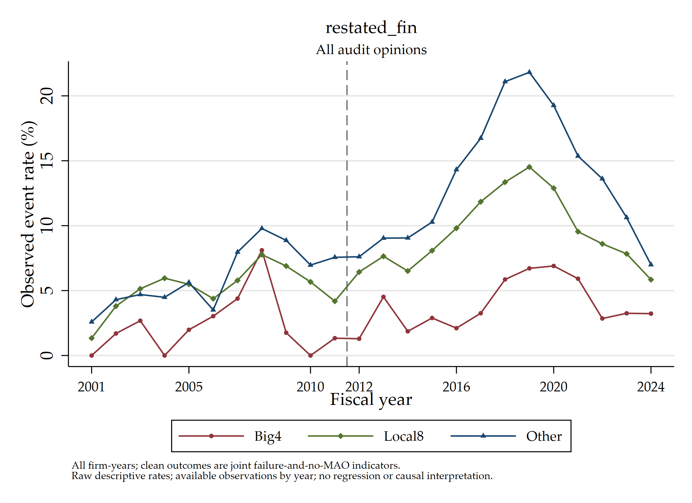
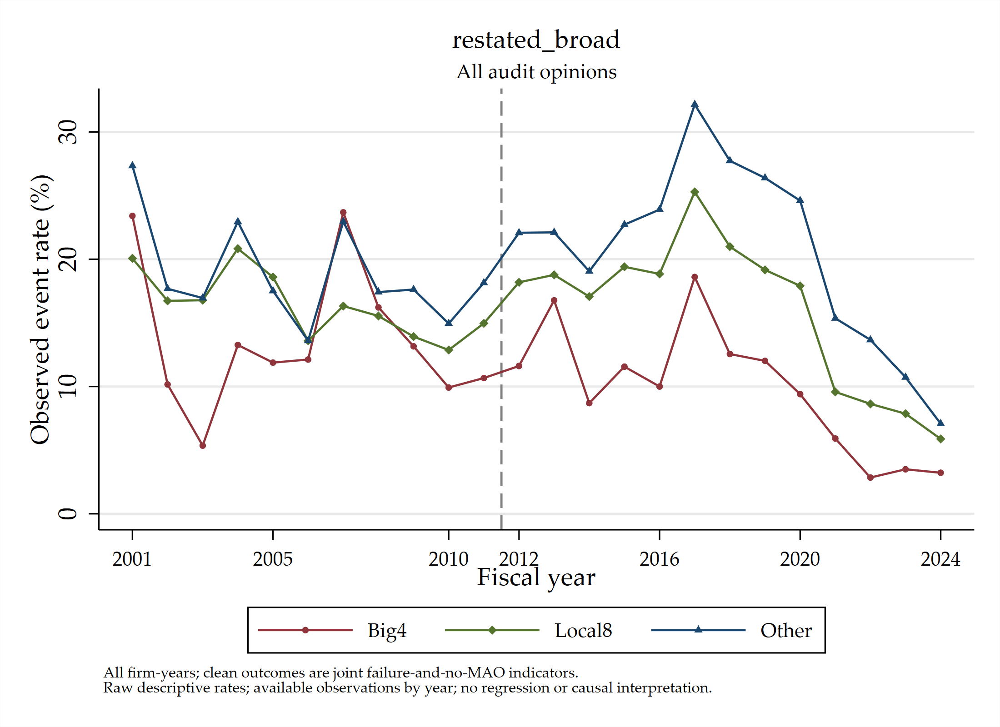
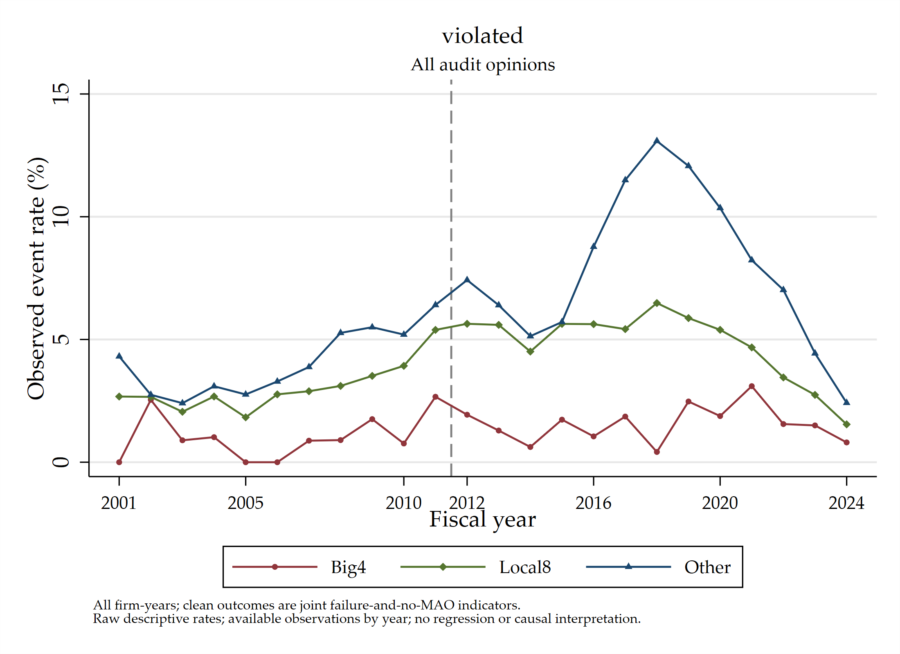
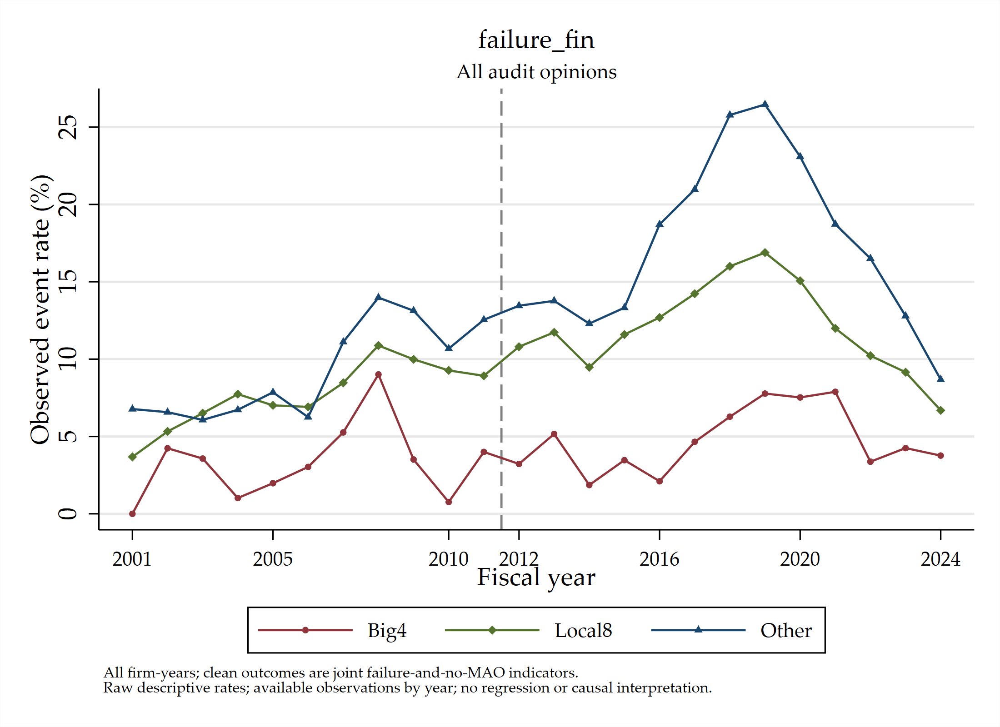
已有的公司特征调整后会计指标与收费趋势保留在长期趋势，与本节原始发生率分别解释。七年滚动市场响应另见市场时间变化，不能代替逐年会计质量比较。笔记中的“MW trend”尚未确定具体指标或方法，未据缩写另造结果。
待解决。 固定可比客户构成与问题追踪期限后，检查三组差距是否变化；再将客观质量、收费与市场响应对齐。现有分期描述不识别2012转制的政策效应。
两期比例与样本支持 · 逐年数据 · 前后变化。原01_audit_outcomes_descriptive.do已执行并核验；本次仅整合既有输出。
补充：原图、长期趋势与客户—事务所排序
中国审计市场的分层与长期趋势
将事务所分为四大（Big 4）、本土八大（Local 8）和其他事务所（Others）。按审计费用衡量的市场份额展现了市场结构的演化轨迹；而质量比较则以公司—年为基本观测单元。
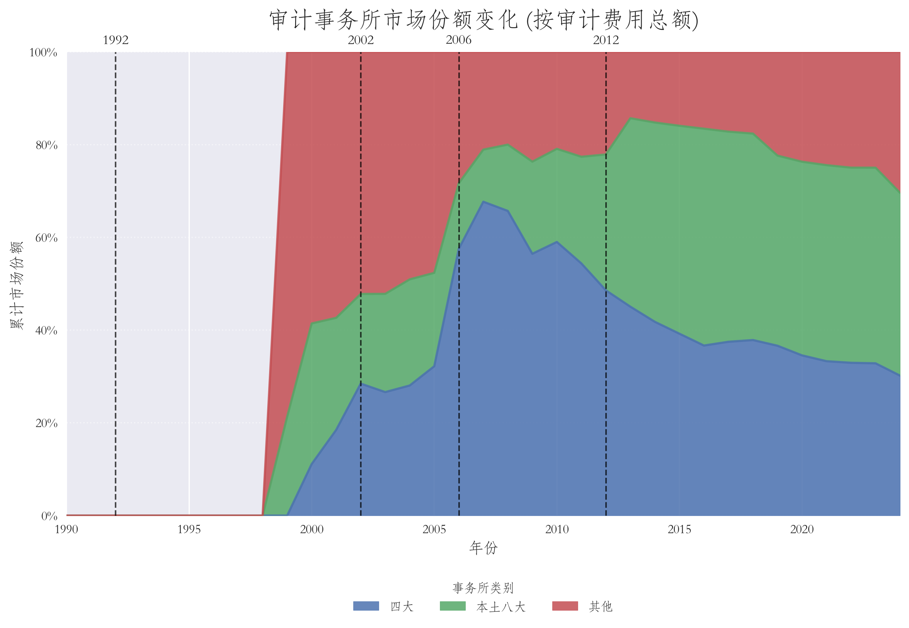
四大客户在资产规模、审计费用及风险结构上明显不同。由此，四大与其他事务所的结果差异可能同时来自客户选择、审计服务以及事件被监管发现的过程。
市场质量的宏观趋势
为考察全市场审计质量的长期演进，模型采用三基线检验：
\[ Y^m_{it} = \text{firm FE} + \sum_{\tau \ne 2000} \eta^m_{\tau, s} \mathbf{1}\{t=\tau\} + \mathbf{X}_{it}'\gamma_m + \varepsilon^m_{it}. \]
以 2000 年为基期，吸收公司固定效应并按公司聚类。三条基线分别对应：(1) 全部非平衡活跃公司；(2) 长期存续基线（2000—2024 年观测不少于 22 年）；(3) 本地五年连续基线（\([t-2, t+2]\) 窗口连续观测）。
审计失败趋势
综合失败率在各基线下均呈现 2008 年后上升、2016—2018 年达到阶段高点后逐步回落的非单调模式；长期存续样本的上升幅度更为明显。
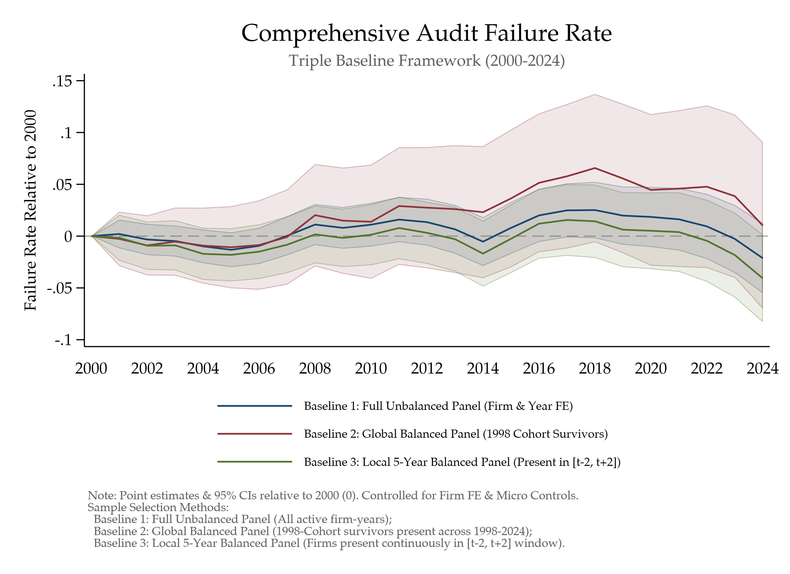
财务重述与财务违规趋势提供了失败率的结构性拆解：单个指标的变化既反映审计质量，也受到监管披露政策与执法力度的影响。
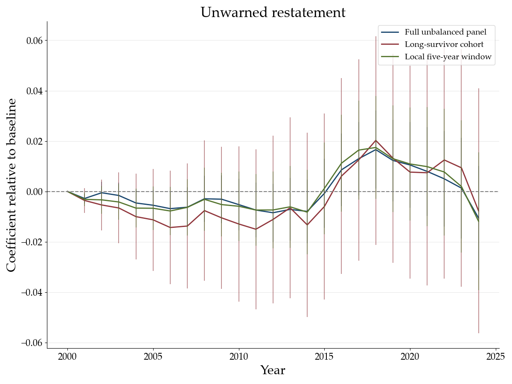
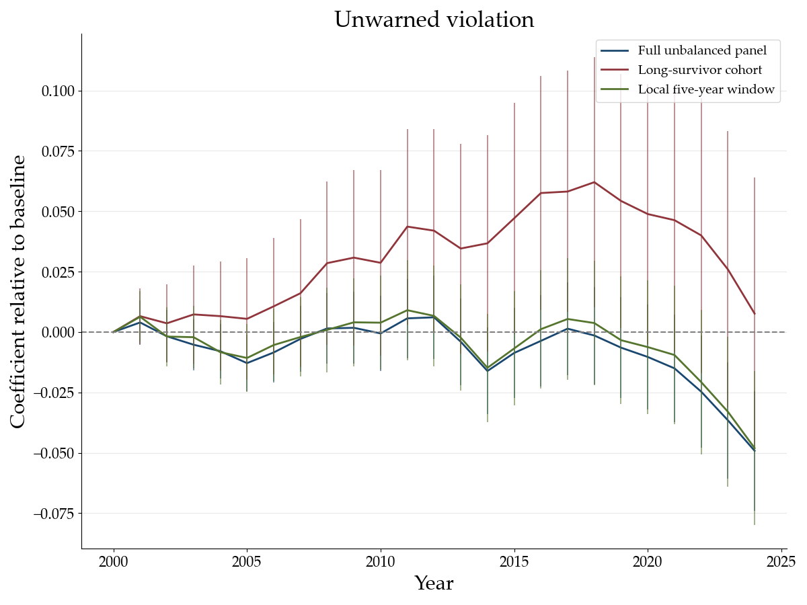
盈余管理与指标覆盖率
Jones 异常应计绝对值也展现出类似的宏观演变特征：
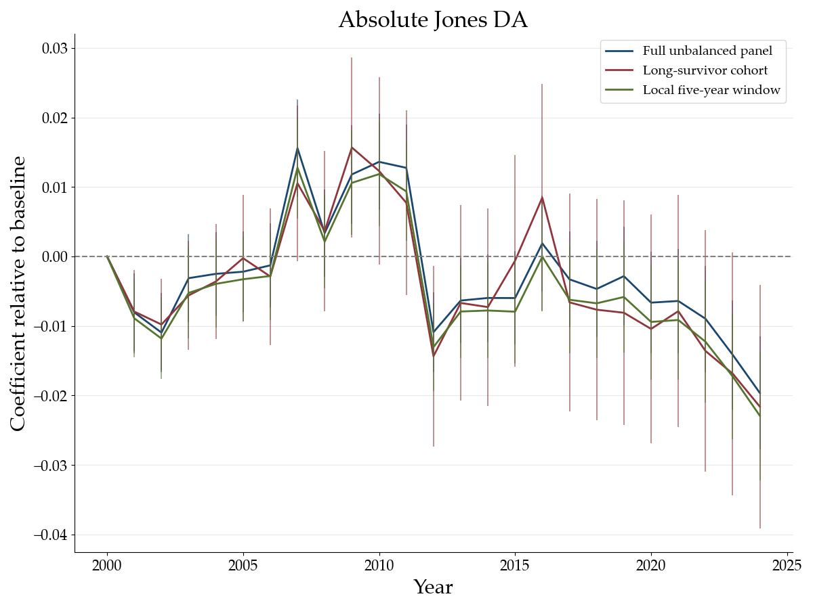
主要审计质量指标在 2000—2024 年间的覆盖率如下：违规、重述与审计意见指标保持全覆盖；审计费用在 2012 年后基本全覆盖；而应计盈余管理等财务指标覆盖率受披露完备性约束呈现一定波动。
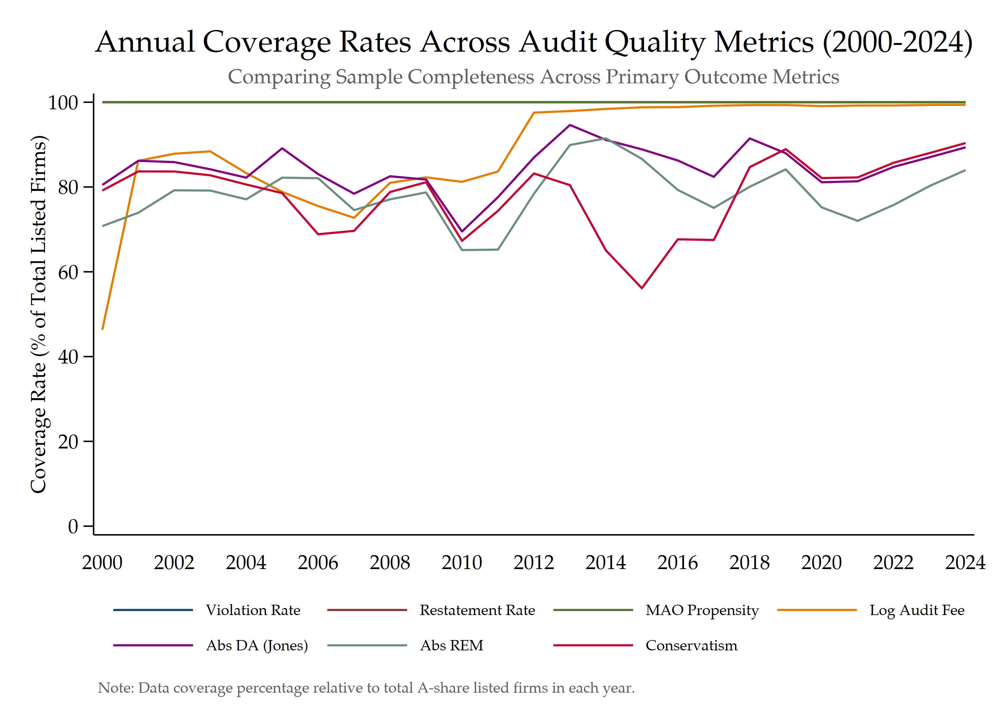
事务所类型横截面特征
下表汇报不同事务所层级的客户群特征比较。四大客户的非标意见率仅为 2.24%，显著低于本土八大（4.51%）与其他事务所（9.44%）；审计收费均值约为本土八大的 3.7 倍，客户市值均值约为 6.9 倍。
重述披露时滞与原分层图
下图展示披露时滞及原分层指标；Strict、Fin、Broad的精确发生率见本节概率表。
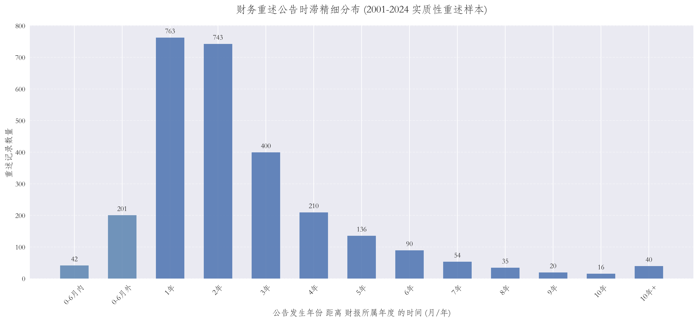

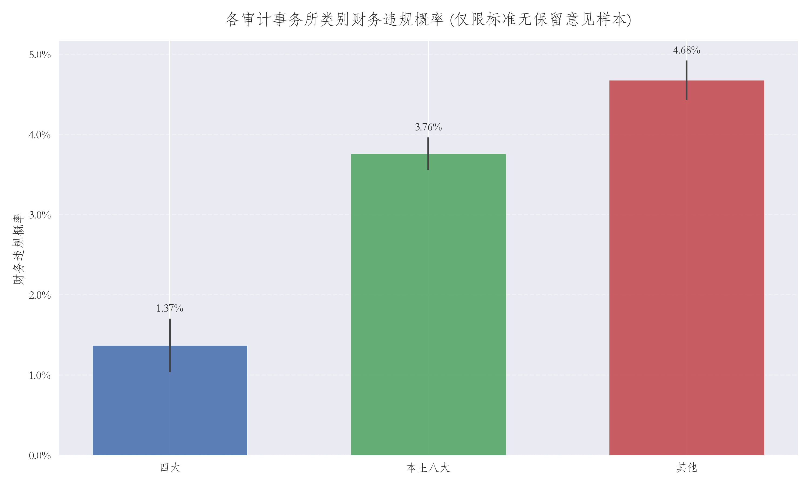
类别回归方程。 客户、年份与事务所类型的比较为
\[ Y_{it}=\text{firm FE}+\text{year FE}+\beta_4 Big4_{it}+\beta_8 Local8_{it}+\varepsilon_{it}. \]
Other为基准，\(\beta_4\)和\(\beta_8\)分别为四大与本土八大的调整后差异；标准误按公司聚类。
其他财报质量代理：差异并不一致
盈余质量方程。
\[ Y_{it}=FE+\beta Big4_{it}+\gamma'X^{EQ}_{it}+\varepsilon_{it}. \]
\(FE\)分别取行业×年份FE，或firm FE与year FE；\(X^{EQ}\)为规模、杠杆、亏损、CFO、收入增长、MB及应计和相应mis_dummy。\(\beta\)为四大−非四大的调整后指标差异。
盈余质量比较以Jones异常应计、Dechow–Dichev（DD）异常应计、非线性异常应计及真实盈余管理（REM）的绝对值为Y。异常应计是实际应计与模型预测正常应计之间的残差，REM指标衡量经营现金流、生产及费用相对正常水平的偏离；绝对值越大表示偏离越大。四项指标使用各自非缺失样本，行业×年份FE规格的N依次为56,900、50,300、52,664、52,507，公司及年份FE规格为57,507、50,781、53,164、53,042。控制七项盈余质量特征及mis_dummy，标准误按公司聚类。
1.2 价格事实：四大收费更高
收费的Y为\(\log(1+AuditFee)\)，保留非缺失且非负的境内审计费用；费用增加额为相邻财年审计费之差，Y取\(\log(1+FeeIncrease)\)，只保留增加额大于−1的有效记录。市值比较的Y为市场价值自然对数。费用控制规模、杠杆、亏损、ROA及mis_dummy，市值控制九项客户特征、收入增长及相应缺失标记。收费类别方程为
\[ \ln Fee_{it}=a+bBig4_{it}+X^{fee\prime}_{it}\gamma+FE+e_{it}, \quad X^{fee}_{it}=(size,lev,loss,roa,\text{mis\_dummy}). \tag{2}\]
表中分别报告行业×年份FE及公司、年份FE规格，标准误按公司聚类。log费用两套规格分别使用62,707及63,513个公司年度，log市值使用63,921及64,828个公司年度。原始四大平均收费约为本土八大的3.7倍，客户规模也更大；调整后的log费用系数衡量可比特征下的收费差异。
2. 市场反应：价格路径、盈利消息与分析师信息
市场结果依次展示短窗事件研究、长窗事件研究、ERC及分析师信息。各节分别说明Y、样本、基期、固定效应与聚类；短窗和长窗使用各自已确认的样本规则。
2.1 短窗事件研究：年报公告附近的市场反应
本轮报告采用无额外控制的事件研究。 以下短窗、分组、分期、门槛、滚动及长窗均恢复加入规模、MB和预测覆盖之前的规格；保留各模型既定Y、样本、固定效应和聚类。ERC沿用原来的有控制规格。全部72张事件研究图及补充表见完整结果。
2026-10-24原报EPS更新。 对已核实的3,353个公司年度应用首次年报公告时可见的合并净利润/既有年末股本EPS，其中1,751个EPS实际改变；其余公司年度保留原数据库值，并保留未核实状态。FAR分支保持原六位小数规则。不是将全部样本认证为原报，也未恢复股本及控制变量的历史版本。固定预测日期、目标财年、各窗口及每券商最新规则；按10%门槛的原始信号层面，180天消息跨组136个、60天92个。受EPS或惊喜控制影响的市场回归已重新运行，Y、固定效应、聚类和筛选规则沿用各自原规格；不使用EPS的声誉消息日CAR保持原结果。数据、执行与修复前后对照。
正向消息检验比较财报超预期时不同事务所客户的价格路径；连续消息模型进一步比较消息敏感度和固定消息大小下的收益差异。门槛、参照组和时期分别保留。
2.1.1 基准结果：10%门槛的组内响应与组间差异
消息、Y与事件样本。 \(S_{if}=(EPS_{actual}-EPS_{forecast,180})/|EPS_{forecast,180}|\)，预测取年报公告前180天券商预测中位数，实际EPS使用已核实原报修复后的口径，未核实记录保留数据库值。\(Good_{if}=1\{S_{if}>0.10\}\)，中性为\(-0.10\leq S_{if}\leq0.10\)，坏消息不进入比较。Y为原始日收盘价自然对数\(\ln P_{ifd}\)；窗口为[−5,+5]共11个市场交易日，以−1日为基期，保留完整价格窗口。全样本沿用20,408份公告；分期按财年，2012年前为2001—2011，2012年起为2012—2024。
两类模型均使用公司×财年、相对事件日、实际交易日期固定效应，公司×财年聚类，无额外控制。二组分类为四大／非四大，非四大包括本土八大与Other；三组分类为四大／本土八大／Other。组内图和interaction图区分展示。
组内分别估计：各组的好消息相对中性消息响应
回归方程。 \(i\)为公司、\(f\)为财年、\(d\)为实际交易日期，\(k(i,f,d)\)为相对公告交易日，\(D^k_{ifd}=1\{k(i,f,d)=k\}\)，\(\mathcal K=\{-5,-4,-3,-2,0,1,2,3,4,5\}\)。在每个审计组\(g\)的子样本\(\mathcal S_g\)内分别估计：
\[ \ln P_{ifd}=\alpha_{if}^{(g)}+\delta_{k(i,f,d)}^{(g)}+\lambda_d^{(g)} +\sum_{k\in\mathcal K}b_{gk}Good_{if}D^k_{ifd}+\varepsilon_{ifd}, \qquad(i,f,d)\in\mathcal S_g. \tag{3}\]
曲线为\(b_{gk}\)：该审计组好消息相对中性消息、再相对−1日的log价格响应。各组分别估计固定效应；组内曲线不是组间差异检验，也不是四大客户的整体价格增长。纵轴为log价格系数，0.01约为1个对数百分点；区间为逐点95%置信区间。
全样本：2001—2024财年。
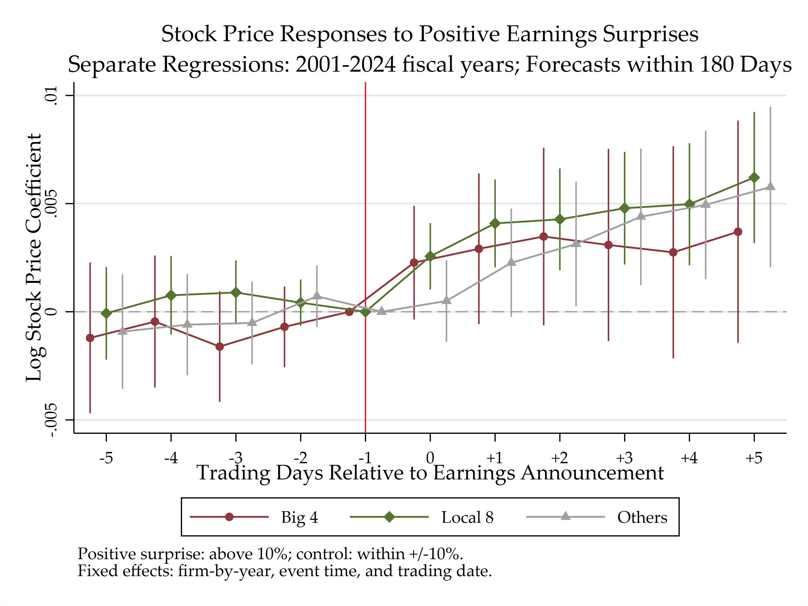
2012年前：2001—2011财年。
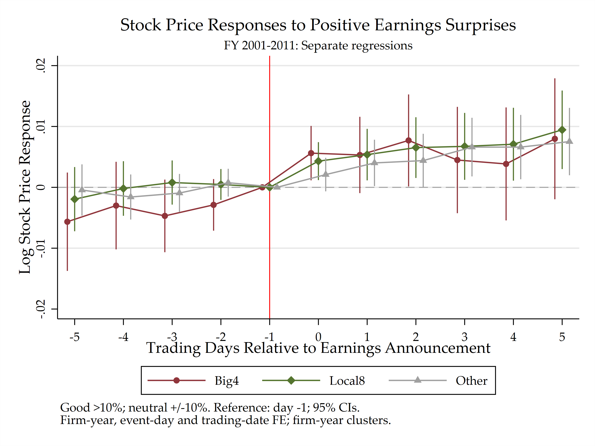
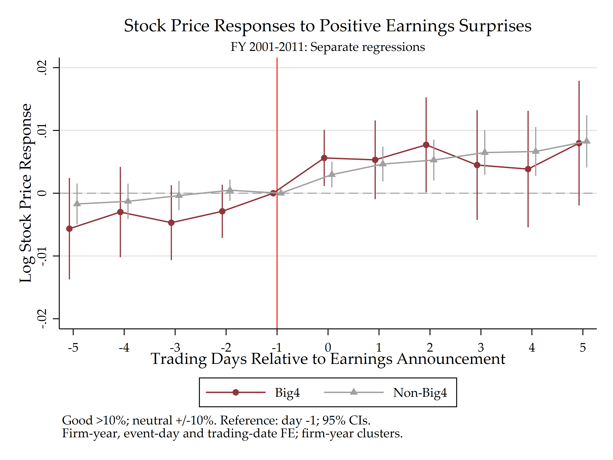
2012年起：2012—2024财年。
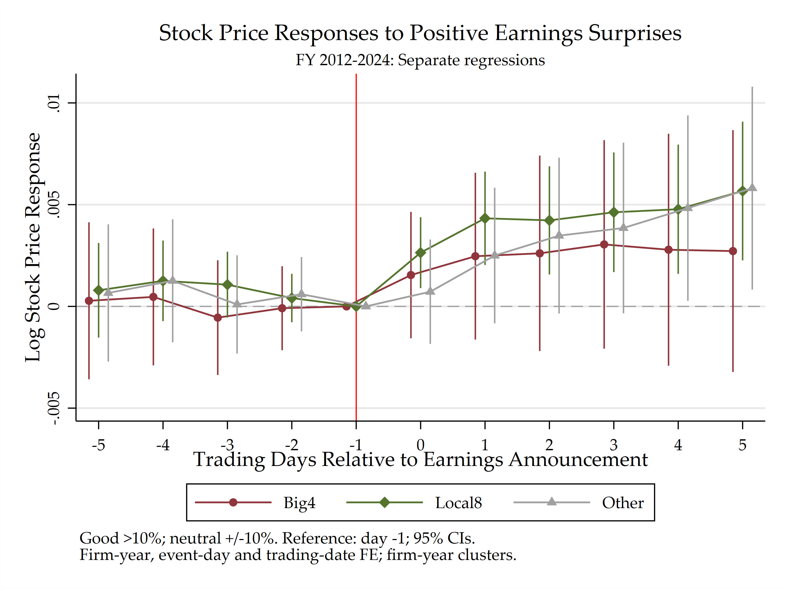
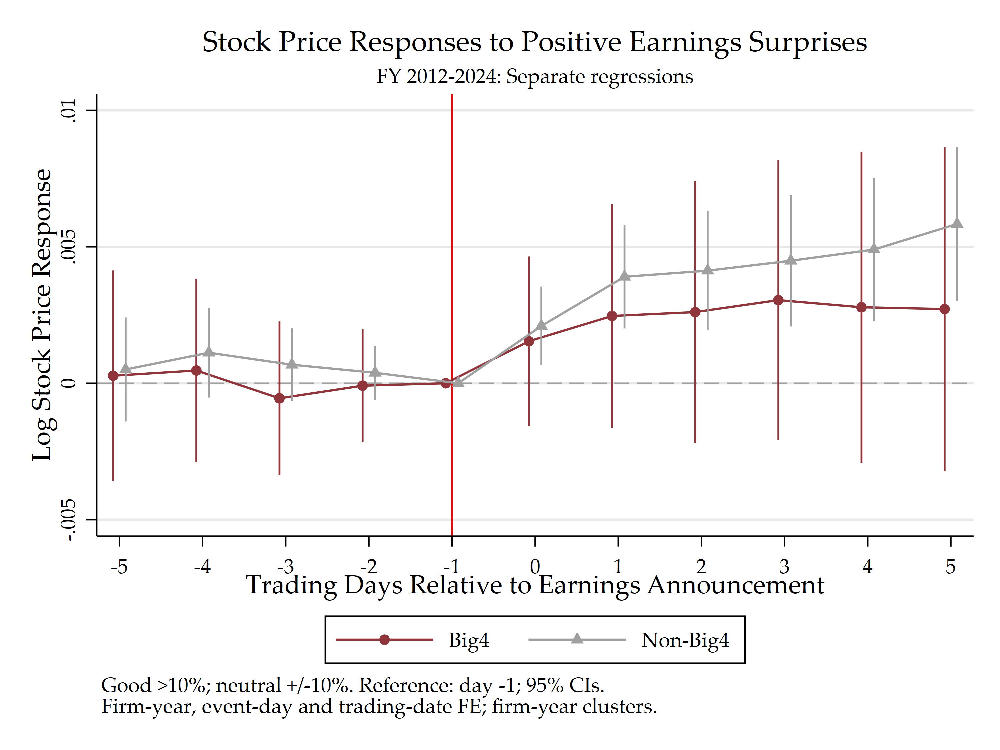
共同interaction：直接检验审计组之间的消息响应差
回归方程。 在每个时期的完整好消息与中性消息样本\(\mathcal S\)中，使用共同固定效应估计：
\[ \ln P_{ifd}=\alpha_{if}+\delta_{k(i,f,d)}+\lambda_d +\sum_{g\in\mathcal G}\sum_{k\in\mathcal K} \beta_{gk}^{\mathcal S}A^g_{if}Good_{if}D^k_{ifd}+\varepsilon_{ifd}, \qquad(i,f,d)\in\mathcal S. \tag{4}\]
\(A^g_{if}\)表示审计组。二组模型取\(\mathcal G=\{NonBig4,Big4\}\)，三组模型取\(\mathcal G=\{Other,Local8,Big4\}\)，各自拟合。图画同一模型内的系数差：
\[ \Delta_k^{4-N}=\widehat\beta_{Big4,k}-\widehat\beta_{NonBig4,k},\qquad \Delta_k^{4-O}=\widehat\beta_{Big4,k}-\widehat\beta_{Other,k},\qquad \Delta_k^{8-O}=\widehat\beta_{Local8,k}-\widehat\beta_{Other,k}. \]
标准误使用对应系数的完整协方差。这是原受限交互规格，没有独立的审计组×事件日项\(A^g_{if}D^k_{ifd}\)，中性消息组共享相对事件路径；各组固定效应单独拟合的组内曲线不能机械相减来复现这些差值。−1日交互系数归零，所有时期均使用同一方程。
全样本：2001—2024财年。
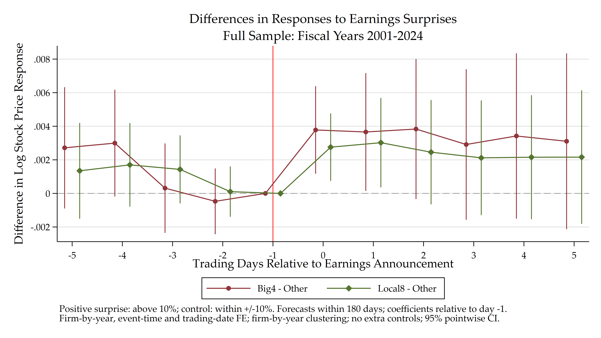
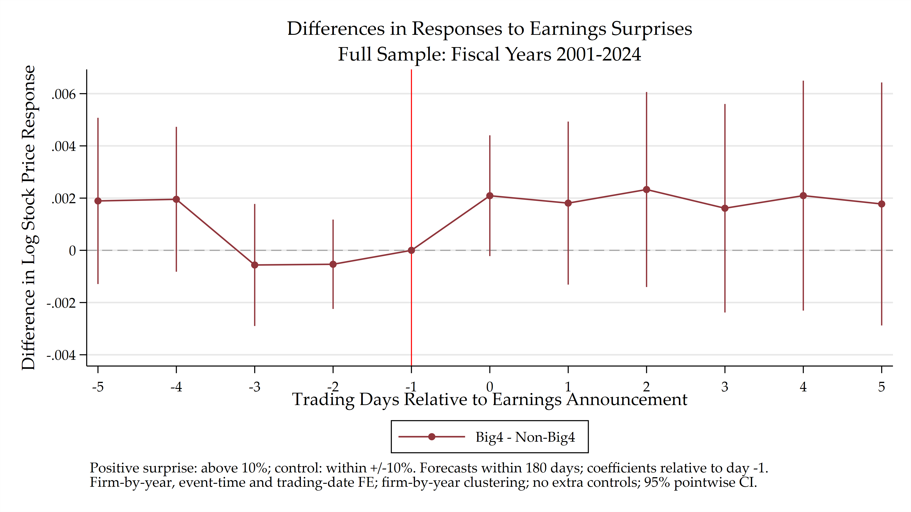
2012年前：2001—2011财年。
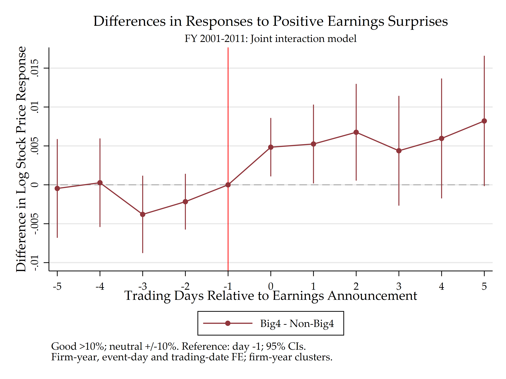
2012年起：2012—2024财年。
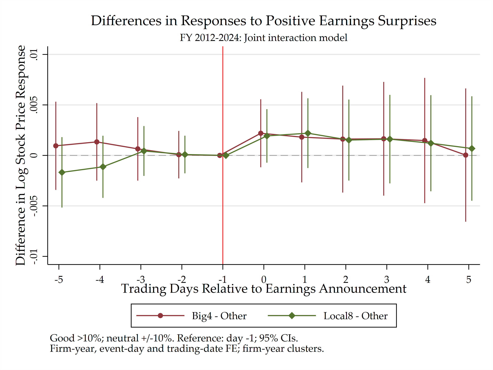
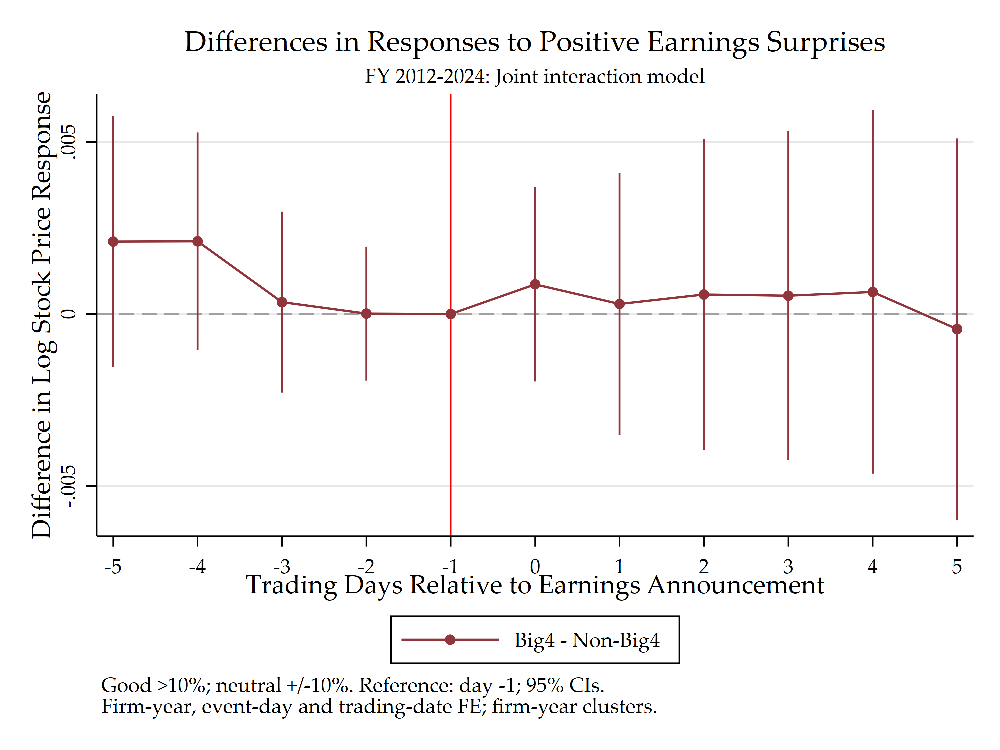
主要比较与事前检验。 2012年前四大−Other在公告日为0.005564（p=0.0067）、+5日为0.009905（p=0.0277）；四大−非四大的+5日系数为0.008210（p=0.0548）。全样本四大−非四大在公告日为0.002092（p=0.0763）、+5日为0.001776（p=0.4544）；2012年起对应为0.000863（p=0.5491）与−0.000438（p=0.8769）。各时期的同模型系数差分别解释，不以组内显著与否代替组间检验。
全样本与2012年前的四大−非四大事前联合检验p分别为0.0432和0.0393，检验−5至−2日相对−1日的系数差共同为零。部分规格存在事前差异，完整结果见事前检验及口径比较。
公告初期与长窗分别解释。 长窗进一步区分公告前已形成的差异、公告后新增变化和累计终点。短窗优势主要见于2012年前，公告前已有差异的模型按描述性路径解释；累计终点不直接等于信息吸收速度或审计质量变化。
2.1.2 共同分位数组：完整事件路径
沿用 式 4，只将\(T_{if}\)改为\(\mathbf{1}\{S_{if}>P75\}\)，并在\(\mathcal S\)中保留\(S_{if}\geq P25\)；固定效应、聚类与系数差定义保持一致。
共同分位点从修复后全时期30,064个完整候选年报事件一次计算：P25为-15.0805%，P75为5.9957%。正向组为top25%（\(S>P75\)），中性组为中间50%（\(P25\leq S\leq P75\)），最低25%排除。全样本与2012年前、二组与三组以及7年滚动均固定使用这组全时期分位点；不按组别或窗口重算。
全样本
2012年前
2.1.3 消息门槛扫描：全样本与2012年前
对每个\(c\)分别估计 式 4，令\(T_{if}(c)=\mathbf{1}\{S_{if}>c\}\)，样本限定为\(S_{if}\geq-c\)。因此扫描图画的是\(\Delta_k(c)\)；每个\(c\)都重新拟合，各门槛对应独立的分组回归。全样本与2012年前不另写方程。
横轴为固定surprise比率门槛 5%—25%。每个门槛\(c\)重新定义正向组\(S>c\)和中性组\(-c\leq S\leq c\)，分别展示第0、+1、+2和+5日相对−1日的组间反应差值。右轴为各组实际回归样本中“正向／（正向＋中性）”的比例。每个点对应该门槛下的有效样本及组间反应差。
全样本
2012年前
提高门槛会减少正向组，并将部分中等正向消息纳入中性组。因此扫描同时反映消息幅度、样本构成与估计精度的变化。
2012前后：声誉与优质审计稀缺的两条机制假说
这一时间模式对应两条机制：改制前四大的国际声誉可能提供更强的独立认证；非四大优质审计替代供给较少时，四大筛选所传递的未知客户质量信息可能更有价值。
市场结构背景。 蓝色、绿色、红色分别为四大、本土八大与Other按报告数量计算的年度份额。本土八大在2012年前后覆盖更多上市客户，提供了非四大大型事务所供给扩展的背景；份额本身衡量客户覆盖，审计质量另由失败与盈余指标衡量。
机制假说 | 可对应的已有结果 | 进一步区分机制所需的证据 · —|—|— · 改制前四大声誉认证较强 | 2012前后好消息路径、滚动反应差、三组审计师比较 | 分期市场反应没有独立分离声誉与客户构成 · 改制前非四大优质审计较稀缺，四大筛选信号更强 | 四大／八大／Other比较、费用与市场结构、质量差异 | 直接衡量各类事务所的服务质量、优质审计供给和市场未知信息
2012作为既定分期边界有制度背景：财政部本土化转制方案自2012年5月10日起施行；财政部进程说明记载四家在2012年7月至2013年3月相继转制。因此“2001—2011／2012—2024”按财年分组，四家的实际转制时点各异。本土大型所此前也经历转制与扩张，时期差异可能反映多项同期变化。
门槛路径与滚动结果支持早期差异较强的时间模式；连续ERC分期没有呈现同样统一的结果。2012分期描述前后市场反应差异，用于讨论机制；转制政策效应需要单独识别。
2.1.4 时间变化：10%门槛的7年滚动结果
仍使用 式 4，在中心财年\(m\)对应的\(\mathcal S_m=\{(i,f,t):m-3\leq f\leq m+3\}\)内单独估计，令\(T_{if}=\mathbf{1}\{S_{if}>0.10\}\)并保留\(S_{if}\geq-0.10\)。横轴各点为不同\(\mathcal S_m\)的\(\Delta_k(m)\)；各窗口分别估计。
沿用正向惊喜超过10%、中性惊喜在±10%内的分组。横轴为7年窗口的中心财年，每次向前移动一年，例如中心2008对应2005—2011财年。仅展示完整窗口：中心2004—2020；中心2003需要2000年数据，未纳入。各图分别显示第0、+1、+2、+3日相对−1日的差值；纵轴为对数股价的系数差。
各组自身的响应：差距收窄来自哪里？
保持原7年滚动共同回归的Y、样本、固定效应与公司×财年聚类不变，从已保存模型提取各组的\(\beta_{g,0}(m)\)：即以−1日为基期、好消息相对中性消息的公告日对数股价响应。各组系数相减对应下方原组间差图；不是各组另行回归，也不是好消息客户的绝对涨幅。
三组点估计中，四大从2001—2007窗口的0.00954降至2017—2023窗口的0.00271；八大分别为0.00330和0.00260，Other为0.00266和0.00067。差距收窄主要表现为四大响应下降，没有显示其他组响应持续上升。
二组图同样显示四大向相对稳定的非四大响应靠近。上述结论描述市场响应的点估计路径，不能直接解释为审计质量变差；相邻窗口重叠，跨窗口变化的显著性尚未检验。中心2012覆盖2009—2015，竖线仅作年份参考。
四大−非四大
四大−Other、八大−Other
各窗口正向与中性年报数量；3年和5年结果位置
3年和5年窗口见补充材料。相邻滚动窗口包含重复财年，图中时间变化反映一系列重叠样本的估计。
2.1.5 时间变化：共同分位数组的7年滚动结果
同样在\(\mathcal S_m\)内估计 式 4，但使用固定全时期分位点\(T_{if}=\mathbf{1}\{S_{if}>P75\}\)、\(S_{if}\geq P25\)。固定效应与聚类沿用前式。
改用上述全时期共同top25%对中间50%分组，固定P25与P75。横轴为7年窗口的中心财年，每次向前移动一年，例如中心2008对应2005—2011财年。仅展示完整窗口：中心2004—2020；中心2003需要2000年数据，未纳入。各图分别显示第0、+1、+2、+3日相对−1日的差值；纵轴为对数股价的系数差。
四大−非四大
四大−Other、八大−Other
各窗口正向与中性年报数量；3年和5年结果位置
3年和5年窗口见补充材料。相邻滚动窗口包含重复财年，图中时间变化反映一系列重叠样本的估计。
结果含义。 早期部分窗口四大−非四大的反应差较强，后期减弱；三组比较分别展示四大−Other及八大−Other，帮助观察非四大构成变化。部分窗口存在公告前差异，完整路径因此同时展示事前系数。
补充检验：连续消息、消息可比性与年度CAR曲线（2.1.6—2.1.8）
2.1.6 连续消息检验
连续消息模型。 以下三组模型以Other为参照，记\(\mathcal H=\{Local8,Big4\}\)，\(x_{if}=S_{if}/0.10\)，\(F_{ift}=\text{firm × year FE}+\text{event time FE}+\text{trading date FE}\)。线性与分段线性回归统一写为：
\[ Y_{ift}=F_{ift}+\sum_{k\in\mathcal K}D^k_{ift} \left[ \sum_{g\in\mathcal H}a_{gk}A^g_{if} +\sum_{j=1}^{J}\left(b_{jk}+\sum_{g\in\mathcal H}c_{gjk}A^g_{if}\right)B_j(x_{if}) \right]+u_{ift}. \tag{5}\]
线性模型取\(J=1\)、\(B_1(x)=x\)；分段线性模型取\(J=4\)，\(B_1(x)=x\)，\(B_2(x)=(x-q_{25})_+\)、\(B_3(x)=(x-q_{50})_+\)、\(B_4(x)=(x-q_{75})_+\)，其中\((z)_+=\max(z,0)\)，\(q\)为全样本\(x\)的共同分位点。分段线性只是扩展消息基函数，沿用同一方程。\(Y\)分别为log price或下述累计市场调整CAR的百分点值；本小节已有表图报告后者。均按公司×财年聚类。
\(c_{g1k}\)是消息增加10个百分点的斜率差；固定消息\(s\)的水平差为\(a_{gk}+\sum_j c_{gjk}B_j(s/0.10)\)，包含截距和斜率，不等于ERC。
连续消息与审计师身份的交互对应 Teoh 与 Wong（1993）的 ERC 比较形式；消息分母、窗口和控制不同，斜率与水平差分别解释。
样本与单位。 线性与样条共用30,064份年报事件、330,646条日度观测，公司×财年、事件日及实际交易日期FE，公司×财年聚类，无额外控制。Y为从−5日起累计的市场调整收益，以百分点计、相对−1日解释；消息变量为S除以0.10。
修复后，四大−Other每增加0.10惊喜的线性反应差为：+0日0.008277（SE=0.003714，p=0.0259）；+1日0.011245（SE=0.005489，p=0.0405）；+5日0.000454（SE=0.009929，p=0.9635）。单位为收益百分点；固定惊喜水平差与斜率差分别报告。
样条固定S=0.10时，四大−Other的水平差为：+0日0.336592（SE=0.109965，p=0.0022）；+1日0.366366（SE=0.149633，p=0.0144）；+5日0.544893（SE=0.221627，p=0.0140）。单位为收益百分点。
四大CAR完整交互模型的联合检验：linear：事前路径联合p=0.1657，全期斜率联合p=0.0285；spline：事前路径联合p=0.0822，全期斜率联合p=0.0012。这些是条件相关的路径和斜率检验。
2.1.7 其他规格与消息可比性
二组完整交互模型。 记\(Big4_{if}=\mathbf{1}\{Big4\}\)、\(T_{if}=\mathbf{1}\{S_{if}>0.10\}\)，保留\(S_{if}\geq-0.10\)：
\[ Y_{ift}=F_{ift}+\sum_{k\in\mathcal K}D^k_{ift} \left[\theta_kT_{if}+\eta_kBig4_{if}+\delta_kT_{if}Big4_{if}\right]+u_{ift}. \tag{6}\]
按公司×财年聚类，\(Y\)分别为log price或累计市场调整CAR的百分点值。\(\eta_k\)允许四大与非四大中性组有不同事件路径；\(\delta_k\)才是两组各自正向对中性反应差的差值。该差值基于放开中性路径后的模型，与 式 4 的受限系数差分别解释。
控制变量比较。 在 式 4 中加入控制变量与事件日的交互：
\[ \log P_{ift}=F_{ift} +\sum_{k\in\mathcal K}\sum_{g\in\mathcal G}\beta_{gk}A^g_{if}T_{if}D^k_{ift} +\sum_{k\in\mathcal K}D^k_{ift}\,\boldsymbol\gamma_k'\mathbf X_{if} +u_{ift}. \tag{7}\]
\(\mathbf X_{if}\)为对数市值、市净率及对数预测数量；有／无控制使用同一有效样本，按公司×财年聚类，无控制列令\(\boldsymbol\gamma_k=0\)。
可比性模块中，原预测时点列修复后的四大−Other公告日差为0.003837（SE=0.001331，p=0.0040）。完整二组模型允许中性组路径不同，公告日三重差分为0.000896（SE=0.001458，p=0.5390），CAR为0.092550（SE=0.146245，p=0.5268）个百分点；参照组与受限三组规格不同，分别解释。
仅在这项既有公开时点稳健性检验中要求DeclareDate严格早于公告，重新选择每机构最新合格预测，公告日差为0.003606（SE=0.001338，p=0.0071）；既定四变量共同支持筛选后为0.002905（SE=0.001653，p=0.0788），同样本加入控制后为0.001510（SE=0.001671，p=0.3663）。主信号仍按Rptdt，不因未核实DeclareDate异常自动删记录。
共同支持样本的三组差值与事前检验见更新后的完整结果；支持筛选不保证客户特征完全平衡，也不将组间消息响应差直接解释为审计服务效应。
2.1.8 年度CAR曲线
一行一事件的年度CAR模型。 对窗口\([-1,d]\)，\(d\in\{0,1,2,3\}\)，分别拟合：
\[ CAR_{if}^{[-1,d]}=\text{firm FE}+\text{year FE} +\sum_{g\in\mathcal H}\zeta_g^{(d)}A^g_{if} +\sum_{j=1}^{4}\left[\pi_j^{(d)}+\sum_{g\in\mathcal H}\omega_{gj}^{(d)}A^g_{if}\right]\widetilde B_j(S_{if}) +e_{if}^{(d)}. \tag{8}\]
\(\text{firm FE}\)、\(\text{year FE}\)为公司与财年固定效应，Other为参照，\(\widetilde B_j\)是基于原始surprise及共同P25/P50/P75节点的四个分段线性基函数。\(CAR_{if}^{[-1,d]}=\sum_{k=-1}^{d}(r_{ifk}-r_{mk})\)，使用已确认的市场调整收益、小数单位。四个收益窗口共用这一方程，分别估计系数，不重复列式。图中三条条件预测曲线将吸收的固定效应设为共同估计样本均值；标准误按公司×财年聚类，一行一公司财年时这一聚类不覆盖同一公司的跨年相关性。
年度四窗口CAR图使用29,397公司年度、4,181公司、24财年，吸收公司和财年FE，按公司×财年聚类，纵轴为小数收益而非百分点。它展示一行一事件的窗口收益，区别于前面的日度累计路径；图中为95%逐点置信区间。
2.2 长窗事件研究：公告前后的价格路径
本节把窗口延伸至公告前后各60个市场交易日，以−60日为基期，区分公告前已形成的差异与公告后的新增变化。先展示四组实际价格路径，再报告各审计组内部的消息响应及共同模型的组间响应差。
2.2.1 四组实际价格路径：差异何时形成？
Y为含现金红利再投资可比价格的对数变动，\(L_{ik}=100[\ln(P^{TR}_{ik})-\ln(P^{TR}_{i,-60})]\)。四条路径分别为四大好消息、四大中性、非四大好消息、非四大中性，按公告等权平均；没有固定效应或控制调整，置信区间按公司聚类。
沿用20,408份公告、4,340家公司队列，不要求121日完整。价格某日缺失只影响该日；404份公告缺少−60日价格，无法计算归一化描述路径，价格图最多覆盖20,004份公告，各日有效样本仍可能变化。下文回归直接使用log价格和公司×财年固定效应，不因某公告缺少−60日价格而删除整份公告。
分期按财年划分。图形显示，部分好消息与中性消息客户之间的价格差异在正式年报前已经形成。四组均值反映实际价格路径；固定效应调整后的消息响应另见后文。
全样本实际价格路径
2.2.2 年度好消息延续：上一年好消息，本年是否仍为好消息？
年度好消息分类存在延续。以下以上一年进入当前公告队列、且surprise>10%的公司年为起点，在同一公司下一财年surprise可判断的样本中，计算仍为好消息的比例。相邻财年必须恰好相差一年；下一年缺EPS、预测或超出样本末年不计作“非好消息”。分期及审计组均按起始年度划分，允许下一年换所，下一年也允许为坏消息。
起始年度所属时期 | 四大：好消息→下一年仍好消息 | 本土八大 | Other · —|—:|—:|—: · 全期 | 425/691（61.51%） | 1,097/2,242（48.93%） | 665/1,411（47.13%） · 2012年前 | 105/181（58.01%） | 268/513（52.24%） | 332/670（49.55%） · 2012年起 | 320/510（62.75%） | 829/1,729（47.95%） | 333/741（44.94%）
全期四大客户的好消息延续比例为61.51%，本土八大与Other分别为48.93%和47.13%。它为公告前差异提供了盈利信息延续的背景；年度分类延续与公告前收益差异之间的联系仍需直接检验。该比例是顺时间的条件概率，不等于“本年好消息中，上一年也是好消息的比例”。
现有预测缓存几乎全部以12月31日为目标期末，尚不足以系统构造季度盈利惊喜；原始利润表存在季度记录，但季度首次披露日期及季度口径尚未核实。完整年度转移及季度数据核查。
2.2.3 各审计组内部的好消息响应
回归沿用20,408份好消息与中性消息公告队列。\(Good=1\{S>0.10\}\)，中性为\(-0.10\leq S\leq0.10\)；不含坏消息。价格Y为供应商含分红可比价格的log，保留各日可观察价格。每个审计组分别估计：
\[ Y_{ik}=\alpha_{i,t}+\delta_k+\lambda_{date(i,k)} +\sum_{k\ne-60}\theta_{gk}Good_iD_k+\varepsilon_{ik}. \]
固定效应为公司×财年、相对事件日和实际交易日期，按公司×财年聚类，不加额外控制。曲线为各组“好消息−中性消息”相对−60日的响应，价格图纵轴为100倍系数。它衡量组内消息响应，不是该组客户整体价格增长。
2012年起，四大组内曲线在−1、+5、+60日分别约为1.605、1.964、0.963个对数百分点，相应p值为0.0262、0.0108、0.3506；部分差异在公告前已经出现。公告后的增减使用同一模型的完整协方差检验，见本节区间变化表。
完整组内图：二组分类、全样本与CAR对照
CAR采用含分红个股日收益减全市场收益，\(C_{i,-60}=0\)，\(C_{ik}=\sum_{j=-59}^{k}(r^{TR}_{ij}-r_{mj})\)。市场收益为前一交易日流通市值加权；按已确认规则，缺失个股收益记0，仍扣当天市场收益。该缺日规则是一项计算假设，保留全部公告，不要求121日完整。CAR图纵轴为百分点，方程、固定效应和聚类沿用本小节。
全样本：2001—2024财年；二组分别回归：四大与非四大各自的好消息−中性响应。 Y为含分红价格log。
全样本：2001—2024财年；三组分别回归：四大、本土八大与Other各自的好消息−中性响应。 Y为含分红价格log。
2012年前：2001—2011财年；二组分别回归：四大与非四大各自的好消息−中性响应。 Y为含分红价格log。
2012年起：2012—2024财年；二组分别回归：四大与非四大各自的好消息−中性响应。 Y为含分红价格log。
全样本：2001—2024财年；二组分别回归：四大与非四大各自的好消息−中性响应。 Y为累计市场调整收益CAR。
全样本：2001—2024财年；三组分别回归：四大、本土八大与Other各自的好消息−中性响应。 Y为累计市场调整收益CAR。
2012年前：2001—2011财年；二组分别回归：四大与非四大各自的好消息−中性响应。 Y为累计市场调整收益CAR。
2012年前：2001—2011财年；三组分别回归：四大、本土八大与Other各自的好消息−中性响应。 Y为累计市场调整收益CAR。
2012年起：2012—2024财年；二组分别回归：四大与非四大各自的好消息−中性响应。 Y为累计市场调整收益CAR。
2012年起：2012—2024财年；三组分别回归：四大、本土八大与Other各自的好消息−中性响应。 Y为累计市场调整收益CAR。
2.2.4 审计组之间的消息响应差异
使用同一队列、Y、固定效应与公司×财年聚类，沿用原受限共同回归：
\[ Y_{ik}=\alpha_{i,t}+\delta_k+\lambda_{date(i,k)} +\sum_g\sum_{k\ne-60}\beta_{gk}A_{ig}Good_iD_k+\varepsilon_{ik}. \]
二组图画\(\beta_{Big4,k}-\beta_{NonBig4,k}\)；三组图画四大−Other、本土八大−Other。该规格没有独立的\(A_{ig}D_k\)项，中性消息各审计组共享相对事件路径。组内分别回归允许每组单独估计固定效应，其曲线不能机械相减来复现共同模型。
共同模型的部分负向差异在公告前已经存在。2012年起，四大−非四大在−1、+5、+60日约为−2.123、−2.090、−3.400个对数百分点；这既不是四大好消息客户本身的涨跌幅，也不能把+60日相对−60日的负差全部归为公告后的影响。
完整共同模型图：三组分类、全样本与CAR对照
全样本：2001—2024财年；二组共同回归：四大−非四大的响应差。 Y为含分红价格log。
全样本：2001—2024财年；三组共同回归：四大−Other、本土八大−Other的响应差。 Y为含分红价格log。
2012年前：2001—2011财年；三组共同回归：四大−Other、本土八大−Other的响应差。 Y为含分红价格log。
2012年起：2012—2024财年；三组共同回归：四大−Other、本土八大−Other的响应差。 Y为含分红价格log。
全样本：2001—2024财年；二组共同回归：四大−非四大的响应差。 Y为累计市场调整收益CAR；缺日规则及样本见上节。
全样本：2001—2024财年；三组共同回归：四大−Other、本土八大−Other的响应差。 Y为累计市场调整收益CAR；缺日规则及样本见上节。
2012年前：2001—2011财年；二组共同回归：四大−非四大的响应差。 Y为累计市场调整收益CAR；缺日规则及样本见上节。
2012年前：2001—2011财年；三组共同回归：四大−Other、本土八大−Other的响应差。 Y为累计市场调整收益CAR；缺日规则及样本见上节。
2012年起：2012—2024财年；二组共同回归：四大−非四大的响应差。 Y为累计市场调整收益CAR；缺日规则及样本见上节。
2012年起：2012—2024财年；三组共同回归：四大−Other、本土八大−Other的响应差。 Y为累计市场调整收益CAR；缺日规则及样本见上节。
2.2.5 公告后新增变化与解释
区间变化使用同一模型的两端系数差及完整协方差计算标准误。下表Y为含分红价格log，变化量以100倍系数报告；“四大组内”为好消息−中性消息响应的变化，“四大−非四大”为共同受限模型组间响应差的变化。
时期 | 比较 | −1→+5：变化（p） | −1→+60：变化（p） | +5→+60：变化（p） · —|—|—:|—:|—: · 全期 | 四大组内 | 0.441（0.0827） | -0.485（0.4682） | -0.926（0.1370） · 全期 | 四大−非四大 | 0.270（0.2515） | -0.912（0.1448） | -1.182（0.0415） · 2012年前 | 四大组内 | 0.802（0.0935） | 0.383（0.7709） | -0.419（0.7397） · 2012年前 | 四大−非四大 | 0.770（0.0628） | 0.161（0.8944） | -0.609（0.5969） · 2012年起 | 四大组内 | 0.359（0.2288） | -0.642（0.4039） | -1.001（0.1583） · 2012年起 | 四大−非四大 | 0.033（0.9070） | -1.278（0.0807） | -1.311（0.0515）
综合来看，正式年报前已有消息响应差异，公告后的额外四大溢价没有呈现稳定支持。年度消息延续、此前披露及客户构成是需要区分的来源；当前结果尚未把公告前路径归因于业绩预告，也未识别四大质量下降或其他事务所追赶。ERC衡量连续盈利意外的公告期收益斜率，与本节消息分组路径分别解释。
价格与CAR的对照还涉及log变化与简单日收益累计的区别。在相同样本和缺日处理下，共同全市场累计收益可分解为实际日期函数与公告特定常数，分别被交易日期FE及公司×财年FE吸收，扣除该共同市场路径本身不改变斜率。原始上港2002财年收益异常仍保留，未在本轮修复或排除。
两种Y、三个时期、二组／三组分类共36套回归、24张图均保留在上文。阴影覆盖所有日期的逐点95%区间，非整条路径同时置信带。完整样本、关键系数及事前联合检验；区间变化CSV。
2.2.6 原−5至+60窗口与既有补充结果
以下保留原66日完整收益样本、−1日基期及公司聚类的累计收益结果，作为独立口径的补充。其样本、基期与聚类不同于上文−60至+60主路径；终点包含公告初期收益，不将累计终点差异直接解释为PEAD或信息消化速度。
原−5至+60结果及短窗事前检验
原窗口报告四大−非四大的累计市场调整收益路径，包含公告初期收益。下文保留对应样本、模型与数值，解释以本节区间变化检验及口径比较为准。
与公告初期反应的联系。 短期图与本节分别使用各自既定有效样本。终点CAR包含公告初期收益；后续收益更低可由多种机制产生，不能直接等同于信息更快被吸收。
收益、样本与固定效应
当前正式数据覆盖财年2001—2024。盈利惊喜定义为\(S_i=(EPS_i-\widehat{EPS}_{i,180})/|\widehat{EPS}_{i,180}|\)，预测为公告前180天券商预测中位数。正向组为\(S_i>0.10\)，中性组为\(-0.10\leq S_i\leq0.10\)。只保留−5至+60共66个交易日的市场调整收益全部有效的年报事件，以免跨缺失收益累计。
日市场调整收益为\(AR_{ij}=r_{ij}-r_{mj}\)，市场基准沿用前一交易日流通市值加权收益；个股收益使用既有含现金红利再投资的收益口径。图中因变量为
\[ C_{ik}=\sum_{j=-5}^{k}AR_{ij}-\sum_{j=-5}^{-1}AR_{ij},\qquad C_{i,-1}=0. \]
因此，\(k\geq0\)时，\(C_{ik}=\sum_{j=0}^{k}AR_{ij}\)。它按简单日收益相加，−1日归零后仍包含公告初期收益。0.01表示1个百分点。
令\(Big4_i=1\)表示四大，\(T_i=1\{S_i>0.10\}\)，\(D_{jk}=1\{j=k\}\)。两套模型均吸收公司×财年、事件日、实际交易日期固定效应，按公司聚类，无额外控制变量。图中的阴影为95%逐点置信区间，没有调整整个路径的多重检验。
A：好消息内部的四大−非四大路径差
只保留\(S_i>0.10\)，估计
\[ C_{ij}=\text{firm × year FE}+\text{event time FE}+\text{trading date FE} +\sum_{k\ne-1}\theta_k Big4_iD_{jk}+\varepsilon_{ij}. \]
图画\(\theta_k\)，即好消息样本中四大相对非四大的累计路径差。实际样本为3,826份年报，其中四大602份、非四大3,224份，涉及1,714家公司、252,270条日度观测。未控制正向组内部的惊喜幅度。
B：正向相对中性的组间反应差
保留正向及中性组，沿用原pooled交互项结构，估计
\[ C_{ij}=\text{firm × year FE}+\text{event time FE}+\text{trading date FE} +\sum_{k\ne-1}\left[\beta_{B,k}Big4_iT_iD_{jk} +\beta_{N,k}(1-Big4_i)T_iD_{jk}\right]+\varepsilon_{ij}. \]
图画\(\beta_{B,k}-\beta_{N,k}\)，对应“[四大：正向−中性]−[非四大：正向−中性]”。实际样本为14,976份年报、4,034家公司、988,260条日度观测。没有另加组别×事件日项，解释依赖中性组共享事件路径的限制。
短期与长期结果为何不同：当前比较与待闭合问题
原报EPS恢复后，公告期ERC仍较高，60日相对累计收益仍较低。 ERC三个窗口的Big4×UE分别为0.116073、0.160490、0.132594；长窗A、B的+60日差分别为−0.020135与−0.020332。这两类估计可以同时存在，尚未由同一套样本和模型证明“早期奖励随后反转”。
结果 | 具体比较 | 当前结论及解释边界 · — | — | — · 连续消息ERC | 同样UE幅度对应的公告期CAR斜率差 | 四大斜率较高；不是好消息组的整体价格路径 · 门槛事件路径 | 好消息相对中性消息的组间差 | 原共同模型未加入独立组别×事件日项，依赖中性组共享路径限制 · 三组分别估计 | 各组内部好消息相对中性的路径 | 固定效应分别估计；与共同模型的区别不只在四大样本量 · 长窗A | 好消息内部四大减非四大 | 正向组内部惊喜幅度未控制；累计收益包含公告初期 · 长窗B | 两组各自好消息减中性的路径之差 | 同样保留原受限交互结构；与ERC的样本及消息定义不同
事前检验。 下表使用原报EPS修复后的当前导出，检验−5至−2日相对−1日的系数共同为零。组内与共同模型检验的是不同对象。
2012年前共同模型的四大−Other事前p=0.0299，影响对公告后组间优势的解释；组内不拒绝不等于已证明没有事前变化。显著／不显著的差别也不等于两组系数差显著。18项检验及样本量。
收益定义已经核查，经济解释仍需闭合。 此前同样本比较发现，未调整收盘价与含红利总收益口径对长窗终点有重要影响，当前主路径采用含现金红利再投资的市场调整收益。不能把未调整价格的正差作为投资收益优势。后续若解释“反应更快”，需要在同一事件集合、收益口径和模型下分别比较公告初期、后续新增收益与累计终点。
2.3 ERC：连续盈利意外与公告期收益
ERC（盈利反应系数）衡量公告期市场调整收益对盈利意外的敏感度。较高的ERC表示，每单位盈利意外对应更大的市场价值调整。本节比较四大与非四大客户的ERC，并按照审计文献讨论盈利信息可信度的解释。
变量与样本。 \(UE=(EPS_{used}-EPS_{forecast})/P_{-1}\)，预测取公告前180天中位数，\(P_{-1}\)为公告前一交易日收盘价；实际EPS按上文已核实原报修复，未核实保留FAR优先及缺失补算；价格不以年末值补缺。Y为市场调整CAR的小数收益，分别使用[−1,+1]、[−2,+2]、[−3,+3]完整交易日窗口，不缩尾。
回归方程。 非四大为基准，主规格为：
\[ CAR_{it}=\text{firm FE}+\text{year FE}+\delta Big4_{it}+\beta UE_{it} +\theta(Big4_{it}\times UE_{it})+\gamma'X_{it}+\varepsilon_{it}. \tag{9}\]
\(X\)为市值、MB和预测覆盖的主项，标准误按公司聚类；另外报告无FE／无控制、仅firm FE和year FE两套规格，各用其有效样本。非四大的ERC为\(\beta\)，四大为\(\beta+\theta\)，表中“四大−非四大”就是斜率差\(\theta\)；非四大包括本土八大和其他事务所；三组模型则分别比较四大−Other、八大−Other。
主要结果。 四大客户具有显著更高的盈利反应系数。在控制公司和财年固定效应及可观察公司特征后，公告期收益对盈利意外的敏感度显著高于非四大客户。全样本CAR[−1,+1]的非四大ERC为0.038415，四大为0.154488，差值为0.116073（SE=0.044493，p=0.0091）；[−2,+2]和[−3,+3]窗口的ERC差值分别为0.160490（SE=0.056745，p=0.0047）和0.132594（SE=0.058719，p=0.0240）。三个窗口的差值均为正且达到5%显著水平。
经济量级。 三个交互系数是四大与非四大的ERC差值。例如，0.116073表示两组对盈利意外的反应斜率相差0.116073，不是四大客户多涨11.6%。由于UE按公告前股价缩放、CAR以小数收益计，UE增加0.01时的经济量级如下：
公告窗口 | ERC差值 | UE增加0.01，四大相对非四大的额外CAR反应 · —|—:|— · [−1,+1] | 0.116073 | 0.1161个百分点，约11.61个基点 · [−2,+2] | 0.160490 | 0.1605个百分点，约16.05个基点 · [−3,+3] | 0.132594 | 0.1326个百分点，约13.26个基点
例如，公告前股价为20元，实际EPS比预测高0.20元，则UE为0.01。最短窗口的估计意味着，对这项盈利意外，四大客户的公告期累计市场调整收益反应比非四大高约0.116个百分点。这里UE=0.01指盈利意外相当于股价的1%，并不等于盈利超出预测1%。
盈利信息可信度的解释。 Siew Hong Teoh、T. J. Wong（1993）在 The Accounting Review 发表的《Perceived Auditor Quality and the Earnings Response Coefficient》中，将投资者对盈利意外的反应与其感知到的盈利报告可信度联系起来，并发现大八事务所客户具有更高的ERC。按照这一文献传统，本节结果与投资者赋予四大客户盈利信息更高的感知可信度一致。
盈利消息通过改变未来现金流预期影响股价，其价值含义也取决于盈利持续性、增长机会、风险及折现率，见S. P. Kothari（2001），《Capital markets research in accounting》，pp.123–126。ERC差异也可能反映这些因素及客户选择，因此本节结果尚未单独识别可信度渠道。ERC直接衡量反应强度，反应速度由事件路径另行考察。
有效样本。 主规格仍要求EPS、预测、公告前价格、完整CAR窗口及三项控制有效；三个窗口实际e(sample)分别为30,008、29,805、29,657。无FE及无控制规格继续使用各自有效样本。公司数、单例损失及逐事件样本见更新后的样本覆盖与模型CSV。
全样本（2001—2024财年）
2.4 分析师：共同信息依赖与预测修正
共同信息权重的排序结果支持分析师更依赖四大客户的共同信息。 控制盈余意外幅度、对数市值、市场账面比及配对券商数后，\(\Delta\rho\)的行业×财年排序系数为0.021478（SE=0.009047，p=0.0177，N=9,977）。这与四大财报获得分析师更多信任的解释一致，构成市场认证的一项补充证据；这里识别的是控制客户特征后的关联。
指标、窗口与控制
对公司第\(t\)财年的年报公告，比较同一券商对同一个\(t+1\)财年EPS的预测。按预测的DeclareDate，取公告前180天内最后一份和公告后180天内第一份，边界日纳入、公告当天排除；最近日期有不同EPS时该侧不纳入，不向更远日期回退。两侧固定同一组配对券商，\(n\)是券商数。
令\(A\)为下一财年实际EPS、\(\bar f_q\)为平均预测、\(v_q\)为预测样本方差，\(q\in\{pre,post\}\)。\(D\)为缩放后的预测分歧，\(SE\)为缩放后的均值预测平方误差，\(c\)为扣除\(D/n\)后的共同误差部分：
\[ D_q=\frac{v_q}{|A|},\qquad SE_q=\frac{(\bar f_q-A)^2}{|A|},\qquad c_q=SE_q-\frac{D_q}{n}, \] \[ \rho_q=\frac{c_q}{c_q+D_q},\qquad h_q=\frac{c_q}{(c_q+D_q)^2},\qquad s_q=\frac{D_q}{(c_q+D_q)^2}. \tag{10}\]
三个变化均为公告后减公告前；\(\rho\)是共同信息相对权重，\(h\)和\(s\)是模型下共同、私人信息精度。有效样本要求\(n\ge2\)、\(A>0\)、六个前后指标有限，且两侧\(h\ge0\)。本节采用补全的下一财年基本EPS参照，不缩尾、不设0.10元门槛；全部原始研报的预测EPS口径尚未逐份统一。
\[ \Delta Info^m_{it}=a_m+b_m Big4_{it}+X'_{it}\gamma_m+e^m_{it}. \tag{11}\]
比较四大与非四大，不加固定效应，标准误按公司聚类。三项控制为abs_surprise_60、市场账面比MB和本窗口配对券商数\(n\)，第四项为对数市值；绝对盈利惊喜为当年实际EPS与公告前60天平均预测之差的绝对值，除以当年实际EPS绝对值。三控和四控使用同一完整控制样本。
好坏消息均保留。 本节没有按盈利消息符号或\(\pm0.1\)门槛筛选。按既有消息分类，四控样本含好消息1,942个、坏消息1,198个、中性6,836个及类别缺失1个。下一财年\(A>0\)与本年年报是否超预期是不同条件。
180天有效样本为13,707个公司年，其中四大1,894个；四控样本为9,977个，其中四大1,354个。相对补全EPS后的无限窗口17,645个有效事件，净减少22.3%；12,977个事件在两种窗口下均有效，4,668个原有效事件流失，另有730个事件在剔除远期券商预测后通过精度筛选。前后各180天仍可能包含半年报、季报等其他信息披露。
共同信息权重：主要结果
第(1)列使用全部13,707个有效事件；第(2)至(5)列均为9,977个完整控制事件，第(2)列不加控制，用来区分样本变化与加控制的影响。三控的原值系数为0.027799（p=0.0009），加上市值后为0.014206（p=0.1333）。第(5)列将Y与连续控制转换为行业×财年内分位秩，四大系数为0.021478，即相对秩位置高约2.15个百分点。
排序按\((\text{平均并列名次}-0.5)/\text{组内非缺失数}\)计算，基准为全部13,707个有效事件，再限制完整控制或市值子样本。排序系数与原值系数的量级分别解释。结果支持共同信息的相对依赖增强，信息精度另在补充表检验。
补充：共同事件、信息精度、市值子样本与其他规格
固定共同事件比较预测窗口
两种窗口在12,977个共同有效事件内重新排序，四控均为9,449个逐键相同的公司年；每种窗口使用各自的配对券商数和信息指标。
180天窗口的排序\(\Delta\rho\)系数为0.018482（SE=0.009257，p=0.0460），无限窗口为0.011425（p=0.2196）。原值均不显著。这说明180天排序结果并非完全由更换事件样本产生；两个窗口系数之差尚未作正式检验。共同事件中10,587个的券商集合发生变化，因此该比较同时反映预测窗口限制与券商构成调整。
共同和私人信息精度
由\(\rho=h/(h+s)\)，相对共同权重上升可以来自共同精度提高，也可以来自私人精度下降。保留两个精度指标有助于区分相对信息依赖和绝对精度。
四控原值\(\Delta h\)为64.740443（p=0.2067），\(\Delta s\)为10.071907（p=0.5120）；排序结果的p值分别为0.3083、0.5569。因此，目前更明确的证据集中于共同信息的相对权重。
全市场年度市值前25%
市值取财年最后可用交易日，先在全市场A股正总市值中排名，以\((\text{平均并列名次}-0.5)/\text{当年有效公司数}\ge0.75\)定义前25%，再匹配信息指标；不在分析师样本内部取前25%。该子样本为7,580个有效事件，四控样本为5,608个，行业×财年排序沿用完整有效样本基准。
控制比较与FE补充
固定完整控制样本的逐项控制结果区分市值与其他控制；分期及公司/财年FE结果另列。公司与财年FE四控下，原值\(\Delta\rho\)系数为-0.008295（p=0.7201，N=9,095），样本因删除单例而变化。
既有无限窗口补充：预测修正与准确度
本段保留既有无限窗口的预测修正与准确度结果，未随共同信息主表改为180天窗口。对同一下一财年EPS，取同券商公告前最近及公告后最早预测；同一最近日期预测值冲突的配对不纳入。
令\(f_{j,pre}\)、\(f_{j,post}\)为第\(j\)家配对券商预测，\(r_j=f_{j,post}-f_{j,pre}\)，\(A\)为目标财年实际EPS。四个Y为
\[ \begin{aligned} MeanRevision&=n^{-1}\sum_j r_j,\\ MeanAbsRevision&=n^{-1}\sum_j|r_j|,\\ FractionRevised&=n^{-1}\sum_j\mathbf1\{|r_j|>10^{-10}\},\\ \Delta AbsError&=|\bar f_{post}-A|-|\bar f_{pre}-A|. \end{aligned} \tag{12}\]
前三项分别是有符号修正、绝对修正幅度和修正比例；修正原值以EPS元／股计，比例为0—1。准确度度量平均预测的绝对误差变化，负值表示误差改善。这些Y不按股价或实际EPS再缩放。
回归仍为 式 11，替换四个Y：无FE、公司聚类、不缩尾。每个预测指标对应四列，依次为该指标可用样本无控制、四项控制共同样本无控制、共同样本三项控制、共同样本四项控制；同页并列两个指标。前两列分开，避免把样本变化算作控制效果。
样本限制。 三个修正Y沿用\(n\ge2\)且目标实际EPS非负或尚未观察到的原样本；准确度沿用BKLS有效样本，两者的有效样本分别报告。完整样本修正Y无控制N=22,427、控制共同N=13,719；准确度N=7,990／7,862。全市场市值前25%中，两组分别为10,101／6,787和4,439／4,367。修正样本1,935条缺市场排名，保留在全样本，不能进入前25%子样本。排序按每个指标完整有效样本在行业×财年计算，子样本不重排。
全样本四项控制下，有符号预测修正差为0.041259（SE=0.015841，p=0.0092），绝对修正幅度差为-0.064189（SE=0.025147，p=0.0107）。其余样本与排序规格见更新后的完整表；预测精度的t+1实际EPS与Y未改。
配对券商数与信息指标
180天有效事件13,707个，其中四大1,894个；\(n\ge5\)为6,614个，\(n\ge10\)为2,243个。公式包含显式人数项，主回归已控制配对券商数。
\[ \rho(n)=\frac{SE-D/n}{SE+D-D/n} =\frac{SE}{SE+D}-\frac{D^2}{n(SE+D)(SE+D-D/n)}. \]
固定预测均值、方差及有效事件的代数分解中，四大减非四大的原始\(\Delta\rho\)均值差为0.011483，显式人数项对应0.002724，其余0.008759，约23.7%由该显式项对应。这个比例是公式分解，不是人数的因果贡献；券商构成、两侧均预测的选择及EPS可比性仍影响信息权重的解释。当前样本的代数核查。
3. 换入四大后的变化与审计服务识别
主线是Fin重述与实际失败；其他质量指标、费用和准实验用于判断改善的范围与解释。
平均DID、动态DID与样本。 换入者与全观察期始终非四大客户比较，换出者与始终四大客户比较。批次c为换所财年，处理指示为\(G_{ic}\)，\(Post_{ct}=1\{t\ge c\}\)；Y为相应口径的重述、违规或未预警综合失败指示变量。平均方程为
\[ Y_{ict}=\text{firm × cohort FE}+\text{cohort × industry × year FE} +\beta G_{ic}Post_{ct}+X'_{it}\gamma+\varepsilon_{ict}. \tag{13}\]
批次堆叠的PSM-DID吸收批次×公司、批次×行业×年份FE，按原公司聚类；未堆叠的自然样本DID用公司和行业×年份FE，两类回归分别报告实际样本与系数。\(X\)保留九项及mis_dummy。动态版将平均处理项替换为
\[ \sum_{k\ne-1}\beta_k G_{ic}\mathbf1\{t-c=k\}, \]
以−1财年为基期，报告事前联合检验。原合格进入要求此前连续三年非四大、进入起连续三年四大；扩展窗口为−4至+4、短窗口−3至+2，窗口和未来留任要求不是相同概念。取消未来留任的版本单列，不混入基准资格。
匹配步骤。 在换入前一年，以九项客户特征、mis_dummy、行业和年份预测进入四大的概率。为每个进入者选择同年概率最接近的一个非四大对照；对照可重复使用，不另限制最大匹配距离。随后固定名单及权重，在前后窗口估计DID。加权与不加权列使用同一名单，未匹配列使用完整候选对照。
其他Y的同一设计。 应计／REM沿用结果特定七项控制；审计费Y为\(\log(1+AuditFee)\)，控制规模、杠杆、亏损、ROA及mis_dummy；市值Y为log市值，控制九项加收入增长及标记。各结果沿用相应的控制变量。费用换入+0.370、换出−0.242显示价格随身份变化；质量机制由失败与盈余指标检验。
3.1 同一客户变化：换入与换出四大
未堆叠DID方程。 \(G_i=1\)表示相应换入或换出处理公司，\(Post_{it}\)从其换所财年起取1；Y为重述、违规或未预警综合失败指示变量：
\[ Y_{it}=\text{firm FE}+\text{industry}\times\text{year FE}+\tau(G_i\times Post_{it})+\gamma'X_{it}+\varepsilon_{it}. \]
换入回归包含204家处理公司、4,993家始终非四大对照，64,707个公司年度；换出包含117家处理、189家始终四大对照，3,664个公司年度。
换入以始终非四大客户为对照，换出以始终四大客户为对照，保留既有稳定事件要求、九项controls、公司及行业×年份FE和公司聚类。当前自然样本换入严格综合失败−2.37个百分点（SE=1.09，p=0.030），严格重述−1.09（SE=0.77，p=0.158），违规−1.58（SE=0.85，p=0.062）。中间综合失败与重述分别−8.58和−8.08，宽口径分别−9.52和−8.96；换出未出现同样清楚的对称上升。
Fin与Broad重述的负向变化较明确，换出没有呈现对称上升；下节通过匹配及动态路径进一步检查换入结果。
3.2 匹配后的客户变化：基准 PSM-DID
平均与动态方程。 在进入批次c的匹配样本中，处理组为进入四大的公司，对照为同年事前倾向最接近的非四大公司；G表示处理身份，Post从进入财年取1：
\[ Y_{ict}=\text{firm}\times\text{cohort FE}+\text{cohort}\times\text{industry}\times\text{year FE}+\tau(G_{ic}\times Post_{ct})+\gamma'X_{it}+\varepsilon_{ict}. \]
动态版将平均处理项替换为
\[ \sum_{k\ne-1}\tau_k G_{ic}\mathbf1\{t-c=k\}. \]
Y为相应定义的未预警综合失败、重述或违规；X为九项客户特征及mis_dummy，按公司聚类。匹配在进入前一年完成，每个进入者选一个同年最近对照，对照可重复使用，不设最大倾向得分距离；加权回归保留被重复使用的对照份额。下文分别说明[−4,+4]与[−3,+2]窗口的最终样本和结果。
扩展窗口：−4 至 +4 的匹配 DID
Fin口径下，换入四大后综合失败概率下降12.59个百分点（SE=3.48个百分点，95%CI=[−19.45,−5.73]个百分点，p<0.001），重述概率下降10.04个百分点（SE=2.87个百分点，95%CI=[−15.70,−4.38]个百分点，p<0.001）。Fin重述从换入当年起下降，第0、+1、+4年在5%水平显著，第+2、+3年在10%水平显著；综合失败在第0、+1、+2、+4年达到5%显著性，第+3年达到10%。Fin综合失败与重述的联合事前检验p值分别为0.943和0.938，未发现显著事前趋势。
这些回归沿用换入前一年的九项变量、mis_dummy、行业和年份进行匹配，使用既定匹配名单与权重；结果方程保留九项 controls、批次×公司及批次×行业×年份固定效应，标准误按原公司聚类。加权回归有 1,763 条堆叠观测、125 家处理公司及 107 家对照公司。Strict、Fin 和 Raw 使用同一匹配样本，主要差别是结果变量定义。 Strict 要求明确的财务数据更正并影响盈余；Fin 不要求盈余调整，并保留部分多选或分类不明确的记录。Fin 的较强结果主要对应严格口径以外的更正事件，其中包含盈余影响未明确的记录。未预警指标均为事件发生且 MAO=0 的联合事件，在全部有效公司年度中估计。
以下第一张图上排是 Fin 综合失败和重述，下排是更宽的 Raw 口径；点估计与 95% 置信区间均以换所前一年为基准，纵轴为原始概率系数及置信区间。
严格口径的平均效应也显著，但逐期证据较弱。 严格综合失败概率下降6.44个百分点（p=0.0101），重述概率下降3.77个百分点（p=0.0207）；违规概率下降3.61个百分点，但不显著（p=0.1143）。严格重述仅第+4年在5%水平显著，严格综合失败仅第+4年在10%水平显著。第+4年处理组有90家公司，其中78.9%仍使用四大；较远期路径按原换入事件定义，不要求持续由四大审计。
补充：未匹配、匹配不加权，以及盈余质量的全部扩展窗口图
以下保留其余七张图，便于比较匹配、权重和指标口径。未匹配回归与匹配回归的样本不同；匹配不加权与匹配加权沿用同一名单。盈余质量八个指标的加权平均效应均未达到 5% 显著性；DD 异常应计绝对值在第 +1、+2、+4 年显著下降，属于逐期支持，未形成所有盈余指标的一致平均改善。
未匹配 DID：Fin 与 Raw 口径
未匹配 DID：Strict 口径
匹配 DID：不加权：Fin 与 Raw 口径
匹配 DID：不加权：Strict 口径
盈余质量：未匹配
盈余质量：匹配不加权
盈余质量：匹配加权
补充：短窗口估计及匹配支持
较短窗口：−3 至 +2 的平均效应与逐批次诊断
本小节使用[−3,+2]短窗口；上节动态主结果使用[−4,+4]扩展窗口。
事前匹配与前后比较可与 Jiang 等（2019）的设计对照；该文的事务所收购处理与本项目普通换入不同，本节没有采用其收购工具变量。
匹配在换入前一年进行，窗口为[−3,+2]，使用九项事前控制和mis_dummy、行业与年份，不加入失败历史。回归吸收stack×公司、stack×行业×年份FE，保留九项结果controls，按原公司聚类。最终匹配加权回归包含1,194个堆叠行、113家处理和102家对照；公司可在多个批次出现，不能把堆叠N当作唯一公司年度。
中间口径综合失败−11.85个百分点（SE=3.78，CI=[−19.30,−4.40]，p=0.002）、重述−9.11（SE=3.11，CI=[−15.24,−2.97]，p=0.004）。17次逐一剔除cohort时，两者系数均为负、95%区间均不含零。严格综合失败−5.28（SE=2.56，CI=[−10.32,−0.25]，p=0.040），但剔除2017后变为−1.44、CI=[−4.26,1.39]。严格重述、违规和宽口径的非显著区间在下表保留。
短窗口最终样本仍有可观察差异：ROA均值4.60%对3.28%，报告时滞93.64对97.57天，标准化均值差（SMD）分别为0.247、−0.211。标准化均值差以两组均值之差除以合并标准差，衡量匹配后的可比性；这些残留差异是该短窗口结果的具体限制。
3.3 排除替代解释的补充检验
排除意见指标构造的解释：实际失败与未预警失败的分解
Fin实际财务重述也显著下降，表明未预警重述的变化包含实际问题减少。 我们将每个失败指标分为实际失败 \(F\)、未预警失败 \(F(1-M)\) 和已预警失败 \(FM\)，其中 \(M=1\) 表示 MAO，并单独估计 MAO 的变化。四项回归使用同一最终样本，满足 \(F=F(1-M)+FM\)，因此能够直接区分失败事件减少与意见覆盖变化。
结果方程。
\[ Y_{ict}=\text{firm}\times\text{cohort FE}+\text{cohort}\times\text{industry}\times\text{year FE}+\tau(G_{ic}\times Post_{ct})+\gamma'X^{(-Y)}_{it}+\varepsilon_{ict}. \]
\(Y\in\{F,F(1-M),FM,M\}\)，分别为实际失败、未预警失败、已预警失败及MAO。 窗口为[−4,+4]财年，\(Post\)从进入年取1，标准误按公司聚类；失败分解、留任及风险匹配回归保留完整九项控制。
原加权PSM-DID中，Fin实际重述概率下降8.01个百分点（p=0.015），未预警重述概率下降10.04个百分点（p<0.001），已预警重述概率上升2.04个百分点（p=0.095）。Fin实际综合失败概率下降9.34个百分点（p=0.019）；其未预警部分下降12.59个百分点（p<0.001），已预警部分上升3.25个百分点（p=0.035）。MAO概率下降2.03个百分点（p=0.570），不显著。这组结果将改善证据从未预警失败扩展到实际失败，并显示实际失败减少与意见覆盖变化同时存在。Strict实际重述概率下降3.73个百分点（p=0.023）；Raw实际重述和违规的匹配平均变化未达到5%显著水平。
未匹配Fin实际重述概率下降6.35个百分点（p<0.001），与未预警重述下降6.24个百分点（p<0.001）相近；匹配不加权的实际重述概率下降8.62个百分点（p=0.008）。三种规格均支持Fin实际重述下降。以下表格保留七个失败结果及其分解。完整比较：未匹配、匹配不加权与失败／意见四格发生率
四格表为最终回归样本中的描述率，前期为 −4 至 −1，后期为 0 至 +4；加权规格使用匹配权重。描述率没有净化固定效应，因此与调整后的 DID 系数分别解读。
排除未来留任筛选的解释：保留后来退出四大的进入者
取消未来留任要求后，Fin 与 Raw 重述仍显著下降。 原事件资格要求换入后连续留在四大；这里仅要求进入当年使用四大、此前连续三年使用非四大，取首次符合条件的进入。后来退出四大的公司仍保留，未来年份缺失不视为退出。对照组仍为始终非四大公司，并要求换所前一年可观察。窗口保持 −4 至 +4，九项 controls、mis_dummy、批次×公司和批次×行业×年份固定效应及公司聚类均不变。
结果方程。
\[ Y_{ict}=\text{firm}\times\text{cohort FE}+\text{cohort}\times\text{industry}\times\text{year FE}+\tau(G_{ic}\times Post_{ct})+\gamma'X^{(-Y)}_{it}+\varepsilon_{ict}. \]
\(Y\)为Fin、Raw及Strict口径的未预警重述或综合失败，\(G_{ic}\)按不要求未来留任的进入事件定义。 窗口为[−4,+4]财年，\(Post\)从进入年取1，标准误按公司聚类；失败分解、留任及风险匹配回归保留完整九项控制。
新的资格包含279家进入公司，比原定义增加75家，另有4家进入批次提前。全批次最终回归包含414,556条堆叠观测、271家处理公司和4,993家对照公司。Fin未预警重述概率下降5.33个百分点（p<0.001），Raw下降6.87个百分点（p<0.001）；Fin和Raw综合失败概率分别下降6.32和7.64个百分点，均p<0.001。仅保留与原设计共有的进入批次时，Fin与Raw重述概率分别下降5.62和7.32个百分点，均p<0.001，结果并非新增批次单独驱动。Strict重述和违规未达到5%显著水平。
Fin 重述的事前联合检验在全批次和共有批次中的 p 值分别为 0.383 和 0.525，均未拒绝事前系数共同为零。可观察进入者中，+1、+2、+3、+4 年仍使用四大的比例分别为 92.7%、81.6%、73.0% 和 66.7%；因此后期结果包含了实际退出者。这个检验放松的是事件资格中的未来信息限制，采用未匹配 DID；下一节的风险路径匹配是独立检验。完整动态比较：原稳定进入、全部新进入批次与共有批次
按换入四大前的财务状况和公开风险历史匹配
这一检验基于换入四大之前已经能观察到的财务状况和风险历史匹配，回答：如果两家公司换所前的财务表现和公开风险历史相近，换入四大后重述概率是否仍下降？原来的PSM主要使用换入前一年的九项客户特征；这里保留这些特征，并加入此前三年的信息：
- 财务状况：ROA、杠杆和亏损的前三年均值，以及前一年相对前三年均值的变化。
- 公开风险历史：换入前已经公告的Strict、Fin、Raw重述和违规记录。
- 资料覆盖：这些历史指标实际覆盖多少年，以及缺失标记。
匹配只使用进入前可观察的信息。未来才披露、但追溯到以前财年的问题不用于匹配；这与第4.3节研究后来披露的历史问题是两项不同检验。行业和年份也进入选择模型。
保留全部候选事件，公告历史按可覆盖年份计算均值，加入覆盖年数及mis_dummy。重述与违规公告来源最早分别为 2001 年和 2000 年；原 204 个进入事件中，46 个的前三年重述历史不足三年，12 个没有覆盖。未覆盖年份记缺失而不记零；零覆盖均值沿用既定中位数插补并保留标记。匹配仍采用合并 Logit、同年 1:1 最近邻、有放回、不设卡尺，回归口径保持原基准。
结果方程。
\[ Y_{ict}=\text{firm}\times\text{cohort FE}+\text{cohort}\times\text{industry}\times\text{year FE}+\tau(G_{ic}\times Post_{ct})+\gamma'X^{(-Y)}_{it}+\varepsilon_{ict}. \]
\(Y\)为相应未预警失败指标；\(G_{ic}\)及匹配权重来自加入换所前财务状况和公开风险历史的匹配模型。 窗口为[−4,+4]财年，\(Post\)从进入年取1，标准误按公司聚类；失败分解、留任及风险匹配回归保留完整九项控制。
风险路径匹配后，Fin未预警重述概率下降5.30个百分点（SE=2.76个百分点，95%CI=[−10.73,0.14]个百分点，p=0.056），达到10%显著水平。处理后五个年份的点估计均为负；事前联合检验p=0.484。原匹配下降10.04个百分点，新增匹配后的降幅较小。两种匹配使用的对照公司与权重也有变化，因此这个比较同时反映新增匹配信息和比较样本的变化。Fin综合失败概率下降5.03个百分点（p=0.199）；Strict、Raw和违规均未达到5%显著水平。
新匹配的最终回归为 1,748 条观测、129 家处理公司和 98 家对照公司，原基准为 1,763 条、125 家及 107 家。匹配后最大绝对 SMD 为 0.263，最大倾向得分距离为 0.691；两套匹配交集的回归为 756 条观测、92 家处理公司和 8 家对照公司，完整结果在下方保留。完整匹配样本用于报告5.30个百分点的结果；756条共同样本用于直接比较两种匹配，在这张共同样本表中，两套重述结果均不显著。完整动态与共同样本比较：七个结果、两套匹配
检验同步经营改善的解释：财务状况作为结果变量
审计失败下降没有伴随四项财务指标的一致显著改善，为区分财报质量变化与同步经营改善提供了对照证据。 我们把原始 ROA、杠杆率、收入增长率和亏损概率分别作为结果变量，沿用原匹配名单与权重，不插补结果变量。每项回归从九项 controls 中移除其自身及对应mis_dummy，其他控制保留。分别报告各指标有效样本与四项指标共同有效样本，动态路径使用共同样本。
结果方程。
\[ Y_{ict}=\text{firm}\times\text{cohort FE}+\text{cohort}\times\text{industry}\times\text{year FE}+\tau(G_{ic}\times Post_{ct})+\gamma'X^{(-Y)}_{it}+\varepsilon_{ict}. \]
\(Y\in\{ROA,Leverage,RevenueGrowth,Loss\}\)；\(X^{(-Y)}\)从九项控制中移除Y自身及对应缺失标记。 窗口为[−4,+4]财年，\(Post\)从进入年取1，标准误按公司聚类；失败分解、留任及风险匹配回归保留完整九项控制。
共同样本的加权 PSM-DID 包含 1,678 条观测。ROA 为 −0.0061（SE=0.0116，p=0.597），杠杆率为 −0.0116（SE=0.0216，p=0.594），收入增长率为 −0.8357（SE=0.6100，p=0.172），亏损概率下降6.20个百分点（SE=4.32个百分点，p=0.152）。对应事前联合检验 p 值为 0.818、0.959、0.872 和 0.578。共同样本的未匹配及匹配不加权平均结果同样未达到 5% 显著水平；各指标有效样本中，未匹配杠杆率显著上升（+0.2509，p=0.026），其余结果未达到 5%。因此，这组结果没有呈现出足以直接解释重述下降的普遍经营改善模式。
财务指标使用原始比例单位，其中 ROA 和收入增长率存在小分母导致的极值。供应商原表中，000892 在 2008 年总资产约 5.11 万元，对应 ROA=23509.77；600706 的收入从 2011 年约 8469 元增至 2012 年约 11.40 亿元，对应增长率=134607.06。回归使用原值，不缩尾。财务回归区间覆盖一定幅度的变化，且控制了其他财务特征；结论是未观察到一致改善，仍允许区间内的经营变化。完整比较：各指标有效样本、未匹配与匹配不加权动态
补充检验的共同含义。 实际 Fin 重述也下降，取消未来留任要求后 Fin/Raw 下降仍然存在，加入已测量事前风险路径后 Fin 重述仍呈负向平均变化。这些检验从意见构造、留任资格和事前风险三个方面支持重述下降的结果。财务路径提供同步经营变化的对照。四个检验分别保持各自的比较对象；目前尚未将风险路径匹配与取消未来留任要求合并。
完整数值与诊断材料
- failure_opinion_decomposition: coefficient_identities · four_cell_rates · mean_estimates · mean_estimates_wide · previous_result_reproduction · sample_flow
- financial_condition_did: dynamic_estimates · mean_estimates · raw_financial_source_audit · sample_coverage
- risk_path_matching: baseline_matching · cohort_matching_counts · covariate_balance · matched_pairs · propensity_overlap · score_exclusions · unsupported_baselines
- risk_path_matching_did: dynamic_estimates · mean_estimates · sample_coverage
- entry_without_retention: entry_comparison · retention_coverage
- entry_without_retention_did: dynamic_sample_flow · psm_did_dynamics · psm_did_estimates
3.4 动态估计与其他财报质量指标
Sun–Abraham动态回归以换所前一年为基准，加入九项客户控制及mis_dummy，按公司聚类。换入样本为62,665条、5,191家公司，换出为2,530条、294家公司。换入第+5年严格综合失败与重述概率分别下降5.11个百分点（p=0.024）、3.90个百分点（p=0.027），第0至+4年均未达到5%显著水平；这套严格口径结果的改善主要出现在较远期。
其他动态规格、收费与质量指标
其他动态规格的结果并不一致：TWFE换入回归中，换所前两年的重述系数已显著为负，存在事前趋势；CS-DID综合失败平均估计为−1.46个百分点，95%区间为[−4.82,1.90]，违规为+0.23个百分点。它们与前述匹配设计使用不同样本和估计方式，分别解释。
审计费用与公司市值
费用及估值的换所方程。
\[ Y_{it}=\text{firm FE}+\text{industry}\times\text{year FE}+\tau DID_{it}+\gamma'X_{it}+\varepsilon_{it}. \]
换入组与始终非四大比较，换出组与始终四大比较；\(DID\)为处理组×换所后。Y分别为\(\log(1+AuditFee)\)、\(\log(1+FeeIncrease)\)及log市值，控制按费用或估值结果设置，标准误按公司聚类。换入三项N为62,596、48,583、63,602，换出为57,388、44,793、57,592。
审计收费随身份变化：换入四大后审计费用对数增加约 0.370（约高出 45%），换出后减少约 0.242。同时，换入后企业市值对数上升 0.104。
本节进一步考察盈余质量、监管门槛操纵与失败严重程度等替代口径。
应计与真实盈余管理
盈余质量的换所方程。
\[ EQ_{it}=\text{firm FE}+\text{industry}\times\text{year FE}+\tau DID_{it}+\gamma'X^{EQ}_{it}+\varepsilon_{it}. \]
\(EQ\)为Jones、DD、非线性异常应计及REM绝对值，使用七项盈余质量控制及mis_dummy，按公司聚类。换入四项N为56,646、49,928、52,309、52,175，换出为51,605、45,633、47,328、47,485。
换入四大后，Jones 异常应计与真实盈余管理未见系统性下降；Dechow-Dichev 异常应计绝对值反而略升 0.034（\(p=0.006\)）。
ROE 监管门槛检验
门槛样本及方程。 ROE为净资产收益率。只保留门槛左右各1个百分点的公司年度，以右侧指示\(R_{it}=1\)、左侧为0：0%门槛使用截至2020年的[−1%,1%)，6%门槛使用2002年起[5%,7%)，10%门槛使用截至2001年的[9%,11%)。合并门槛样本合并这些有效记录。门槛聚集与盈余指标分别估计：
\[ \begin{aligned} R_{it}&=FE+\beta Big4_{it}+\gamma'X^{Failure}_{it}+\varepsilon_{it},\\ EQ_{it}&=FE+\beta Big4_{it}+\delta R_{it}+\theta(Big4_{it}\times R_{it})+\gamma'X^{EQ}_{it}+u_{it}. \end{aligned} \]
第一式控制九项客户特征，第二式的Y为有符号或绝对DD应计及REM，控制七项盈余质量特征；均含mis_dummy。FE为行业和年份，10%门槛因历史样本支持只使用year FE；按公司聚类，N按各门槛有效记录列于表中。\(\beta\)检验四大客户是否更常位于门槛右侧，\(\theta\)检验门槛两侧的盈余指标差异是否随四大身份变化。
在 0%、6% 和 10% 等配股与监管门槛附近，四大客户的聚集与盈余管理交互项未见一致的抑制模式。
失败严重程度与文本挖掘
严重程度的方程与Y。 延续公司及行业×年份FE的类别或换所方程，加入九项客户特征及mis_dummy，按公司聚类：
\[ Severity_{it}=\text{firm FE}+\text{industry}\times\text{year FE}+\beta Big4_{it}+\gamma'X_{it}+\varepsilon_{it}, \]
换所列将\(Big4\)替换为处理组×换所后。Y包括严重重述、严重违规、被监管推动更正及舞弊文本的联合未预警指示；金额以万元计、涉及年度数保留全样本零值，并分别取\(\log(1+x)\)。各指标按有效样本分别估计，实际N见表。
严重违规的固定效应差异为 \(-1.78\) 个百分点；换入四大的系数为 \(-1.66\) 个百分点（10% 水平边缘显著）。严重程度的抑制证据主要局限于违规，在重述上未见显著改变。

子样本换所 DID
子样本设计。 在亏损、低Z-score或长期审计任期等限定样本内，分别估计
\[ Y_{it}=\text{firm FE}+\text{industry}\times\text{year FE}+\tau DID_{it}+\gamma'X_{it}+\varepsilon_{it}. \]
Y为未预警综合失败、重述或违规，九项客户控制及mis_dummy、公司聚类；各子样本的筛选及实际N列于表中。
在财务困境（当年亏损或 Z-score 偏低）与长期任期子样本中，换入四大的失败率系数部分为负，但伴随较宽的置信区间。
其他质量指标的描述比较
在真实盈余管理分项、盈余平滑度与激进度、会计稳健性及隐含资本成本（ICC）等指标上，四大客户均未显现出单调占优的质量梯度。
3.5 工具变量：供应链与分所扩张
本节使用供应链伙伴转入四大与分所扩张两类冲击，分别估计企业当年聘用四大与审计结果的关系。两类冲击分别进入模型；每个工具口径分别估计 TWFE-2SLS 和分批年度 DID-IV，并报告全时期与截至2012年的结果。控制变量与审计失败主模型一致。
两系列冲击、实际处理与审计结果
令 \(S_i^k\) 为企业 \(i\) 在工具口径 \(k\) 下首次受到冲击的年份，无冲击记为 \(\infty\)。供应链包含供应商、客户、客户或供应商并集三个口径：事件来自匹配伙伴从非四大实际转入任一家四大，关系剔除招投标来源；并集取两端最早事件年。分所包含本省、本省及邻省两个口径：事件为相关地域首次出现任一家四大分所。两系列均将四大作为整体，实际处理为 \(D_{it}=\mathbf{1}\{\text{企业当年由任一家四大审计}\}\)。
三个 \(Y^m_{it}\) 分别为综合失败、Fin口径财务重述、违规与 \(MAO_{it}=0\) 的联合指标，均为0/1变量。结果在四大与非四大企业中共同观测。\(X_{it}\) 包含规模、杠杆、亏损、ROA、Z-score、杠杆变化、报告滞后、经营现金流、企业年龄，以及九项缺失指示变量；补值沿用审计失败主程序。\(j(i,t)\) 表示企业当年的行业。
分所每个地域口径分别删除因迁址而导致冲击批次变化的企业全部年份，并分别报告保留客户与剔除事前最大客户两版。最大客户名单按相应开所事件前一年当地上市企业的境内审计费识别，并列最大全部列入；删除名单内企业的全部年份。实际删除沿用已保存的事件名单，缺少事前地址或审计费的案例保留原缺失记录。缺失地址先沿时间延续最近已知地址，再以最早可得地址补齐开头年份（企业内 ffill().bfill()），补齐位置作为地址代理。
方法一：企业与行业×年份固定效应的 TWFE-2SLS
以 \(Z_{it}^k=\mathbf{1}\{t\geq S_i^k\}\) 为工具。有冲击企业保留 \(-5\leq t-S_i^k\leq5\)，无冲击企业保留全部合格年份；因此在实际样本中，\(Z_{it}^k\) 等于冲击后0—5年的指示变量。供应链另沿用原 QMD 的共同资格样本。对各 \(k\) 分别估计第一阶段、约化式与第二阶段：
\[ \begin{aligned} D_{it} &=\alpha_i^D+\lambda_{j(i,t),t}^D+\pi_k Z_{it}^k+X_{it}'\gamma_k+u_{it},\\ Y^m_{it} &=\alpha_i^{R,m}+\lambda_{j(i,t),t}^{R,m}+\rho_k^m Z_{it}^k+X_{it}'\delta_k^m+v^m_{it},\\ Y^m_{it} &=\alpha_i^{Y,m}+\lambda_{j(i,t),t}^{Y,m}+\beta_k^m D_{it}+X_{it}'\theta_k^m+\varepsilon^m_{it}, \quad D_{it}\text{ 以 }Z_{it}^k\text{ 为工具}. \end{aligned} \tag{14}\]
\(\alpha_i\) 为企业固定效应，\(\lambda_{j(i,t),t}\) 为行业×年份固定效应。第一阶段 \(\pi_k\)、约化式 \(\rho_k^m\) 和第二阶段 \(\beta_k^m\) 在每套规格内共用相同观测与控制列空间，恰好识别时 \(\widehat\beta_k^m=\widehat\rho_k^m/\widehat\pi_k\)。标准误按企业聚类；表中报告 KP F。
方法二：按冲击批次与期限构造的年度 DID-IV
对每个冲击批次 \(g\) 和期限 \(h=0,\ldots,5\)，比较 \(g-1\) 与 \(g+h\)。处理组为 \(S_i^k=g\)；对照组为 \(S_i^k>g+h\) 的尚未受冲击企业和从未受冲击企业。企业须在这两个年份均有可用记录；已在基期前受冲击、或只在事后进入数据的企业不能进入该单元。程序不要求所有企业均有完整六个事后年份。截至2012年的版本要求两个比较年份均不晚于2012年。
定义 \(T_i^g=\mathbf{1}\{S_i^k=g\}\)，\(\Delta_{g,h}V_i=V_{i,g+h}-V_{i,g-1}\)。各单元内的第一阶段与第二阶段为：
\[ \begin{aligned} \Delta_{g,h}D_i &=a^D_{g,h}+\pi_{g,h}^k T_i^g +(\Delta_{g,h}X_i)'\gamma^D_{g,h} +(F_i^{g,h})'\eta^D_{g,h}+u_i^{g,h},\\ \Delta_{g,h}Y_i^m &=a^{Y,m}_{g,h}+\beta_{g,h}^{k,m}\Delta_{g,h}D_i +(\Delta_{g,h}X_i)'\gamma^{Y,m}_{g,h} +(F_i^{g,h})'\eta^{Y,m}_{g,h}+\varepsilon_i^{g,h,m}, \end{aligned} \tag{15}\]
第二式以 \(T_i^g\) 工具化 \(\Delta_{g,h}D_i\)。\(F_i^{g,h}\) 包含期末行业指示变量及负的基期行业指示变量，对应行业×年份固定效应的两期差分；企业固定效应通过差分消去，共同时间变化由单元截距吸收。行业改变的企业保留两端行业信息。各单元的控制系数、行业系数分别估计。将第二式中的 \(\Delta_{g,h}D_i\) 换成 \(T_i^g\)，得到约化式系数 \(\rho_{g,h}^{k,m}\)；单元内 Wald 比率为 \(\widehat\rho_{g,h}^{k,m}/\widehat\pi_{g,h}^k\)。
表中报告冲击后0—5年的汇总。令 \(n_g^0\) 为该批次在 \(g-1\) 年有记录的企业数，\(\mathcal C_k\) 为通过样本及可识别性检查的批次—期限单元，并定义 \(a_{g,h}^k=n_g^0/\sum_{(r,s)\in\mathcal C_k}n_r^0\)。程序先汇总第一阶段和约化式，再取比值：
\[ \widehat\pi_k^{0:5}=\sum_{(g,h)\in\mathcal C_k}a_{g,h}^k\widehat\pi_{g,h}^k, \qquad \widehat\rho_k^{m,0:5}=\sum_{(g,h)\in\mathcal C_k}a_{g,h}^k\widehat\rho_{g,h}^{k,m}, \qquad \widehat\beta_k^{m,0:5}=\frac{\widehat\rho_k^{m,0:5}}{\widehat\pi_k^{0:5}}. \]
标准误联合使用第一阶段与约化式的影响函数，保留同一企业在不同单元中重复出现带来的协方差；供应链按企业聚类，分所按省聚类。表中第一阶段 Wald F 是聚类 \(t\) 统计量的平方，与 TWFE 表的 KP F 区分。配对数是各单元中企业两期配对的累计次数，不是独立企业年数。
将该比率解释为当年四大服务的局部因果作用，需要工具相关性、无预期、相应第一阶段与结果的平行趋势、排除限制和单调性；该动态框架还要求历史聘用在当年聘用状态之外没有额外残留影响。本轮估计对象是当年聘用状态，覆盖续聘和退出年份。
统一结果表：第一阶段在左，三个二阶段在右
下列四表覆盖供应商、客户、并集及两种地域口径、两段时期；分所同时展示保留和剔除最大客户。第一阶段在同一规格的三个结果间完全一致，因此集中展示一次。表中系数与括号内标准误均为原始0/1单位，星号依据常规聚类推断；DID-IV 的弱工具置信集合另存于完整结果工作簿。


结果解释
全期供应商工具的一阶段在TWFE与分批DID-IV中分别约为1.29和1.48个百分点，弱工具统计量分别为KP F=4.52和Wald F=5.76；客户及并集工具的一阶段更弱，二阶段估计不精确。
分所工具的结果随地域和估计方式变化。本省及邻省口径的全期分批DID-IV在剔除最大客户后，一阶段约为2.7个百分点，Wald F=34.66，但综合失败和Fin重述的二阶段为正；TWFE没有同样精确的结果。两种估计方式的样本、比较对象、权重和聚类不同，不能把同号或显著结果当作相互验证。下面保留城市采用与省域约化式诊断，说明这些差异涉及的识别问题。
分所冲击的采用与约化式诊断
城市版早期一阶段保留，省域约化式存在识别疑点。 这两套定义分别回答服务可获得性的不同范围，不能把城市版的一阶段与省域版的审计结果拼成同一个IV。
注册城市首次开所：已完成四套采用检验
冲击为企业注册城市首次出现任一家四大分所，Y为聘用任一家四大。事前最大客户按开所前一年该城市上市企业境内审计费识别，并列最大全部剔除。下表为冲击后0—5年平均变化。两种估计器事前联合检验的对象不同，p值分列。
截至2012年，剔除最大客户后采用上升仍在；全部客户版CS-DID事前p=0.097，不能概括全部版本均无事前差异。全时期删除23家、早期删除10家；北京缺少有效事前年，上海与广州缺少有效事前境内审计费，未完成三地最大客户识别。城市版尚未估计审计结果约化式或第二阶段。
本省与本省及邻省：已有约化式和DID-IV
下表为剔除事前最大客户、冲击后0—5年的审计结果约化式，单位为百分点，括号为p值。三个Y均为失败且未出具MAO的联合事件；与本节前面城市采用概率不是同一个Y。
本省全时期三个结果均为负且不显著；邻省口径的综合失败和Fin重述为正。已有批次核查显示，邻省正向结果约84%来自2000、2005批次；2005批次基期失败率低，对照地区后期收窄。删除冲击后新上市企业并未改变估计，因为它们原本缺少基期记录，没有进入有效配对。现有比较主要代表有事前记录的存量上市企业，京沪覆盖有限。
识别问题分两层。 开所可能选择了风险正变化的地区，影响反事实可比性；即使开所冲击可比，它也可能通过审计竞争、人员或问题发现影响未采用四大的企业，影响排除限制。正向约化式本身不证明哪条假设失败，第一阶段显著也不解决这两层问题。
本次讨论与下一步。 优先判断城市定义能否形成可比的审计结果路径，再决定是否继续第二阶段；不把邻省正号写成“四大审计使质量下降”。
城市四套结果Excel · 城市平均变化与检验 · 省域约化式Excel · 省域逐期与汇总数据。本次只读取已有Stata输出，未重新估计。
3.6 补充识别：安永—大华转入四大
比较对象。 处理名单固定为2001财年大华客户，对照为同年其他非四大客户，观察1997—2007财年；主表剔除2002转入年，实际样本9,769个公司年度、1,102家公司。三个Y均按Fin口径构造未预警综合失败、重述及违规。
固定2001财年大华的46家客户，以2002财年实际转入四大为处理时点，估计收购暴露DID及以该暴露预测四大身份的IV，不按事后留任筛选35家承接客户。剔除转入年后，四大采用概率的第一阶段估计为上升38.13个百分点（SE=5.85个百分点，KP F=42.56），但未预警综合失败概率的DID估计为下降1.70个百分点（SE=2.02个百分点，p=0.401），2SLS估计为下降4.45个百分点（SE=5.35个百分点，p=0.406），重述与违规也不显著；综合失败的事前联合检验p=0.022，因果解释仍受事前趋势差异限制。市场反应检验中，分析师盈利消息的最终样本仅有2条处理组事前事件，交互项IV较弱（KP F约1.37—1.49），尚未形成稳健的市场认证因果证据。收购专用匹配版因倾向得分未收敛暂停，不影响已完成的公司换所PSM-DID。
审计结果：回归方程与单位
令 \(G_i=1\) 表示公司是2001财年固定名单中的大华客户，\(Post_t=\mathbf{1}(t\geq2002)\)，工具变量为 \(Z_{it}=G_i\times Post_t\)。\(Big4_{it}=\mathbf{1}(\text{当年由四大审计})\) 是实际四大身份，\(Y_{it}\) 分别为三个未预警失败指标，均取0或1。\(C_{it}\) 包含既定九项控制及mis_dummy；\(\text{firm FE}\) 为公司固定效应，\(\text{industry × year FE}\) 为行业×年份固定效应。
第一阶段：用收购暴露预测四大采用。 因变量是四大身份dummy，采用线性概率模型：
\[ Big4_{it}=\pi Z_{it}+C_{it}'\gamma+\text{firm FE}+\text{industry × year FE}+v_{it}. \]
DID／reduce form：收购暴露对审计结果的影响。
\[ Y_{it}=\delta Z_{it}+C_{it}'\theta+\text{firm FE}+\text{industry × year FE}+u_{it}. \]
二阶段：用第一阶段预测的四大身份估计结果变化。
\[ Y_{it}=\beta\widehat{Big4}_{it}+C_{it}'\eta+\text{firm FE}+\text{industry × year FE}+\varepsilon_{it}. \]
因变量是0/1的四大身份，系数衡量控制客户特征及固定效应后，事前大华客户的四大采用概率在转入前后的变化相对于对照组的差异。与单年度35／46承接比例不同，回归比较多个前后财年、调整对照变化，并剔除了2002转入年。三个失败结果的有效样本相同，所以第一阶段重复相同数值。在本项恰好识别、同样本IV中，\(\widehat\beta=\widehat\delta/\widehat\pi\)；综合失败为 \(-0.01695/0.38129\approx-0.04445\)，即表中的二阶段系数。标准误按公司聚类，由2SLS程序计算。
结果含义。 事前46家大华客户中35家下一财年记录为安永大华；采用事前名单避免按实际承接结果筛选处理组。第一阶段较强，但失败结果不显著且综合失败存在事前趋势，因而这次收购未提供清楚的质量改善证据。中国可用背景集中于安永—大华单一事件，难以区分事件特有变化与普遍四大作用。收购匹配版的倾向得分模型未收敛，未纳入结果。
3.7 同一签字人员—客户转入四大：平台变化的补充检验
样本与对照。 每个转入批次固定前一年非四大签字人员—客户关系，处理组为人员及其客户共同转入四大的关系；对照来自该批次没有转入四大的签字人员所服务的既有客户关系。对照关系实际转入四大后不再作为未处理对照。Y为Fin未预警失败、实际重述或违规、Jones与DD绝对应计，实际观测数分别列于表中。
保持同一签字人员—客户关系，考察其从非四大转四大的变化，尝试减少人员和客户同时变化造成的解释。人员ID识别签字人员，合伙人职位尚待核实；关系留存仍可能内生。固定前一年关系，在±2／±5财年窗口内分别估计全部批次和排除2002批次。
\[ Y_{pct}=\text{relationship × cohort FE}+\text{cohort × industry × year FE} +\beta G_{pc}Post_{ct}+X'_{it}\gamma+e_{pct}. \tag{16}\]
\(p\)为人员—客户关系；吸收关系×批次、批次×行业×年份FE，九项控制，公司聚类、不缩尾。匹配版在转入前一年用九项、行业和批次预测项，按同批次最近邻固定权重，随后使用同一方程。
全部批次的失败结果最终支持约21家处理客户，匹配约13家；排除2002后支持进一步减少。全部批次主要结果不显著；排除2002的DD异常应计有负向支持，该结果对应较小样本。匹配版部分Y被FE完全吸收，相应规格为不可估计。完整七项Y和四种窗口／批次规格如下。
4. 客户筛选：四大如何形成高质量的客户组合？
客户筛选分为两步：先比较客户事前特征，再考察审计意见与进入、退出的关系。年度匹配首先估计当年四大身份的选择概率：
\[ P(Big4_{it}=1\mid W_{it})=\Lambda(a+W'_{it}\pi+\text{industry FE}+\text{year FE}), \tag{17}\]
\(W\)为五项／九项特征及mis_dummy，行业和年份进入Logit，不是精确匹配约束。年度PSM比较当年身份，换所PSM-DID比较进入批次，回答不同问题。匹配后质量差异仍可能包含服务和未测量选择，服务与未测量选择的份额仍待分解。
意见—风险回归方程为
\[ Risk_{it\text{或}t+1}=\text{firm FE}+\text{industry × year FE} +bBig4_{it}+dM_{it}+hBig4_{it}M_{it}+X'_{it}\gamma+e_{it}. \tag{18}\]
\(M\)分别取MAO或GC；预警客户内四大差异是\(b+h\)，意见关系的组间差异是\(h\)，两者不是同一检验。进入／退出方程在各自风险集中以次年进入或退出指示为Y，用\(M\)及原控制解释；当前四大组的退出为次年非四大，四大之间换所不是退出。缺次年身份不能记退出。
既有证据 | 实际限制 | 解释 · —|—|— · 进入前特征 | 原204个合格进入者、批次对照；有事后留任资格 | 部分客户差异在进入前存在，不是所有指标都显示更好 · 年度PSM | 70,677候选公司年、4,782四大观测；单边支持及两条极值排除仅适用于该隔离诊断 | 公共特征调整后仍有差异，剩余选择依赖匹配假设 · MAO／GC风险与分类 | 当前问题按所属财年、次年违规按公告年，预警分母不同 | 结合风险与预警的不同分母评价警示准确性 · 原意见后客户流动 | 严格相邻年度、九项控制、公司及行业×年份FE | 支持组合调整；辞任与客户改聘尚未区分
客户筛选可能同时涉及公开可见的经营与风险特征，以及事务所在接受、续聘客户时获得的额外信息。本节首先展示进入前的可观察差异和控制变量，再考察意见与进入、退出的关系。前者衡量可观察选择，后者提供客户组合随风险调整的证据。
4.1 可观察选择：客户是否原本就更好？
当前控制变量与匹配变量
审计失败基准使用九项控制；年度 PSM 另保留五项选择模型作为比较。换所 PSM 用进入前一年的九项特征预测四大选择，结果方程使用当年九项控制。盈余质量采用七项结果特定控制，匹配名单仍来自九项失败风险模型。
变量 | 代码名称 | 当前构造／含义 | 审计失败九项 | 年度 PSM 五项 | 盈余质量七项 · —|—|—|:—:|:—:|:—: · 公司规模 | size | 总资产自然对数 | ✓ | ✓ | ✓ · 杠杆率 | lev | 数据源资产负债率 | ✓ | ✓ | ✓ · 亏损 | loss | 净利润小于零的指示变量 | ✓ | ✓ | ✓ · 资产收益率 | roa | 数据源资产收益率 A | ✓ | ✓ | — · 破产风险 | zscore | 数据源 Z 值 | ✓ | ✓ | — · 杠杆变动 | chg_lev | 当年与上一年杠杆率之差 | ✓ | — | — · 报告时滞 | report_lag | 年报公布日减财年截止日，天数 | ✓ | — | — · 经营现金流 | cfo | 经营活动现金流净额／总资产 | ✓ | — | ✓ · 上市年限 | age | ln（财年−首次上市年份＋1） | ✓ | — | — · 收入增长 | growth | 主营业务收入较上年增长率 | — | — | ✓ · 市净率 | mtb | 股价／每股净资产 | — | — | ✓ · 应计 | accruals | （净利润−经营活动现金流净额）／总资产；构建代码中现金流缺失以零代入该分子 | — | — | ✓
九项及七项控制配有各自的mis_dummy。数值按年份中位数插补，年份内无法插补时以全样本中位数补充；mis_dummy保留原始缺失信息。行业和年份在选择模型中作为类别变量进入。
其他模块 | 当前使用的控制口径 · —|— · 意见回归基准 | 九项失败控制，另加融资 financing、滞后 GC l1_gc 及其mis_dummy；统一机制表各 Panel 按实际设定单列 · 审计收费 | size、lev、loss、roa 及mis_dummy · 公司估值 | 九项失败控制，另加 growth 及mis_dummy · 财务状况作为结果 | 九项失败控制，删除结果变量本身及其mis_dummy；收入增长不在原九项中 · 事前风险路径匹配 | 九项事前特征，加前三年 ROA／杠杆／亏损路径、公告历史、覆盖年数及mis_dummy · 年度 ERC、PEAD | 完整规格加入 ln_market_cap、mb_current、ln_forecast_n 三项主项；不与盈利意外交互；递进规格分别为无 FE／控制、仅公司与财年 FE、FE＋控制 · 分析师信息与预测修正 | 最新展示无FE、公司聚类；三项为 abs_surprise_60、mb_current、配对券商数 n，四项另加 ln_market_cap；共同样本无控制列单列 · 门槛市场事件研究 | 保留既定事件、交易日和事件时间 FE；具体表中明确列示是否加入额外控制
共同样本嵌套控制：共同样本下的三列递进比较
三个层次使用同一有效样本，依次估计
\[ \begin{aligned} Y_{it}&=a+b_1Big4_{it}+e_{it},\\ Y_{it}&=\text{firm FE}+\text{industry × year FE}+b_2Big4_{it}+e_{it},\\ Y_{it}&=\text{firm FE}+\text{industry × year FE}+b_3Big4_{it}+X'_{it}\gamma+e_{it}. \end{aligned} \tag{19}\]
三列的\(b\)均衡量同样本中的四大差异：第一列为原始差异，第二列调整公司和行业年度共同因素，第三列再调整当期客户特征。列间变化用于观察结果对调整的敏感性。
这一比较与 Chen 等（2022）区分客户输入质量和审计输出的思路相关；本项目以公共财务特征调整客户差异，同财年私有审前报表尚不可得。
共同样本为71,241个公司年度、5,626家公司。严格未预警综合失败概率的组间差异由无调整时四大低3.66个百分点，变为加入公司及行业×年份FE后低1.18个百分点（p=0.082），再加入九项控制后低1.64个百分点（p=0.017）。完整规格中，四大重述概率低0.42个百分点（p=0.367），违规概率低1.51个百分点（p=0.008）。调整后的质量差异主要来自违规及综合失败。
九项控制为规模、杠杆、亏损、ROA、Z-score、杠杆变动、年报披露时滞、CFO、上市年限及各自mis_dummy；沿用年份中位数插补、全样本中位数回退。固定效应吸收稳定客户差异，controls调整所列时变特征；剩余时变选择仍需相应设计处理。
回归结果含义。 同一有效样本中的四大未预警失败较少，说明公共特征调整后仍保留质量梯度；下一步检查这些差异是否在进入前已经存在。
进入前客户特征
首次合格换入要求此前连续三年非四大、从进入年起连续三年四大。204家公司的进入年份为1999—2022，193家此前没有四大观测，11家已有四大经历；因此“首次合格换入”不等于全部为首次聘用四大。对照为全观察期始终非四大的公司，按进入者批次组成比较相同日历年。事后三年留任要求也界定了这项比较的适用对象。
这里先报告进入者与对应批次对照的逐年均值；进入者内部的前后变化采用配对比较
\[ Y_{i,c-1}-Y_{i,c-3}=\mu+u_i. \]
\(\mu\)为同一进入者从进入前三年至前一年的平均变化，只使用两年均有效的配对。Y包括失败指示、亏损及公司规模，结果样本数按指标列于表中。
严格口径违规率在进入前第三年为1.96%，对照4.79%；进入前一年仍为1.96%，对照5.45%。亏损率和规模也显示事前差异。相反，进入者严格重述率由1.47%升至3.43%；公司内配对变化为+1.96个百分点，SE=1.20，95%CI=[−0.40,4.32]，p=0.103。中间口径变化+4.90（SE=2.67，CI=[−0.36,10.17]，p=0.068），宽口径+10.78（SE=3.39，CI=[4.10,17.47]，p=0.002）。这些未经日历冲击调整的变化显示，违规、重述与经营特征在进入前具有不同路径。
年度客户匹配：可观察调整后仍有质量差异
客户特征调整采用倾向得分匹配：先用客户特征预测聘用四大的概率，再为每个四大公司年度寻找预测概率最接近的一个非四大公司年度。采用有放回匹配，即同一个非四大观测可以作为多个四大观测的对照；不设卡尺，即不另外限制配对之间的最大倾向得分距离。下表的推断采用匹配估计的Abadie–Imbens稳健标准误，没有另按公司聚类。五项与九项客户特征分别用于两套选择模型，具体变量及结果如下。
匹配后差异。 对每个四大公司年度j，令\(\mathcal M(j)\)为其匹配对照，\(w_{j\ell}\)为对照份额，则报告
\[ \widehat\tau=\frac{1}{N_{Big4}}\sum_{j:Big4_j=1}\left(Y_j-\sum_{\ell\in\mathcal M(j)}w_{j\ell}Y_\ell\right). \]
Y为Strict未预警综合失败、重述或违规，\(N_{Big4}\)为参与匹配的四大公司年度数；负值表示四大客户失败概率较低。
年度匹配比较当年四大与非四大客户。候选样本排除905条只有单一审计师类型的行业或年份观测，以及两条极端非四大观测（000506的2006年、000892的2008年）。最终候选样本70,677个公司年度、4,782条四大观测；五项和九项匹配分别选中3,359、3,320条不同非四大对照。
五项选择模型包含规模、杠杆、亏损、ROA、Z-score及mis_dummy；九项另含杠杆变动、报告时滞、CFO和上市年限。行业、年份进入Logit，但不是精确匹配限制；使用有放回的1:1最近邻、无卡尺。五项匹配后，四大客户的未预警综合失败、重述和违规概率分别低1.57、0.67和1.07个百分点；九项匹配后分别低1.88、1.19和0.80个百分点，六项均在其AI稳健推断下达到1%显著水平。
两套匹配后失败差异均为负，说明纳入的客户特征未解释全部质量差异。标准误采用Abadie–Imbens匹配稳健推断；重复使用对照导致权重集中，五项、九项对照权重的有效样本量（ESS）分别为270.47、371.30。九项匹配后ROA和CFO仍有尾部差异，剩余差异可能同时包含服务与未测量客户特征。
4.2 客户组合调整：进入、意见与退出
Johnstone 与 Bedard（2004）直接观察事务所的客户接受和终止决定；本节使用公共数据刻画进入与退出，接受或终止的发起方需结合公告识别。
流动回归。 分别在当前四大与当前非四大客户中估计：
\[ Transition_{i,t+1}=\text{firm FE}+\text{industry}\times\text{year FE}+\beta Signal_{it}+\gamma'X_{it}+\varepsilon_{it}. \]
当前四大组的\(Transition\)是次年退出，当前非四大组是次年进入；\(Signal\)分别为MAO、GC、违规公告或未预警综合失败。只保留相邻两年身份可观察的公司，控制九项客户特征及mis_dummy，按公司聚类。
相邻年度风险集中，非四大进入为342/61,459（0.56%），四大退出为283/4,396（6.44%）。MAO四大客户44/103次年退出（42.72%），非MAO客户239/4,293（5.57%）；44个事件涉及40家公司，其中一个后任事务所名称与ID缺失。没有次年观测不能记为退出。
沿用九项控制、mis_dummy、公司和行业×年份固定效应、公司聚类，MAO对应四大客户次年退出概率高30.40个百分点（SE=7.35，CI=[15.96,44.84]，p<0.001）；非四大进入概率低0.249个百分点（SE=0.121，CI=[−0.485,−0.012]，p=0.039）。GC对应退出高20.62个百分点（p=0.042），进入差异不显著。意见与流动的关联支持客户组合调整；公开数据未区分辞任与改聘。
补充：客户变更公告与意见预测的完整证据
变更公告中的微观线索
对收到 MAO 后更换事务所的案例分析进一步佐证了双方的动态博弈：
- 深圳华强（2001→2002）： 数据库记录为辞任，公告称服务未达要求，改聘本土所；
- 退市拉夏（2019→2020）： 公告提及“合理控制审计成本”，另一来源为收费分歧；尚无明确风险分歧证据；
- 卓郎智能（2019→2020）： 集团控股股东主导更换；
- 上海临港（2014→2015）： 重大资产重组导致审计机构重新洗牌；
- 新城控股（2023→2024）： 业务发展与整体审计需求调整；
- 鼎信通讯（2023→2024）： 连续服务超过十年，基于独立性与招投标程序轮换。
这些案例提供任期、费用、集团安排及重组等具体线索。深圳华强的“辞任”原因码与董事会改聘文字不一致；新城控股公告还明确不存在工作、费用或意见分歧，案例对应不同更换动因，需分别识别发起方。
以下综合机制表沿用其独立回归样本；Panel A为原流动规格，严格相邻年度的流动结果以正文表为准，两者不混作同一估计。Panels B—E保留意见预测、分类概率和客户特征证据。
综合机制表：流动、预警与风险构成
Table M1 将客户进入、退出、预警后风险差异及财务特征整合汇报：
4.3 三年风险检验：历史问题、意见预测与退出者风险
三项检验分别比较未来进入者的历史风险、意见对后来风险的预测关系，以及退出者与留任者的风险。观察起点为当年审计报告签署日，向后三年，以签署日代理信息时点。完整三年观察截至2025-12-31，71,584个输入公司年度中49,716个具备共同观察窗口，各风险集再形成以下实际样本。
令\(a_{ie}\)为公司问题\(e\)的首次合格公告日，\(f_e\)为所属财年；每个公司×所属财年×Strict／Fin／Raw／违规定义取最早合格公告。特殊Y定义为
\[ H^m_{it}=\mathbf1\{\exists e:m_e=m,\ f_e\le t,\ d_{it}<a_{ie}\le d_{it}+3\text{年}\}, \] \[ L^m_{it}=\mathbf1\{\exists e:m_e=m,\ d_{it}<a_{ie}\le d_{it}+3\text{年}\}. \tag{20}\]
\(H\)只指后来暴露的历史问题；\(L\)不限制所属财年，可能包含审计服务后问题。缺有效所属财年的记录被排除；零表示三年内没有匹配到该口径的合格公告。重复公告不重复算首次暴露。三项都保留九项控制及mis_dummy、公司和行业×年份FE、公司聚类、不缩尾；本项控制未另加入已公告风险历史。
A．未来进入者是否已有较少的历史问题？
风险集为当前非四大、下一财年身份可观察；\(Enter_{i,t+1}=1\)指次年四大，对照为次年仍非四大，不要求永远非四大，也不要求未来留任。估计
\[ H^m_{it}=\text{firm FE}+\text{industry × year FE}+\beta_m Enter_{i,t+1} +X'_{it}\gamma_m+e^m_{it}. \tag{21}\]
最终45,494公司年、4,179公司簇，247转入／45,247未转入。历史违规概率低1.72个百分点（p=0.0917），Strict／Fin／Raw历史重述均不显著。事前风险选择的支持集中于违规，后任审计师也可能影响历史问题的发现。
B．四大意见对后来披露问题的关系是否更强？
\[ L^m_{it}=\text{firm FE}+\text{industry × year FE}+b_m Big4_{it}+d_m M_{it} +h_m Big4_{it}M_{it}+X'_{it}\gamma_m+e^m_{it}. \tag{22}\]
非四大意见关系为\(d_m\)，四大为\(d_m+h_m\)，组间差异为\(h_m\)，后两项使用完整聚类协方差推断。最终49,049公司年、4,390公司簇；MAO四大67／非四大2,860，GC四大35／非四大1,529。MAO×Big4对Raw重述为0.163487（p=0.0360），GC×Big4为0.232141（p=0.0317）；其他重述口径和违规交互不显著。交互项直接检验两组预测关系的差异；后续重述同时包含发现与纠正过程。
C．退出者与留任者的风险究竟有何差异？
风险集为当前四大、下一财年身份可观察，\(Exit_{i,t+1}=1\)指次年非四大。总体和意见交互分别估计
\[ Y^m_{it}=\text{firm FE}+\text{industry × year FE}+b_m Exit_{i,t+1} +X'_{it}\gamma_m+e^m_{it}, \] \[ Y^m_{it}=\text{firm FE}+\text{industry × year FE}+b_m Exit_{i,t+1}+d_mM_{it} +h_m Exit_{i,t+1}M_{it}+X'_{it}\gamma_m+e^m_{it}. \tag{23}\]
\(Y\)分别取后来违规\(L\)和历史违规\(H\)。意见组内退出−留任为\(b_m+h_m\)，不单独截取极小意见子样本改变FE。最终2,944公司年、418公司簇；132退出／2,812留任，MAO19／30，GC8／17。
总体退出者的历史违规概率高3.53个百分点（p=0.0876），MAO组退出者的后来违规概率低7.64个百分点（p=0.3013），不显著。风险窗口可能包含退出前披露，结果衡量退出状态与风险的关联；这一组尚未提供清楚的四大主动剔除坏客户证据。
4.4 不可观察选择与市场信号
控制和匹配后仍然存在质量差异，说明已纳入的可观察特征不能解释全部差异；剩余部分可能包括审计服务的作用，也可能包括未测量的客户特征。换所 DID 与风险路径匹配进一步调整固定客户差异和已测量的事前风险，为四大的质量作用提供了证据，但没有将这两部分完全分解。
若事务所能够识别市场尚未掌握的客户质量，成为四大客户就可能携带额外信息。这个机制需要同时满足“筛选利用额外信息”和“市场尚未掌握该信息”两个条件。selection可以通过signaling传递额外质量信息，形成独立于报表生产改善的信息价值。 第四部分考察调整客户差异后市场是否仍更重视四大客户的盈利消息；这些市场结果可以支持信息可信度的解释，但本身不能区分这种信任来自更好的审计服务、审计师声誉还是客户筛选所传递的信息。Titman、Trueman（1986）的非对称信息模型说明企业的审计师选择可向投资者传递私人信息；本节的客户流动结果尚未识别投资者如何使用该信号。
5. 市场认证：客户调整后是否仍有四大作用？
第一部分已经展示市场事实；这里集中问客户调整后差异是否保留，以及是否存在独立声誉或身份变化的证据。市场反应差异可能来自服务、声誉和筛选，本节通过匹配与事件检验分别考察这些来源。
5.1 客户匹配后的 ERC：PSM＋匹配加权回归
匹配加权ERC结果。 调整可观察客户特征后，四大客户仍具有显著更高的盈利反应系数。car_m1_p1、car_m2_p2和car_m3_p3的ERC差值分别为0.144427（SE=0.040920，p=0.0004）、0.199523（SE=0.052339，p=0.0001）和0.190738（SE=0.050244，p=0.0002）。估计使用完整正负消息样本；UE增加0.01时，三个窗口中四大相对非四大的额外CAR反应分别约为0.1444、0.1995和0.1907个百分点。
加权ERC方程。
\[ CAR_{it}^{(w)}=\text{firm FE}+\text{year FE}+\delta Big4_{it}+\beta UE_{it}+\theta_w(Big4_{it}\times UE_{it})+\gamma'X_{it}+\varepsilon_{it}. \]
\(UE=(EPS_{actual}-EPS_{forecast})/P_{-1}\)，预测为公告前180天中位数；\(w\)依次为[−1,+1]、[−2,+2]、[−3,+3]，Y为市场调整CAR。\(X\)包含市值对数、MB及预测覆盖对数，以匹配权重估计，按公司聚类。
做法。 将前文审计结果年度客户 PSM 的匹配步骤扩展到市场样本：以当年四大身份为处理状态，非四大合并本土八大与Other，Logit包含规模、杠杆、亏损、ROA、Z-score、杠杆变化、报告时滞、经营现金流、年龄及原始mis_dummy，并加入行业与年份预测项。沿用按年份中位数、必要时全样本中位数插补的规则；采用1:1最近邻、有放回、无卡尺，并列匹配分摊权重。行业和年份进入Logit，不是行业×年份内精确匹配。四大事件权重为1，对照权重为被选中的累计匹配份额。匹配后用这些权重估计本节加权ERC方程，保留公司与财年固定效应、原三项控制和公司聚类；不缩尾。
样本。 三个CAR窗口、UE和三项ERC控制共同有效的候选样本为30,319个事件。排除552条所在行业没有四大客户的非四大事件，以及12条经营现金流缺失状态没有四大对应观测的非四大事件后，进入匹配29,755条，全部四大候选事件保留。未匹配列采用同样的支持筛选。
阶段 | 四大事件 | 非四大事件 | 总事件 · —|—:|—:|—: · 支持筛选后的共同候选样本 | 3,277 | 26,478 | 29,755 · 匹配选中的不同事件 | 3,277 | 1,971 | 5,248 · 未匹配回归经FE singleton删除后 | 3,246 | 25,839 | 29,085 · 匹配加权回归经FE singleton删除后 | 3,211 | 1,341 | 4,552
三个窗口在每套规格内使用完全相同的事件。匹配加权回归包含774家公司；对照事件权重ESS为95.43，反映重复使用导致的权重集中，按权重折算的对照有效观测数。最终回归样本的多项特征差异明显缩小：杠杆SMD由0.424降至0.044、ROA由−0.152变为0.026、对数预测数量由0.556变为−0.012；但年龄0.196、报告时滞−0.170、Z-scoremis_dummy0.187、对数市值−0.183仍有差异，匹配后仍有残留差异。
结果含义。 匹配后保留的ERC优势与投资者赋予四大客户盈利信息更高的感知可信度一致。匹配调整可观察客户特征，服务、声誉和不可观察选择仍是这一差异的可能来源；第一步匹配的不确定性未计入标准误。
完整材料：结果CSV · 样本覆盖 · 最终样本平衡 · 。
匹配后回归方程。 使用 式 9 的完整主项和交互，保留公司／财年FE、三项控制与公司聚类，回归按固定匹配权重\(w_{it}\)最小化
\[ \sum_{it\in\mathcal S_{match}}w_{it} \left[CAR_{it}-\text{firm FE}-\text{year FE}-\delta Big4_{it}-\beta UE_{it} -\theta Big4_{it}UE_{it}-X'_{it}\gamma\right]^2. \tag{24}\]
匹配在全部正负消息共同可估计样本上进行，整体ERC沿用这一匹配样本。正向消息子样本的组间可比性需要在该子样本中另行检查。
5.2 声誉渠道：安达信中国客户的事件检验
识别思路。 在既有客户中考察审计师声誉消息公布后的价格反应。中国消息到达时点、事件日客户身份和共同冲击仍需核查。主消息为安达信2002年1月10日公开承认销毁安然审计文件，中国暂对齐1月11日，[0,+2]为1月11、14、15日。
\[ CAR_i^{[0,2]}=a+\delta_A Andersen_i+\delta_B Big4_i +\text{industry FE}+e_i,\qquad CAR_i^{[0,2]}=\sum_{d\in\{1/11,1/14,1/15\}}(r_{id}-r_{md}). \tag{25}\]
其他非四大（含本土八大）为基准，安达信相对四大为\(\delta_A-\delta_B\)。行业FE、HC1标准误、不缩尾，系数保留小数收益单位。名单为2001财年末批客户，不按事件日前独立名册构造，存在事后留任选择。剔除江西铜业600362，因为其1月11日A股上市首日约+103%收益混淆比较。
并集安达信27家；境内、境外各20家，重叠13、各独有7。三种定义对照均为四大40、其他非四大1,022。境外检验只改安达信身份字段，四大／其他仍为境内AuditorType；所有收益均为A股收益，对照覆盖相应境内事务所类别的客户。
并集相对其他非四大CAR为−0.007987（p=0.3617），境内为0.000420（p=0.9638），境外为−0.012479（p=0.1756）；相对四大的差异也不显著。三种客户定义均未得到显著负向反应，未提供明确的声誉事件支持。
补充：其他声誉窗口与年度EPS检验
其他已做事件和年报检验
原[-1,+1]窗口为1月10、11、14日，江西铜业因缺1月10日收益原本不入样本；并集相对其他非四大0.01060（p=0.096），相对四大0.00979（p=0.187）。窗口和实际样本改变，不能与主窗口混作同一规格。
2001年11月8日安然重述消息，中国暂对齐11月9日，[0,+2]为11月9、12、13日，沿用2001财年客户。并集29家、境内22、境外19；该窗口含Dynegy收购消息，不能解释为纯审计可信度冲击。
31家安达信A股客户的180日分析师预测全部缺失，真正的分析师surprise ERC无法估计。既有替代检验使用
\[ UE_i=\frac{EPS_{2001}-EPS_{2000}}{P_{公告前}},\quad CAR_i=a+\delta_A A_i+\delta_B Big4_i+\beta UE_i +\theta_A A_iUE_i+\theta_B Big4_iUE_i+\text{industry FE}+e_i. \tag{26}\]
EPS年度差已对核实年度应用本轮原报还原，未核实年度仍保留数据库值，不另作拆股调整；该量不是分析师surprise。年报CAR[−1,+1]仍要求三日完整、按公司聚类。行业FE下，安达信−四大斜率差为：any：0.260661（SE=0.258713，p=0.3139），N=953；domestic：0.206669（SE=0.270094，p=0.4444），N=947。无公司FE。
年报event study以EPS增加／不变或下降分组，令\(T_i=1\{\Delta EPS_i>0\}\)、\(A_i^g\)表示安达信／四大／其他组，原受限方程为
\[ \log P_{ik}=\text{firm FE}+\text{event time FE}+\text{trading date FE} +\sum_{k\ne-1}\sum_g\beta_{gk}A_i^gT_iD^k+e_{ik}. \tag{27}\]
窗口−5至+5、−1基期，原方程不加组别×事件日低阶项；公司、事件日和实际交易日FE，公司聚类。更新后的事前路径联合检验p值为0.0044、0.0443、0.0027、0.0222；与事件期系数同时判断，不能只看公告后的差值。
共同限制。 中国首次报道时点和同期公司消息未充分核准；事件后年报名单尚未逐家核准事件日聘任状态；单一共同事件的横截面标准误不能排除共同冲击；消息日CAR与年报ERC回答不同问题。
来源：主窗口说明 · 境内／境外说明 · 年报ERC CSV · 年报路径CSV。
处理名单和2002财年服务转入见审计收购设计。市场分析师消息的IV交互KP F范围为1.37—1.49，年度EPS变化代理版为0.91—0.91；与审计结果的第一阶段诊断分别解释。
5.3 安永—大华：市场消息斜率的DID与IV
处理与样本。 固定2001财年46家大华客户为处理组，以同年其他非四大客户为对照；\(G_i\)为处理身份，\(Post_t=1\{t\ge2002\}\)，\(Z_{it}=G_iPost_t\)。审计收购面板覆盖1997—2007财年，市场回归再要求公告消息、完整CAR窗口及控制有效。分析师消息版三个窗口分别有1,049、1,007、984条事件，处理组事前仅2条；年度EPS变化代理版有8,094、7,977、7,867条，处理组事前分别163、162、162条。
分析师消息为实际EPS减公告前180天预测中位数，再除公告前股价；代理消息为\((EPS_t-EPS_{t-1})/P_{-1}\)。Y为[−1,+1]、[−2,+2]、[−3,+3]市场调整CAR。
令 \(U_{it}\) 为按公告前价格缩放的盈利消息，\(CAR_{it}^{(w)}\) 为窗口 \(w\) 的公告累计收益；\(M_{it}\) 包含市值对数、市净率，分析师消息版本另加预测数对数。市场回归使用公司固定效应 \(\text{firm FE}\)、年份固定效应 \(\text{year FE}\)，按公司聚类。
\[ \begin{aligned} CAR_{it}^{(w)}={}&\delta_0 Z_{it}+\delta_1 Z_{it}U_{it} +aU_{it}+bG_iU_{it}+cPost_tU_{it}\\ &+M_{it}'\theta+\text{firm FE}+\text{year FE}+e_{it}. \end{aligned} \]
表中“DID × earnings news”报告 \(\delta_1\)，即处理组相对对照组在转入前后的盈利消息反应斜率变化。IV则把实际四大身份 \(Big4_{it}\) 和交互项 \(Big4_{it}U_{it}\) 都视为内生变量，用 \(Z_{it}\) 和 \(Z_{it}U_{it}\) 两个工具联合预测。令 \(X_{1,it}=Big4_{it}\)、\(X_{2,it}=Big4_{it}U_{it}\)，\(W_{it}=(U_{it},G_iU_{it},Post_tU_{it},M_{it}')'\)，两条第一阶段与二阶段为：
\[ X_{k,it}=\pi_{k1}Z_{it}+\pi_{k2}Z_{it}U_{it}+W_{it}'\gamma_k+\text{firm FE}+\text{year FE}+v_{k,it},\quad k=1,2, \]
\[ CAR_{it}^{(w)}=\beta_0\widehat X_{1,it}+\beta_1\widehat X_{2,it}+W_{it}'\eta+\text{firm FE}+\text{year FE}+\varepsilon_{it}. \]
主要结果。 分析师消息和年度EPS变化代理均按修复后的EPS重算；DID与IV交互的精确结果及KP诊断见更新表。处理组事前分析师消息支持仍很少，不能据个别显著项形成稳定认证因果结论。
表中“IV: Big4 × earnings news”报告 \(\beta_1\)。交互项由它自己的第一阶段预测，不能用 \(\widehat{Big4}_{it}\times U_{it}\) 替代。市场表保留原始斜率单位；市场模型按双内生变量计算KP诊断，审计结果模型的42.56则对应另一第一阶段。
6. 当前证据、关键争议与下一步
四大客户的实际失败率较低，收费存在明显溢价。市场端的短窗优势主要见于2012年前；长窗显示部分消息响应差异在正式年报前形成，公告后的额外四大溢价没有稳定支持。三个公告窗口的ERC均较高。价格路径、分组消息响应与连续消息斜率分别解释，服务、声誉和客户筛选依赖相应识别。
换所设计支持部分重述下降，因果解释取决于客户选择。 同一客户换入四大后，Fin重述在DID及PSM-DID中下降；扩展窗口的匹配动态结果没有显著事前趋势。实际重述本身也下降，取消未来留任要求后结果保留，按换入前已能观察到的财务状况和风险历史进一步匹配后，完整样本的Fin重述概率下降5.30个百分点（p=0.056）。这些设计中重述下降的方向较一致，但历史风险匹配后降幅减小；时变选择、经营变化及其他冲击仍影响服务效应的解释。改善并未一致扩展到全部传统盈余质量指标；收购和同一人员—客户转入的结果也没有提供全面改善的证据。
市场响应与认证解释。 四大客户具有显著更高的盈利反应系数，且这一优势在可观察客户特征匹配后保留。以[−1,+1]窗口为例，盈利意外相当于公告前股价的1%时，主规格中四大客户的累计市场调整收益反应额外增加约0.116个百分点。按照Teoh、Wong（1993）的解释，这一结果与投资者赋予四大客户盈利信息更高的感知可信度一致。ERC衡量连续盈利意外的收益斜率，短窗与长窗分别展示公告附近及公告前后的消息响应；服务、声誉和客户筛选各自的作用仍待分离。
分析师检验也提供一项补充证据：公告前后180天内，共同信息权重变化的行业×财年排序四大系数为0.021478（p=0.0177），控制盈余意外幅度、市值、市场账面比及配对券商数；共同事件比较中仍为正（p=0.0460）。原值和精度结果较弱，证据指向对共同信息的相对依赖。
客户筛选也可能创造信息价值。 未来进入者在规模、亏损和风险上已有差异，MAO与次年退出正相关、与进入负相关，说明客户组合并非随机形成。可观察选择解释了部分质量及市场差异；如果四大接受与留任客户时还利用市场不知道的质量信息，四大身份就能作为良好客户类型的信号，进一步提高市场对财报的信任。现有三年风险检验仅提供部分风险选择支持，尚未直接确认筛选使用了市场未知的信息，因此这条路径是已有选择证据与市场证据之间的机制解释。
2012年前的模式连接声誉与筛选信号。 早期好消息反应优势更明显，滚动公告日差异随时间减弱；同期本土八大的市场占比扩大。这与两种解释相容：早期四大的国际声誉认证更强；非四大优质审计替代供给较少，使四大身份所传递的筛选信号更有价值。这一解释主要来自门槛路径和市场结构，连续ERC分期并未呈现相同的统一模式。
扩张提供采用变化，服务识别仍需审计结果路径。 城市首次开所的早期采用效应在剔除最大客户后保留；城市约化式尚未完成。省域及邻省结果受到低基期、地区比较与冲击范围变化影响，现阶段作为识别诊断，与城市一阶段分开解释。
费用溢价随四大身份变化。 四大收费更高，而且同一客户换入后收费上升、换出后下降。服务投入、声誉认证和筛选信息都可能解释客户为何愿意支付溢价；当前费用结果确定了价格随四大身份变化，但没有分解三个来源的贡献。
作用路径 | 主要证据 | 当前解释 · —|—|— · 审计服务的treatment effect | Fin与Broad换所DID／PSM-DID、实际失败分解、取消未来留任、事前风险匹配 | 支持部分重述改善，Fin证据最清楚 · 声誉认证的treatment effect | ERC、匹配后ERC、安达信事件、收购市场检验 | 市场消息反应优势保留，独立声誉作用尚未分离 · Selection与signaling | 进入前差异、意见与客户流动、三年风险检验 | 客户选择有证据；利用市场未知信息的信号渠道仍待识别 · 消息消化速度与时间变化 | 早期公告路径及滚动结果、长窗事件路径、市场结构 | 早期响应与累计终点分别解释；信息速度及改革机制尚待区分 · 四大价格溢价 | 收费差异、换所费用变化 | 价格随身份变化，可能对应服务及信息价值
本次组会需要决定的问题
研究问题 | 已有回答 | 仍影响结论的问题 | 下一步决定 · — | — | — | — · 2012前后是否变化？ | 三组市场分期与质量逐年图已完成；Fin／Broad的时间方向不同 | 客户构成、事件覆盖、追踪期及同期制度变化 | 先对齐质量、收费和市场；2012继续作为描述性分期 · 短期强、长期弱是否矛盾？ | ERC斜率和60日终点测量不同对象；恢复原报后结果近似不变 | 样本、消息幅度、固定效应约束及早期组间事前差异 | 固定事件集合与收益口径，比较早期、后续及累计值 · 是否为其他所追赶？ | 客观失败记录未显示一致追赶；相对市场响应不等于质量水平 | 谁变化与变化含义尚未共同识别 | 分别解释三组走势，不预设catch-up或四大退步 · Expansion能否识别服务？ | 城市早期采用效应保留；省域已做约化式与批次核查 | 冲击选择、排除限制、地区与存量企业覆盖 | 决定城市约化式是否值得推进
正文按各问题保留不一致结果及其识别含义，完整估计和核查文件链接放在对应章节。本次会议提纲可直接跳转各项证据。